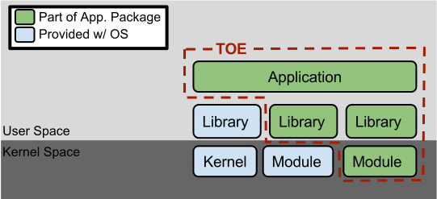

Added server-side TLS requirements (selection-based)
Multiple clarification based on NIAP TRRT inquiries
Refactored FDP_DEC_EXT.1 into separate components
v 1.3
2019-03-01
Incorporated available Technical Decisions
Refactored FPT_TUD
Added a selection to FTP_DIT
Moved SWID Tags requirement
Leveraged TLS Package
Added equivalency section
v 1.4
2021-10-07
Incorporated applicable Technical Decisions
Updated to TLSFP1.1
Incorporated SSHFP1.0
v 2.0
2025-02-11
CC2022 conversion Updating for TLSFP, SSHFP, and X509 FP TDs and GitHub Issues CNSA 2.0 updates ALC FLR Updates
The scope of this Protection Profile (PP) is to describe the security functionality of application software in terms of [CC] and to define functional and assurance requirements for such software. In recent years, software attacks have shifted from targeting operating systems to targeting applications. This has been the natural response to improvements in operating system security and development processes. As a result, it is paramount that the security of applications be improved to reduce the risk of compromise.
1.2 Terms
The following sections list Common Criteria and technology terms used in this document.
1.2.1 Common Criteria Terms
Assurance
Grounds for confidence that a TOE meets the SFRs [CC].
Base Protection Profile (Base-PP)
Protection Profile used as a basis to build a PP-Configuration.
Collaborative Protection Profile (cPP)
A Protection Profile developed by international technical communities and approved by multiple schemes.
Common Criteria (CC)
Common Criteria for Information Technology Security Evaluation (International Standard ISO/IEC 15408).
Common Criteria Testing Laboratory
Within the context of the Common Criteria Evaluation and Validation Scheme (CCEVS), an IT security evaluation facility
,
accredited by the National Voluntary Laboratory Accreditation Program (NVLAP) and approved by the NIAP Validation Body to conduct Common Criteria-based evaluations.
Common Evaluation Methodology (CEM)
Common Evaluation Methodology for Information Technology Security Evaluation.
Distributed TOE
A TOE composed of multiple components operating as a logical whole.
Extended Package (EP)
A deprecated document form for collecting SFRs that implement a particular protocol, technology, or functionality. See Functional Packages.
Functional Package (FP)
A document that collects SFRs for a particular protocol, technology, or functionality.
Operational Environment (OE)
Hardware and software that are outside the TOE boundary that support the TOE functionality and security policy.
Protection Profile (PP)
An implementation-independent set of security requirements for a category of products.
An anti-exploitation feature which loads memory mappings into unpredictable locations. ASLR makes it more difficult for an attacker to redirect control to code that they have introduced into the address space of an application process.
Application (app)
Software that runs on a platform and performs tasks on behalf of the user or owner of the platform, as well as its supporting documentation. The termsTOEandapplication are interchangeable in this document.
Application Programming Interface (API)
A specification of routines, data structures, object classes, and variables that allows an application to make use of services provided by another software component, such as a library. APIs are often provided for a set of libraries included with the platform.
Credential
Data that establishes the identity of a user, e.g. a cryptographic key or password.
Data Execution Prevention (DEP)
An anti-exploitation feature of modern operating systems executing on modern computer hardware, which enforces a non-execute permission on pages of memory. DEP prevents pages of memory from containing both data and instructions, which makes it more difficult for an attacker to introduce and execute code.
Developer
An entity that writes application software. For the purposes of this document, vendors and developers are the same.
Mobile Code
Software transmitted from a remote system for execution within a limited execution environment on the local system. Typically, there is no persistent installation and execution begins without the user's consent or even notification. Examples of mobile code technologies include JavaScript, Java applets, Adobe Flash, and Microsoft Silverlight.
Operating System (OS)
Software that manages hardware resources and provides services for applications.
Personally Identifiable Information (PII)
Any information about an individual maintained by an agency, including, but not limited to, education, financial transactions, medical history, and criminal or employment history and information which can be used to distinguish or trace an individual's identity, such as their name, social security number, date and place of birth, mother’s maiden name, biometric records, etc., including any other personal information which is linked or linkable to an individual.[OMB]
Platform
The environment in which application software runs. The platform can be an operating system, hardware environment, a software based execution environment, or some combination of these. These types of platforms may also run atop other platforms.
Sensitive Data
Sensitive data may include all user or enterprise data or may be specific application data such as emails, messaging, documents, calendar items, and contacts. Sensitive data must minimally include PII, credentials, and keys. Sensitive data shall be identified in the application’s TSS by the ST author.
Stack Cookie
An anti-exploitation feature that places a value on the stack at the start of a function call, and checks that the value is the same at the end of the function call. This is also referred to as Stack Guard, or Stack Canaries.
Vendor
An entity that sells application software. For purposes of this document, vendors and developers are the same. Vendors are responsible for maintaining and updating application software.
1.3 Compliant Targets of Evaluation
The requirements in this document apply to application software which runs on any type of platform. Some application types are covered by more specific PPs, which may be expressed as PP-Modules of this PP. Such applications are subject to the requirements of both this PP and the PP-Module that addresses their special functionality. PPsfor some particularly specialized applications may not be expressed as PP-Modules at this time, though the requirements in this document should be seen as objectives for those highly specialized applications.
Although the requirements in this document apply to a wide range of application software, consult guidance from the relevant national schemes to determine when formal Common Criteria evaluation is expected for a particular type of application. This may vary depending upon the nature of the security functionality of the application.
1.3.1 TOE Boundary
The application, which consists of the software provided by its vendor, is installed onto the platform(s) it operates on. It executes on the platform, which may be an operating system (Figure 1 ), hardware environment, a software based execution environment, or some combination of these (Figure 2 ). Those platforms may themselves run within other environments, such as virtual machines or operating systems, that completely abstract away the underlying hardware from the application. The TOE is not accountable for security functionality that is implemented by platform layers that are abstracted away. Some evaluation activities are specific to the particular platform on which the application runs, in order to provide precision and repeatability. The only platforms currently recognized by the AppPP are those specified in SFR Evaluation Activities. To test on a platform for which there are no EAs, a Vendor should contact NIAP with recommended EAs. NIAP will determine if the proposed platform is appropriate for the PP and accept, reject, or develop EAs as necessary in coordination with the technical community.
Applications include a diverse range of software such as office suites, thin clients, PDF readers, downloadable smartphone apps, and apps running in a cloud container. The TOE includes any software in the application installation package, even those pieces that may extend or modify the functionality of the underlying platform, such as kernel drivers. Many platforms come bundled with applications such as web browsers, email clients and media players and these too should be considered subject to the requirements defined in this document although the expectation of formal Common Criteria evaluation depends upon the national scheme. BIOS and other firmware, the operating system kernel, and other systems software (and drivers) provided as part of the platform are outside the scope of this document.

Figure 1: TOE as an Application and Kernel Module Running on an Operating System
Figure 2: TOE as an Application Running in an Execution Environment Plus Native Code
1.4 Use Cases
Requirements in this Protection Profile are designed to address the security problem in the following use cases. These use cases are intentionally very broad, as many specific use cases exist for application software. Many applications may be used in combinations of these broad use cases, and evaluation against PP-Modules of this PP, when available, may be most appropriate for some application types.
[USE CASE 1] Content Creation
The application allows a user to create content, saving it to either local or remote storage. Example content includes text documents, presentations, and images.
[USE CASE 2] Content Consumption
The application allows a user to consume content, retrieving it from either local or remote storage. Example content includes web pages and video.
[USE CASE 3] Communication
The application allows for communication interactively or non-interactively with other users or applications over a communications channel. Example communications include instant messages, email, and voice.
1.5 Platforms with Specific EAs
This PP includes platform-specific EAs for the below-listed operating system platforms. For "bare-metal" applications, applications that run on other OS platforms, and applications that run in software-based execution environments, contact the Technical Community for guidance.
Android : Mobile operating systems based on Google Android .
Microsoft Windows : Microsoft Windows operating systems .
Apple iOS and iPadOS : Apple's mobile operating system for iPhones .and iPads
Linux : Linux-based operating systems other than Android .
Oracle Solaris : Oracle's enterprise operating system .
Apple macOS : Apple's operating system for MACs .
2 Conformance Claims
Conformance Statement
An ST must claim exact conformance to this PP, as defined in the CC and CEM addenda for Exact Conformance, Selection-Based SFRs, and Optional SFRs (dated May 2017).
CC Conformance Claims
.
The evaluation methods used for evaluating the TOE are a combination of the workunits defined in [CEM] as well as the Evaluation Activities for ensuring that individual SFRs and SARs have a sufficient level of supporting evidence in the Security Target and guidance documentation and have been sufficiently tested by the laboratory as part of completing ATE_IND.1. Any functional packages this PP claims similarly contain their own Evaluation Activities that are used in this same manner.
CC Conformance Claims
This PP is conformant to Parts Part 2 (extended) and Part 3 (extended) of Common Criteria Version 3.1CC:2022, Revision 51.
PP Claim
This PP does not claim conformance to any other Protection Profile.
The following PPsand PP-Modules are allowed to be specified in a PP-Configuration with this PP. Protection Profile for Mobile Device Management Version 4:
This PP is Functional Package for TLSSecure Shell Version 1.1 Conformant2.0 conformant.
This PP is Functional Package for Transport Layer Security Version 2.1 conformant.
This PP is Functional Package for SSHX.509 Version 1.0 Conformant.
3 Security Problem Description
conformant.
This PP does not conform to any assurance packages.
The functional packages to which the PP conforms may include SFRs that are not mandatory to claim for the sake of conformance. An ST that claims one or more of these functional packages may include any non-mandatory SFRs that are appropriate to claim based on the capabilities of the TSF and on any triggers for their inclusion based inherently on the SFR selections made.
3 Security Problem Definition
The security problem is described in terms of the threats that the TOE is expected to address, assumptions about the operational environment, and any organizational security policies that the TOE is expected to enforce.
3.1 Threats
T.LOCAL_ATTACK
An attacker can act through unprivileged software on the same computing platform on which the application executes. Attackers may provide maliciously formatted input to the application in the form of files or other local communications.
T.NETWORK_ATTACK
An attacker is positioned on a communications channel or elsewhere on the network infrastructure. Attackers may engage in communications with the application software or alter communications between the application software and other endpoints in order to compromise it.
T.NETWORK_EAVESDROP
An attacker is positioned on a communications channel or elsewhere on the network infrastructure. Attackers may monitor and gain access to data exchanged between the application and other endpoints.
T.
LOCAL_ATTACK
An attacker can act through unprivileged software on the same computing platform on which the application executes. Attackers may provide maliciously formatted input to the application in the form of files or other local communications.
T.
PHYSICAL_ACCESS
An attacker may try to access sensitive data at rest.
3.2 Assumptions
A.PLATFORM
The TOE relies upon a trustworthy computing platform with a reliable time clock for its execution. This includes the underlying platform and whatever runtime environment it provides to the TOE.
A.PROPER_
USER
ADMIN
The user administrator of the application software is not careless, willfully negligent or hostile, and uses administers the software in compliance with the applied enterprise security policy.
A.PROPER_
ADMIN
USER
The administrator user of the application software is not careless, willfully negligent or hostile, and administers uses the software in compliance with the applied enterprise security policy.
3.3 Organizational Security Policies
This document does not define any additional OSPs.
4 Security Objectives
4.1 Security Objectives for the
TOE
O.INTEGRITY
Conformant TOEs ensure the integrity of their installation and update packages, and also leverage execution environment-based mitigations. Software is seldom, if ever, shipped without errors. The ability to deploy patches and updates to fielded software with integrity is critical to enterprise network security. Processor manufacturers, compiler developers, execution environment vendors, and operating system vendors have developed execution environment-based mitigations that increase the cost to attackers by adding complexity to the task of compromising systems. Application software can often take advantage of these mechanisms by using APIs provided by the runtime environment or by enabling the mechanism through compiler or linker options.
O.QUALITY
To ensure quality of implementation, conformant TOEs leverage services and APIs provided by the runtime environment rather than implementing their own versions of these services and APIs. This is especially important for cryptographic services and other complex operations such as file and media parsing. Leveraging this platform behavior relies upon using only documented and supported APIs.
O.MANAGEMENT
To facilitate management by users and the enterprise, conformant TOEs provide consistent and supported interfaces for their security-relevant configuration and maintenance. This includes the deployment of applications and application updates through the use of platform-supported deployment mechanisms and formats, as well as providing mechanisms for configuration. This also includes providing control to the user regarding disclosure of any PII.
O.PROTECTED_STORAGE
To address the issue of loss of confidentiality of user data in the event of loss of physical control of the storage medium, conformant TOEs will use data-at-rest protection. This involves encrypting data and keys stored by the TOE in order to prevent unauthorized access to this data. This also includes unnecessary network communications whose consequence may be the loss of data.
O.PROTECTED_COMMS
To address both passive (eavesdropping) and active (packet modification) network attack threats, conformant TOEs will use a trusted channel for sensitive data. Sensitive data includes cryptographic keys, passwords, and any other data specific to the application that should not be exposed outside of the application.
4.2 Security Objectives for the Operational Environment
The following security objectives for the operational environment assist the TOE in correctly providing its security functionality. These track with the assumptions about the environment.
OE.PLATFORM
The TOE relies upon a trustworthy computing platform for its execution. This includes the underlying operating system and any discrete execution environment provided to the TOE.
OE.PROPER_
USER
ADMIN
The user administrator of the application software is not careless, willfully negligent or hostile, and uses administers the software within compliance of the applied enterprise security policy.
OE.PROPER_
ADMIN
USER
The administrator user of the application software is not careless, willfully negligent or hostile, and administers uses the software within compliance of the applied enterprise security policy.
4.3 2 Security Objectives Rationale
This section describes how the assumptions , threats, and organizational security policies map to the operational environment security objectives.
The threat T.NETWORK_ATTACK is countered by O.MANAGEMENT as this provides for the ability to configure the application to defend against network attack.
The threat T.NETWORK_EAVESDROP is countered by O.MANAGEMENT as this provides for the ability to configure the application to protect the confidentiality of its transmitted data.
This chapter describes the security requirements which have to be fulfilled by the product under evaluation. Those requirements comprise functional components from Part 2 and assurance components from Part 3 of [CC]. The following conventions are used for the completion of operations:
Refinement operation (denoted by bold text or strikethrough text): is Is used to add details to a requirement (including replacing an assignment with a more restrictive selection) or to remove part of the requirement that is made irrelevant through the completion of another operation, and thus further restricts a requirement.
Selection (denoted by italicized text): is Is used to select one or more options provided by the [CC] in stating a requirement.
Assignment operation (denoted by italicized text): is Is used to assign a specific value to an unspecified parameter, such as the length of a password. Showing the value in square brackets indicates assignment.
Iteration operation: is Is indicated by appending the SFR name with a slash and unique identifier suggesting the purpose of the operation, e.g. "/EXAMPLE1."
inspect the application and its developer documentation to determine if the application needs
examine the TSS to verify that it describes whether the TSF has functions that require the use of asymmetric key generation services, and whether these services are implemented within the TOE boundary or invoked by the TSF from its operational environment.
If not,
Conditional: If the ST claims "generate no asymmetric keys," the evaluator shall
verify the generate no asymmetric cryptographic keys selection is present in the ST. Otherwise, the evaluation activities shall be performed as stated in the selection-based requirements
ensure that the TOE does not have any functions that would require asymmetric key generation (for example, because it does not use asymmetric keys for any purpose or because the keys that it does use are generated elsewhere and imported into it as part of initial setup).
The selection "invoke platform-provided DRBG functionality" should only be chosen for direct invocations of the platform DRBG
, calls to platform protocols that may then call the platform's DRBG are not directly using DRBG functionality and should select "use no DRBG functionality."
The selection "use no DRBG functionality " is chosen when the TSF calls a platform implementation of a function that subsequently calls a platform-provided DRBG itself, because this is not a direct invocation of the platform DRBG by the TSF.
.1 must be claimed for the DRBG mechanism, and FPT_TST.1 and FPT_FLS.1 must be claimed for the self-testing and error handling of this mechanism.
In this requirement, cryptographic operations include all cryptographic key generation/derivation/agreement, IVs (for certain modes), as well as protocol-specific random values. Cryptographic operations in this requirement refer to the other cryptographic requirements in this PP, not additional functionality that is not in scope.
If "use no DRBG functionality" is selected, the evaluator shall inspect the application and its developer documentation and verify that the application needs no random bit generation services.
If "implement DRBG functionality" is selected, the evaluator shall ensure that
If "invoke platform-provided DRBG functionality" is selected, the evaluator performs the following activities. The evaluator shall examine the TSS to confirm that it identifies all functions (as described by the SFRsincluded in the ST) that obtain random numbers from the platform RBG. The evaluator shall determine that for each of these functions, the TSS states which platform interface (API) is used to obtain the random numbers. The evaluator shall confirm that each of these interfaces corresponds to the acceptable interfaces listed for each platform below.
It should be noted that there is no expectation that the evaluators attempt to confirm that the APIs are being used correctly for the functions identified in the TSS; the activity is to list the used APIs and then do an existence check via decompilation.
Guidance
None
The evaluator shall verify the guidance documentation contains any information required for configuring the DRBG.
Tests
If "invoke platform-provided DRBG functionality" is selected, the following tests shall be performed:
The evaluator shall decompile the application binary using a decompiler suitable for the application (TOE). The evaluator shall search the output of the decompiler to determine that, for each API listed in the TSS, that API appears in the output. If the representation of the API does not correspond directly to the strings in the following list, the evaluator shall provide a mapping from the decompiled text to its corresponding API, with a description of why the API text does not directly correspond to the decompiled text and justification that the decompiled text corresponds to the associated API.
The following are the per-platform list of acceptable APIs:
: Mobile operating systems based on Google Android ]: The evaluator shall verify that the application uses at least one ofjavax.crypto.KeyGenerator class or thejava.security.SecureRandom class or/dev/random or/dev/urandom .
: Microsoft Windows operating systems ]: The evaluator shall verify thatrand_s,RtlGenRandom,BCryptGenRandom, orCryptGenRandomAPI is used for classic desktop applications. The evaluator shall verify the application uses theRNGCryptoServiceProviderclass or derives a class fromSystem.Security.Cryptography.RandomNumberGenerator APIfor Windows Universal Applications. It is only required that the API is called/invoked, there is no requirement that the API be used directly. In future versions of this document,CryptGenRandommay be removed as an option as it is no longer the preferred API per vendor documentation.
: Apple's operating system for MACs ]: The evaluator shall verify that the application invokes eitherCCRandomGenerateBytes orCCRandomCopyBytes , or collects random from/dev/random .
If invocation of platform-provided functionality is achieved in another way, the evaluator shall ensure the TSS describes how this is carried out, and how it is equivalent to the methods listed here (e.g. higher-level API invokes identical low-level API).
] with [assignment: positive integer of 1,000 or greater] iterations and output cryptographic key size of [assignment: positive integer of 256 of greater] bits that meet the following [NISTSP 800-132].
]
implement functionality to securely store [assignment: list of credentials] according to [selection: FCS_COP.1/SKC, FCS_CKMPBKDF_EXT.1/PBKDF]
] to non-volatile memory.
Application Note: This requirement ensures that persistent credentials (secret keys, PKI private keys, passwords, etc) are stored securely, and never persisted in cleartext form. Application developers are encouraged to use platform mechanisms for the secure storage of credentials. Depending on the platform that may include hardware-backed protection for credential storage. Application developers must choose a selection, or multiple selections, based on all credentials that the application stores. If "not store any credentials" is selected, then the application must not store any credentials. If "invoke the functionality provided by the platform to securely store" is selected, then the Application developer must closely review the EA for their platform and provide documentation indicating which platform mechanisms are used to store credentials. If "securely store " is selected, the application shall leverage platform cryptographic APIs to implement storage of credentials. If "implement functionality to securely store credentials" is selected, then the following components must be included in the ST: (FCS_COP.1/SKCor and FCS_CKMSNI_EXT.1/PBKDF. If other cryptographic operations are used to implement the secure storage of credentials, the corresponding requirements must be included in the ST) or FCS_PBKDF_EXT.1. If the OS is Linux and Java KeyStores are used to store credentials, "implement functionality to securely store credentials " must be selected.
The evaluator shall check the TSS to ensure that it lists all persistent credentials (secret keys, PKI private keys, or passwords) needed to meet the requirements in the ST. For each of these items, the evaluator shall confirm that the TSS lists for what purpose it is used, and how it is stored.
Ifnot store any credentials is selected, the evaluator shall verify the TSS describes the behavior of the TOE in sufficient detail to verify that the TSF does not have any behavior that would require any credentials to be stored (e.g., because the TOE does not have any functionality requiring authentication).
Ifsecurely store is selected, the evaluator shall verify the TSS contains the platform functions utilized and verify those functions are documented by the platform to be non-deprecated functions meeting the specifications in the requirement.
Ifinvoke the functionality provided by the platform to securely store is selected, the evaluator shall confirm the TSS describes how the platform storage is invoked for each supported platform. The evaluator shall confirm the invocation of the platform is using non-deprecated functions provided by the platform(s).
Guidance
None.
Tests
For all credentials for which the application implements functionality, the evaluator shall verify credentials are encrypted according to FCS_COP.1/SKC or conditioned according to FCS_
. For all credentials for which the application invokes platform-provided functionality, the evaluator shall perform the following actions which vary per platform.
: Microsoft Windows operating systems ]: The evaluator shall verify that all certificates are stored in the Windows Certificate Store. The evaluator shall verify that other credentials, like passwords, are stored in the Windows Credential Manager or stored using the Data Protection API (DPAPI). For Windows Universal Applications, the evaluator shall verify that the application is using the ProtectData class and storing credentials in IsolatedStorage.
leverage platform-provided functionality to encrypt sensitive data
implement functionality to encrypt sensitive data as defined in the PP-Module for File Encryption
protect sensitive data in accordance with FCS_STO_EXT.1
not store any sensitive data
] in non-volatile memory.
Application Note:
If "implement functionality to encrypt sensitive data as defined in the PP-Module for File Encryption " is selected, the TSF must claim conformance to a PP-Configuration that includes the File Encryption PP-Module.
Any file that may potentially contain sensitive data (to include temporary files) shall be protected. The only exception is if the user intentionally exports the sensitive data to non-protected files. ST authors should select "protect sensitive data in accordance with FCS_STO_EXT.1 " for the sensitive data that is covered by the FCS_STO_EXT.1SFR.
If any selection other thannot store any sensitive data is selected the evaluator shall examine the TSS to ensure that it describes the sensitive data processed by the application. The evaluator shall then ensure that the following activities cover all of the sensitive data identified in the TSS.
Ifnot store any sensitive data is selected, the evaluator shall inspect the TSS to ensure that it describes how sensitive data cannot be written to non-volatile memory. The evaluator shall also ensure that this is consistent with the filesystem test below.
Ifimplement functionality to encrypt sensitive data is selected the evaluator shall confirm the TSS describes how the application ensures all sensitive data is protected by the file encryption functions.
Ifprotect sensitive data in accordance with FCS_STO_EXT.1 is selected the evaluator shall confirm the TSS describes which data is protected via this mechanism and the selections within FCS_STO_EXT.1 that are leveraged. If multiple selections are included the evaluator shall ensure the TSS describes which sensitive data is captured by which selection.
If "leverage platform-provided functionality... " is selected, the evaluation activities will be performed as stated in the following requirements, which vary on a per-platform basis.
The evaluator shall inspect the TSS and ensure that it describes how the application uses the Complete Protection, Protected Unless Open, or Protected Until First User Authentication Data Protection Class for each data file stored locally.
The macOS platform currently does not provide data-at-rest encryption services which depend upon invocation by application developers.
Guidance
The evaluator shall confirm the operational guidance contains any instructions necessary for configuring the storage and protection of any sensitive data.
Ifleverage platform-provided functionality to encrypt sensitive data is selected the evaluator shall confirm the operational guidance contains the list of supported operational environments and any steps necessary to ensure the platform captures any sensitive data that is stored.
Tests
If "implement functionality to encrypt sensitive data as defined in the PP-Module for File Encryption " or "protect sensitive data in accordance with FCS_STO_EXT.1 " is selected, the evaluator shall inventory the filesystem locations where the application may write data. The evaluator shall run the application and attempt to store sensitive data. The evaluator shall then inspect those areas of the filesystem to note where data was stored (if any), and verify it has been encrypted.
If "leverage platform-provided functionality... " is selected no additional testing is required.
[assignment: list of additional hardware resources]
].
Application Note: The intent is for the evaluator to ensure that the selection captures all hardware resources which the application accesses, and that these are restricted to those which are justified. On some platforms, the application must explicitly solicit permission in order to access hardware resources. Seeking such permissions, even if the application does not later make use of the hardware resource, should still be considered access. Selections should be expressed in a manner consistent with how the application expresses its access needs to the underlying platform. For example, the platform may provide location services which implies the potential use of a variety of hardware resources (e.g. satellite receivers, WiFi, cellular radio) yet "location services " is the proper selection. This is because use of these resources can be inferred, but also because the actual usage may vary based on the particular platform. Resources that do not need to be explicitly identified are those which are ordinarily used by any application such as central processing units, main memory, displays, input devices (e.g. keyboards, mice), and persistent storage devices provided by the platform.
The application shall restrict its access to only [selection:
no sensitive information repositories,
address book,
calendar,
call lists,
system logs,
[assignment: list of additional sensitive information repositories]
].
Application Note: "Sensitive information repositories " are defined as those collections of sensitive data that could be expected to be shared among some applications, users, or user roles, but to which not all of these would ordinarily require access.
The evaluator shall perform the platform-specific actions below and inspect user documentation to determine the application's access to hardware resources. The evaluator shall ensure that this is consistent with the selections indicated. The evaluator shall review documentation provided by the application developer and for each resource which it accesses, identify the justification as to why access is required.
: Mobile operating systems based on Google Android ]: The evaluator shall verify that eachuses-permission entry in the AndroidManifest.xml file for access to a hardware resource is reflected in the selection.
AppxManifest.xml file for a list of required hardware capabilities. The evaluator shall verify that the user is made aware of the required hardware capabilities when the application is first installed. This includes permissions such as ID_CAP_ISV_CAMERA, ID_CAP_LOCATION, ID_CAP_NETWORKING, ID_CAP_MICROPHONE, ID_CAP_PROXIMITY and so on. A complete list of Windows App permissions can be found at:
For Windows Desktop Applications the evaluator shall identify in either the application software or its documentation the list of the required hardware resources.
: Oracle's enterprise operating system ]: The evaluator shall verify that either the application software or its documentation provides a list of the hardware resources it accesses.
: Apple's operating system for MACs ]: The evaluator shall verify that either the application software or its documentation provides a list of the hardware resources it accesses.
The evaluator shall perform the platform-specific actions below and inspect user documentation to determine the application's access to sensitive information repositories. The evaluator shall ensure that this is consistent with the selections indicated. The evaluator shall review documentation provided by the application developer and for each sensitive information repository which it accesses, identify the justification as to why access is required.
: Mobile operating systems based on Google Android ]: The evaluator shall verify that eachuses-permission entry in the AndroidManifest.xml file for access to a sensitive information repository is reflected in the selection.
AppxManifest.xml file for a list of required capabilities. The evaluator shall identify the required information repositories when the application is first installed. This includes permissions such as ID_CAP_CONTACTS,ID_CAP_APPOINTMENTS,ID_CAP_MEDIALIB and so on. A complete list of Windows App permissions can be found at:
For Windows Desktop Applications the evaluator shall identify in either the application software or its documentation the list of sensitive information repositories it accesses.
: Linux-based operating systems other than Android ]: The evaluator shall verify that either the application software or its documentation provides a list of sensitive information repositories it accesses.
: Oracle's enterprise operating system ]: The evaluator shall verify that either the application software or its documentation provides a list of sensitive information repositories it accesses.
: Apple's operating system for MACs ]: The evaluator shall verify that either the application software or its documentation provides a list of sensitive information repositories it accesses.
The application shall restrict network communication to [selection:
no network communication,
user-initiated communication for [assignment: list of functions for which the user can initiate network communication] ,
respond to [assignment: list of remotely initiated communication] ,
[assignment: list of application-initiated network communication]
].
Application Note: This requirement is intended to restrict both inbound and outbound network communications to only those required, or to network communications that are user initiated. It does not apply to network communications in which the application may generically access the filesystem which may result in the platform accessing remotely mounted drives/shares.
The evaluator shall verify the guidance documents contain any instructions necessary to configure the restriction of network communications.
Tests
The evaluator shall perform the following tests:
Test FDP_NET_EXT.1:1: The evaluator shall run the application. While the application is running, the evaluator shall sniff network traffic ignoring all non-application associated traffic and verify that any network communications witnessed are documented in the TSS or are user-initiated.
Test FDP_NET_EXT.1:2: The evaluator shall run the application. After the application initializes, the evaluator shall run network port scans to verify that any ports opened by the application have been captured in the ST for the third selection and its assignment. This includes connection-based protocols (e.g. TCP, DCCP) as well as connectionless protocols (e.g. UDP).
: Mobile operating systems based on Google Android ]: If "no network communication" is selected, the evaluator shall ensure that the application's AndroidManifest.xml file does not contain a uses-permission or uses-permission-sdk-23 tag containing android:name="android.permission.INTERNET". In this case, it is not necessary to perform the above Tests 1 and 2, as the platform will not allow the application to perform any network communication.
FDP_DAR
5.1.3 Security Management (FMT)
FMT_CFG_EXT.1
Encryption Of Sensitive Application DataFDP_DARleverage
implement functionality to encrypt sensitive data as defined in the PP-Module for File Encryption,
protect sensitive data in accordance with FCS_STO_EXT.1,
not store any sensitive data
] in non-volatile memory.
Application Note: If "implement functionality to encrypt sensitive data as defined in the PP-Module for File Encryption" is selected, the TSF must claim conformance to a PP-Configuration that includes the File Encryption PP-Module.
Any file that may potentially contain sensitive data (to include temporary files) shall be protected. The only exception is if the user intentionally exports the sensitive data to non-protected files. ST authors should select "protect sensitive data in accordance with FCS_STO_EXT.1" for the sensitive data that is covered by the FCS_STO_EXT.1SFR.
The evaluator shall examine the TSS to ensure that it describes the sensitive data processed by the application. The evaluator shall then ensure that the following activities cover all of the sensitive data identified in the TSS.
If not store any sensitive data is selected, the evaluator shall inspect the TSS to ensure that it describes how sensitive data cannot be written to non-volatile memory. The evaluator shall also ensure that this is consistent with the filesystem test below.
Guidance
None.
Tests
Evaluation activities (after the identification of the sensitive data) are to be performed on all sensitive data listed that are not covered by FCS_STO_EXT.1.
The evaluator shall inventory the filesystem locations where the application may write data. The evaluator shall run the application and attempt to store sensitive data. The evaluator shall then inspect those areas of the filesystem to note where data was stored (if any), and determine whether it has been encrypted.
If "leverage platform-provided functionality" is selected, the evaluation activities will be performed as stated in the following requirements, which vary on a per-platform basis.
The Windows platform currently does not provide data-at-rest encryption services which depend upon invocation by application developers. The evaluator shall verify that the Operational User Guidance makes the need to activate platform encryption, such as BitLocker or Encrypting File System (EFS), clear to the end user.
Platforms:Apple iOS... The evaluator shall inspect the TSS and ensure that it describes how the application uses the Complete Protection, Protected Unless Open, or Protected Until First User Authentication
credentials, provide only enough functionality to set new credentials when configured with default credentials or no credentials for application provided credentials.]
Application Note: Default credentials are credentials (e.g., passwords, keys) that are automatically (without user interaction) loaded onto the platform during application installation. Credentials that are generated during installation using requirements laid out in FCS_RBG_EXT.1 or established by leveraging platform accounts are not by definition default credentials.
The application shall be configured by default with file permissions which protect the application binaries and data files from modification by normal unprivileged users.
Application Note: The precise expectations for file permissions vary per platform but the general intention is that a trust boundary protects the application and its data.
The evaluator shall check that the TSS describes whether the application requires any type of application provided credentials and whether the application is pre-configured with default values for these credentials. If credentials are required, the evaluator shall verify that the TSS details how use of the TOE is restricted until new credentials are set (which includes the replacement of default credentials if any are present).
Guidance
The evaluator shall verify the guidance documentation details regarding any default or null application provided credentials being used and how they would be updated.
Tests
If the application uses any default credentials the evaluator shall run the following tests.
Test FMT_CFG_EXT.1.1:1: For any application provided credentials the evaluator shall install and run the application without generating or loading new credentials and verify that only the minimal application functionality required to set new credentials is available.
Test FMT_CFG_EXT.1.1:2: For any application provided credentials the evaluator shall attempt to clear all credentials and verify that only the minimal application functionality required to set new credentials is available.
Test FMT_CFG_EXT.1.1:3: For any application provided credentials the evaluator shall run the application, establish new credentials and verify that the original default credentials no longer provide access to the application.
The evaluator shall install and run the application. The evaluator shall inspect the filesystem of the platform (to the extent possible) for any files created by the application and ensure that their permissions are adequate to protect them. The method of doing so varies per platform.
Test FMT_CFG_EXT.1.2:1[conditional, Platforms:Android : Mobile operating systems based on Google Android ]: The evaluator shall run the commandfind -L . -perm /002 inside the application's data directories to ensure that all files are not world-writable. The command should not print any files (for this test, directories are not considered to be files).
Test FMT_CFG_EXT.1.2:2[conditional, Platforms:Microsoft Windows : Microsoft Windows operating systems ]: The evaluator shall run the SysInternals tools Process Monitor and Access Check (or tools of equivalent capability, like icacls.exe) for Classic Desktop applications to verify that files written to disk during an application's installation have the correct file permissions, such that a standard user cannot modify the application or its data files. For Windows Universal Applications the evaluator shall consider the requirement met because of the AppContainer sandbox.
The Linux platform currently does not provide data-at-rest encryption services which depend upon invocation by application developers. The evaluator shall verify that the Operational User Guidance makes the need to activate platform encryption clear to the end user.
The Solaris platform currently does not provide data-at-rest encryption services which depend upon invocation by application developers. The evaluator shall verify that the Operational User Guidance makes the need to activate platform encryption clear to the end user.
The macOS platform currently does not provide data-at-rest encryption services which depend upon invocation by application developers. The evaluator shall verify that the Operational User Guidance makes the need to activate platform encryption clear to the end user.
5.1.3 Security Management (FMT)
: Linux-based operating systems other than Android ]: The evaluator shall run the commandfind -L . -perm /002 inside the application's data directories to ensure that all files are not world-writable. The command should not print any files.
The application shall [selection: invoke the mechanisms recommended by the platform vendor for storing and setting configuration options, implement functionality to encrypt and store configuration options as defined by FDP_PRT_EXT.1 in the PP-Module for File Encryption].
Application Note:
Configuration options that are stored remotely are not subject to this requirement. Sensitive Data is generally not considered part of configuration options and should be stored according to FDP_DAR_EXT.1 or FCS_STO_EXT.1.
If “implement functionality to encrypt and store configuration options as defined by FDP_PRT_EXT.1 in the PP-Module for File Encryption" is selected, the TSF must claim conformance to a PP-Configuration that includes the PP-Module for File Encryption.
The evaluator shall review the TSS to identify the application's configuration options (e.g., settings) and determine whether these are stored and set using the mechanisms supported by the platform or implemented by the application in accordance with the PP-Module for File Encryption. At a minimum the TSS shall list settings related to any SFRsand any settings that are mandated in the operational guidance in response to an SFR.
Conditional: If "implement functionality to encrypt and store configuration options as defined by FDP_PRT_EXT.1 in the PP-Module for File Encryption" is selected, the evaluator shall ensure that the TSS identifies those options, as well as indicates where the encrypted representation of these options is stored.
Guidance
None
The evaluator shall verify the guidance documentation contains any information necessary to configure the protection of configuration settings.
Tests
If " invoke the mechanisms recommended by the platform vendor for storing and setting configuration options" is
chosen
selected, the method of testing varies per platform as follows:
application and make security-related changes to its configuration
TSS and verify that it describes what Android API is used (and provides a link to the documentation of the API) when storing configuration data. The evaluator shall
check that at least one XML file at location /data/data/package/shared_prefs/
run the application and verify that the behavior of the TOE is consistent with where and how the API documentation says the configuration data will be stored.
For SharedPreferences, the evaluator shall examine the XML file to make sure it reflects the changes made to the configuration to verify that the application used SharedPreferences
and/
or PreferenceActivity
classes for storing
to store the configuration data. For DataStore,
where package is the Java package of the application. Platforms:Microsoft Windows...
the evaluator shall use a protocol buffer analyzer to examine the file to make sure it reflects the changes made to the configuration to verify that the application used DataStore to store the configuration data.
: Linux-based operating systems other than Android ]: The evaluator shall run the application while monitoring it with the utilitystrace . The evaluator shall make security-related changes to its configuration. The evaluator shall verify thatstrace logs corresponding changes to configuration files that reside in /etc (for system-specific configuration), in the user's home directory (for user-specific configuration), or /var/lib/ (for configurations controlled by UI and not intended to be directly modified by an administrator).
: Oracle's enterprise operating system ]: The evaluator shall run the application while monitoring it with the utilitydtrace . The evaluator shall make security-related changes to its configuration. The evaluator shall verify thatdtrace logs corresponding changes to configuration files that reside in /etc (for system-specific configuration) or in the user's home directory (for user-specific configuration).
: Apple's operating system for MACs ]: The evaluator shall verify that the application stores and retrieves settings using theNSUserDefaults class.
If " implement functionality to encrypt and store configuration options as defined by FDP_PRT_EXT.1 in the PP-Module for File Encryption" is selected, for all configuration options listed in the TSS as being stored and protected using encryption, the evaluator shall examine the contents of the configuration option storage (identified in the TSS) to determine that the options have been encrypted.
The application shall provide only enough functionality to set new credentials when configured with default credentials or no credentials.
Application Note: Default credentials are credentials (e.g., passwords, keys) that are automatically (without user interaction) loaded onto the platform during application installation. Credentials that are generated during installation using requirements laid out in FCS_RBG_EXT.1 are not by definition default credentials.
The application shall be configured by default with file permissions which protect the application binaries and data files from modification by normal unprivileged users.
Application Note: The precise expectations for file permissions vary per platform but the general intention is that a trust boundary protects the application and its data.
The evaluator shall check the TSS to determine if the application requires any type of credentials and if the application installs with default credentials.
Guidance
None.
Tests
If the application uses any default credentials the evaluator shall run the following tests.
Test 1: The evaluator shall install and run the application without generating or loading new credentials and verify that only the minimal application functionality required to set new credentials is available.
Test 2: The evaluator shall attempt to clear all credentials and verify that only the minimal application functionality required to set new credentials is available.
Test 3: The evaluator shall run the application, establish new credentials and verify that the original default credentials no longer provide access to the application.
The evaluator shall install and run the application. The evaluator shall inspect the filesystem of the platform (to the extent possible) for any files created by the application and ensure that their permissions are adequate to protect them. The method of doing so varies per platform.
The evaluator shall run the command find -L . -perm /002 inside the application's data directories to ensure that all files are not world-writable. The command should not print any files.
The evaluator shall run the SysInternals tools, Process Monitor and Access Check (or tools of equivalent capability, like icacls.exe) for Classic Desktop applications to verify that files written to disk during an application's installation have the correct file permissions, such that a standard user cannot modify the application or its data files. For Windows Universal Applications the evaluator shall consider the requirement met because of the AppContainer sandbox.
The evaluator shall run the command find -L . -perm /002 inside the application's data directories to ensure that all files are not world-writable. The command should not print any files.
The evaluator shall run the command find . \( -perm -002 \) inside the application's data directories to ensure that all files are not world-writable. The command should not print any files.
The evaluator shall run the command find . -perm +002 inside the application's data directories to ensure that all files are not world-writable. The command should not print any files.
enable/disable transmission of any application state (e.g. crashdump) information,
enable/disable network backup functionality to [assignment: list of enterprise or commercial cloud backup systems] ,
[assignment: list of other management functions to be provided by the TSF]
].
Application Note: This requirement stipulates that an application needs to provide the ability to enable/disable only those functions that it actually implements. The application is not responsible for controlling the behavior of the platform or other applications.
The evaluator shall verify the TSS details how the application's management functions align with the selected management functions.
Guidance
The evaluator shall verify that every management function mandated by the PP is described in the operational guidance and that the description contains the information required to perform the management duties associated with the management function.
Tests
The evaluator shall test the application's ability to provide the management functions by configuring the application and testing each option selected from above. The evaluator is expected to test these functions in all the ways in which the ST and guidance documentation state the configuration can be managed.
5.1.4 Privacy (FPR)
FPR_ANO_EXT.1 User Consent for Transmission of Personally Identifiable Information
require user approval before executing [assignment: list of functions that transmit PII over a network]
].
Application Note:
PII is considered to be sensitive data. if "require user approval before executing... " is claimed, the ST must not claim "not transmit any... " in FTP_DIT_EXT.1.
This requirement applies only to PII that is specifically requested by the application; it does not apply if the user volunteers PII without prompting from the application into a general (or inappropriate) data field. A dialog box that declares intent to send PII presented to the user at the time the application is started is sufficient to meet this requirement.
If "not use PII " is claimed, the evaluator shall verify the TSS states the application does not utilize any PII.
If "not transmit PII over a network " is claimed, the evaluator shall verify that the TSS makes this assertion (e.g., because it does not use network connectivity at all or if the functions for which it uses network connectivity do not involve transmission of PII). If "require user approval before executing... is selected, the evaluator shall inspect the TSS documentation to
The evaluator shall verify the guidance documentation contains any instructions to configure the transmission of PII and details any prompts that would approve or deny transmission of PII.
Tests
If " require user approval before executing..." is selected, the evaluator shall run the application
and exercise the functionality responsibly for transmitting PII
, execute each function that is claimed as being used to transmit PII, and verify that user approval is required before transmission of the PIIfor each function.
The application shall use only documented platform APIs.
Application Note: The definition of "documented" may vary depending upon whether the application is provided by a third party (who relies upon documented platform APIs) or by a platform vendor who may be able to guarantee support for platform APIs.
The evaluator shall verify that the TSS lists the platform APIs used in the application.
Guidance
None.
Tests
The evaluator shall then compare the list with the supported APIs (available through e.g. developer accounts, platform developer groups) and ensure that all APIs listed in the TSS are supported.
not allocate any memory region with both write and execute permissions,
allocate memory regions with write and execute permissions for only [assignment: list of functions performing just-in-time compilation]
].
Application Note: Requesting a memory mapping with both write and execute permissions subverts the platform protection provided by DEP. If the application performs no just-in-time compiling, then the first selection must be chosen.
The application shall be compatible with security features provided by the platform vendor.
Application Note: This requirement is designed to ensure that platform security features do not need to be disabled in order for the application to run.
The application shall not write user-modifiable files to directories that contain executable files unless explicitly directed by the user to do so.
Application Note:
The purpose of this requirement is to help ensure the integrity of application binaries by supporting file protection mechanisms such as directory-level file permissions and application
whitelisting
allowlisting.
A user-modifiable file for purposes of this requirement is a file that is writable by an unprivileged user of the application -- either directly through application execution or independently of the application. If the application runs in the context of the application user, then the application should not be able to write to the directory containing the application binaries -- regardless of whether the files are configuration data, audit data, or temporary files.
Executables and user-modifiable files may not share the same parent directory, but may share directories above the parent.
The evaluator shall ensure that the TSS describes the compiler flags used to enable ASLR when the application is compiled. If any explicitly-mapped exceptions are claimed, the evaluator shall check that the TSS identifies these exceptions, describes the static memory mapping that is used, and provides justification for why static memory mapping is appropriate in this case.
Guidance
None.
Tests
The evaluator shall perform either a static or dynamic analysis to determine that no memory mappings are placed at an explicit and consistent address except for any exceptions claimed in the SFR. For these exceptions, the evaluator shall verify that this analysis shows explicit mappings that are consistent with what is claimed in the TSS. The method of doing so varies per platform. For those platforms requiring the same application running on two different systems, the evaluator may alternatively use the same device. After collecting the first instance of mappings, the evaluator must uninstall the application, reboot the device, and reinstall the application to collect the second instance of mappings.
: Mobile operating systems based on Google Android ]: The evaluator shall run the same application on two different Android systems. Both devices do not need to be evaluated, as the second device is acting only as a tool. Connect via ADB and inspect /proc/PID/maps. Ensure the two different instances share no memory mappings made by the application at the same location.
: Microsoft Windows operating systems ]: The evaluator shall run the same application on two different Windows systems and run a tool that will list all memory mapped addresses for the application. The evaluator shall then verify the two different instances share no mapping locations. The Microsoft SysInternals tool, VMMap, could be used to view memory addresses of a running application. The evaluator shall use a tool such as Microsoft's BinScope Binary Analyzer to confirm that the application has ASLR enabled.
: Linux-based operating systems other than Android ]: The evaluator shall run the same application on two different Linux systems. The evaluator shall then compare their memory maps usingpmap -xPID to ensure the two different instances share no mapping locations.
: Oracle's enterprise operating system ]: The evaluator shall run the same application on two different Solaris systems. The evaluator shall then compare their memory maps usingpmap -xPID to ensure the two different instances share no mapping locations.
: Apple's operating system for MACs ]: The evaluator shall run the same application on two different Mac systems. The evaluator shall then compare their memory maps usingvmmapPID to ensure the two different instances share no mapping locations.
: Microsoft Windows operating systems ]: The evaluator shall use a tool such as Microsoft's BinScope Binary Analyzer to confirm that the application passes the NXCheck. The evaluator may also ensure that the/NXCOMPAT flag was used during compilation to verify that DEP protections are enabled for the application.
: Apple's operating system for MACs ]: The evaluator shall perform static analysis on the application to verify that mprotect is never invoked with the PROT_EXEC permission.
If the OS platform supports Windows Defender Exploit Guard
(Windows 10 version 1709 or later)
, then the evaluator shall ensure that the application can run successfully with Windows Defender Exploit Guard Exploit Protection configured with the following minimum mitigations enabled; Control Flow Guard (CFG), Randomize memory allocations (Bottom-Up ASLR), Export address filtering (EAF), Import address filtering (IAF), and Data Execution Prevention (DEP). The following link describes how to enable Exploit Protection, https://
docs
learn.microsoft.com/en-us/
windows
microsoft-365/security/
threat-protection/windows-
defender-
exploit-guard
endpoint/
customize
enable-exploit-protection
.
If the OS platform supports the Enhanced Mitigation Experience Toolkit (EMET) which can be installed on Windows 10 version 1703 and earlier, then the evaluator shall ensure that the application can run successfully with EMET configured with the following minimum mitigations enabled; Memory Protection Check, Randomize memory allocations (Bottom-Up ASLR), Export address filtering (EAF), and Data Execution Prevention (DEP). Platforms:Apple iOS...
: Apple's operating system for MACs ]: The evaluator shall ensure that the application can successfully run on macOS without disabling any security features.
The evaluator shall run the application and determine where it writes its files. For files where the user does not choose the destination, the evaluator shall check whether the destination directory contains executable files. This varies per platform:
: Mobile operating systems based on Google Android ]: The evaluator shall run the program, mimicking normal usage, and note where all user-modifiable files are written. The evaluator shall ensure that there are no executable files stored under/data/data/package / wherepackage is the Java package of the application.
: Microsoft Windows operating systems ]: For Windows Universal Applications the evaluator shall consider the requirement met because the platform forces applications to write all data within the application working directory (sandbox). For Windows Desktop Applications the evaluator shall run the program, mimicking normal usage, and note where all user-modifiable files are written. The evaluator shall ensure that there are no executable files stored in the same directories to which the application wrote user-modifiable files.
: Linux-based operating systems other than Android ]: The evaluator shall run the program, mimicking normal usage, and note where all user-modifiable files are written. The evaluator shall ensure that there are no executable files stored in the same directories to which the application wrote user-modifiable files.
: Oracle's enterprise operating system ]: The evaluator shall run the program, mimicking normal usage, and note where all user-modifiable files are written. The evaluator shall ensure that there are no executable files stored in the same directories to which the application wrote user-modifiable files.
: Apple's operating system for MACs ]: The evaluator shall run the program, mimicking normal usage, and note where all user-modifiable files are written. The evaluator shall ensure that there are no executable files stored in the same directories to which the application wrote user-modifiable files.
: Microsoft Windows operating systems ]: Applications that run as Managed Code in the .NET Framework do not require these stack protections. Applications developed in Object Pascal using the Delphi IDE compiled with RangeChecking enabled comply with this element. For other code, the evaluator shall review the TSS and verify that the /GS flag was used during compilation. The evaluator shall run a tool like,
BinScope
BinSkim, that can verify the correct usage of /GS.
be versioned with [selection: SWID tags that comply with minimum requirements from ISO/IEC 19770-2:2015 , [assignment: other version information]]
use only documented platform APIs.
Application Note: The
use of SWID tag to identify application software is a requirement for DOD IT based on DoD Instruction 8500.01 which requires the use of SCAP which includes SWID tags per the NIST standard. The PP selection of "other version information" will be removed in the next major release of this protection profile. Vendors should begin to version software with valid SWID tags.
Valid SWID tags must contain a SoftwareIdentity element and an Entity element as defined in the ISO/IEC 19770-2:2015 standard. SWID tags must be stored with a .swidtag file extensions as defined in the ISO/IEC 19770-2:2015.
definition of "documented " may vary depending upon whether the application is provided by a third party (who relies upon documented platform APIs) or by a platform vendor who may be able to guarantee support for platform APIs.
contains an explanation of the versioning methodology.
Guidance
None.
Tests
lists the platform APIs used in the application. The evaluator shall
install the application, then check for the existence of version information. If SWID tags is selected the evaluator shall check for a .swidtag file. The evaluator shall open the file and verify that is contains at least a SoftwareIdentity element and an Entity element.
then compare the list with the supported APIs (available through e.g. developer accounts, platform developer groups) and ensure that all APIs listed in the TSS are supported.
The application shall be packaged with only [assignment: list of third-party libraries].
Application Note: The intention of this requirement is for the evaluator to discover and document whether the application is including includes unnecessary or unexpected third-party libraries. This includes adware libraries which could present a privacy threat, as well as ensuring documentation of such libraries in case vulnerabilities are later discovered.
The evaluator shall install the application and survey its installation directory for dynamic libraries. The evaluator shall verify that libraries found to be packaged with or employed by the application are limited to those in the assignment.
FPT_TUD_EXT.1 Integrity for Installation and Update
The application shall [selection: provide the ability, leverage the use platform-provided services] to check for updates and patches to the application software.
Application Note: This requirement is about the ability to "check" for updates. The actual installation of any updates should be done by the platform. This requirement is intended to ensure that the application can check for updates provided by the vendor, as updates provided by another source may contain malicious code.
The application shall [selection: provide the ability, leverage the use platform-provided services] to query the current version of the application software.
not download, modify, replace or update its own binary code
].
Application Note:
This requirement applies to the code of the application; it does not apply to mobile code technologies that are designed for download and execution by the application.
If "perform trusted updates" is selected then FPT_TUD_EXT.2 must be included in the ST.
Application updates shall be digitally signed such that the application platform can cryptographically verify them prior to installation.
Application Note: The specifics of the verification of updates involves requirements on the platform (and not the application), so these are not fully specified here.
The application is distributed [selection: with the platform OS, as an additional software package to the platform OS].
Application Note: Application software that is distributed as part of the platform operating system is not required to be package packaged for installation or uninstallation. If "as an additional software package to the platform OS" is selected, the requirements from FPT_TUD_EXT.2 must be included in the ST.
The evaluator shall verify the TSS contains a description of the update mechanism leveraged, how new updates are checked for, how the current version is checked for, and how the updates are signed.
Guidance
The evaluator shall check to ensure the guidance includes a description of how
updates are performed
to check for and apply new updates.
Tests
The evaluator shall check for an update using procedures described in either the application documentation or the platform documentation and verify that the application does not issue an error. If it is updated or if it reports that no update is available this requirement is considered to be met.
NoneThere are no additional TSS evaluation activities for this element.
Guidance
The evaluator shall verify guidance includes a description of how to query the current version of the application.
Tests
The evaluator shall query the application for the current version of the software according to the operational user guidance. The evaluator shall then verify that the current version matches that of the documented and installed version.
NoneThere are no additional TSS evaluation activities for this element.
Guidance
NoneThere are no additional Guidance evaluation activities for this element.
Tests
The
Conditional: If "not download, modify, replace or update its own binary code" is selected the evaluator shall verify that the application's executable files are not changed by the application
The evaluator shall verify that the TSS identifies how updates to the application are signed by an authorized source. The definition of an authorized source must be contained in the TSS. The evaluator shall also ensure that the TSS (or the operational guidance) describes how candidate updates are obtained.
Guidance
NoneThere are no additional Guidance evaluation activities for this element.
Tests
NoneThere are no test activities for this element.
an additional package..." is selected, the evaluator shall perform the tests in FPT_TUD_EXT.2.
Guidance
None.
Tests
None
If " with the platform OS" is selected, the evaluator shall perform a clean installation or factory reset to confirm that TOE software is included as part of the platform OS.
invoke platform-provided functionality to encrypt all transmitted sensitive data with [selection: HTTPS, TLS, DTLS, SSH] , , IPsec] for [assignment: function(s)] using certificates as defined in the Functional Package for X.509
invoke platform-provided functionality to encrypt all transmitted data with [selection: HTTPS, TLS, DTLS, SSH, IPsec] for [assignment: function(s)] using certificates as defined in the Functional Package for X.509
Encryption is not required for applications transmitting data that is not sensitive.
If "
encrypt all transmitted
not transmit any..." is selected
and "TLS" is selected, then evaluation of elements from either FCS_TLSC_EXT.1 or FCS_TLSS_EXT.1 is required.
If "encrypt all transmitted" is selected, "HTTPS" is selected, and the TOE acts as a client, then FCS_HTTPS_EXT.1/Client is required
, no other option can be selected.
If "not transmit any... " is NOT selected, it is possible to select more than one of the other options to encrypt data for a specific cryptographic function (e.g., application encrypts management data using SSH AND application invokes platform-provided functionality to encrypt syslog data using TLS OR application encrypts syslog data using TLS. Protocol selections and function assignments should be made to cover all data/sensitive data.
If "encrypt all transmitted..." is selected and "IPsec" is selected, then the TSF must claim conformance to aPP-Configuration that includes the VPN Client PP-Module, version 2.6.
Claims from the Functional Package for X.509are only required to the extent that they are needed to support the functionality required by the trusted protocols that are claimed.
If the TSF implements a protocol that requires the validation of a certificate presented by an external entity, FIA_X509_EXT.1 and FIA_X509_EXT.2
are required when the following is true:
"encrypt all transmitted" is selected and the TOE implements a protocol that requires certificates
"invoke platform-provided functionality to encrypt all transmitted sensitive data" is selected and the platform implements a protocol that requires certificates
"invoke platform-provided functionality to encrypt all transmitted data" is selected and the platform implements a protocol that requires certificates
will be claimed. FIA_TSM_EXT.1 may also be claimed if the TSF implements its own trust store. Note that FIA_X509_EXT.1 and FIA_X509_EXT.2 have selections for invocation of platform-provided functionality, so it is expected that these claims are made and tested even when the trusted protocol is implemented by the TOE platform.
If the TSF implements a protocol that requires the presentation of any certificates to an external entity, FIA_XCU_EXT.2 from Functional Package for X.509will be claimed. FIA_X509_EXT.3 from Functional Package for X.509will also be claimed, along with any applicable dependencies, depending on how the certificates presented by the TOE are obtained.
If the TSF implements a protocol that does not require presenting or validating X.509 certificates, no claims from the Functional Package for X.509are required.
The evaluator shall confirm the TSS describes the data transmitted, and verify it matches the selections of alldata orsensitive data .
The evaluator shall confirm the TSS describes the method by which the data is protected and that is matches the chosen selections, if multiple selections are included the evaluator shall verify the TSS describes which data is sent over which trusted channels and the totality of the data type selection is covered by all chosen selections.
For platform-provided functionality, the evaluator shall verify the TSS contains the calls to the platform that the TOE is leveraging to invoke the functionality. The evaluator shall verify calls are documented by the platform vendor and non-deprecated.
Guidance
None
For platform-provided HTTPS, IPsec, TLS, or DTLS as a client the evaluator shall verify that the TSS lists any specific calls the product uses that specifies or allows the end users to specify cipher suites, support for mutual authentication, support for session renegotiation, hash algorithms for the signature_algorithms extension in the Client Hello with the supported_signature_algorithms value, and the supported groups in the Supported Groups Extension in Client Hello. The evaluator shall verify any calls the product specifies align with the options provided in this PP and the Functional Package for Transport Layer Security (TLS), version 2.1 .
For platform-provided HTTPS, IPsec, TLS, or DTLS as a server the evaluator shall verify that the TSS lists any specific calls the product uses that specifies or allows the end users to specify cipher suites, which protocols are denied connection requests, key establishment algorithms, support for mutual authentication, response to an invalid client certificate, and support for session renegotiation. The evaluator shall verify any calls the product specifies align with the options provided in this PP and the Functional Package for Transport Layer Security (TLS), version 2.1 .
For platform-provided HTTPS the evaluator shall verify that the TSS lists any specific calls the product uses that specifies or allows the end users to specify the response to an invalid certificate.
For platform-provided HTTPS as a server the evaluator shall verify that the TSS lists any specific calls the product uses that specifies or allows the end users to specify cipher suites, which protocols are denied connection requests, key establishment algorithms, support for mutual authentication, response to an invalid client certificate, and support for session renegotiation. The evaluator shall verify any calls the product specifies align with the options provided in this PP and the Functional Package for Transport Layer Security (TLS), version 2.1 .
For platform-provided SSH the evaluator shall verify that the TSS lists any specific calls the product uses that specifies or allows the end users to specify the applicable RFCs, the authentication methods, the limit for dropping large packets in an SSH transport connection, the SSH transport accepted algorithms, the SSH public key for public-key based authentication, The diffie-hellman-group used for key exchange, and the parameters of session rekey or termination. The evaluator shall verify any calls the product specifies align with the options provided in this PP and the Functional Package for Secure Shell (SSH), version 2.0 .
Guidance
The evaluator shall confirm the guidance documentation contains any information necessary for enabling and configuring the trusted channels that have been selected.
Tests
The evaluator shall perform the following tests.
Test FTP_DIT_EXT.1:1: If "not transmit any data " is selected, the evaluator shall exercise each of the TOE's identified functions, while observing the network traffic from the device and verify that no TSF initiated connections were observed during the attempts.
Test FTP_DIT_EXT.1:2: The evaluator shall exercise the application (attempting to transmit data; for example by connecting to remote systems or websites) while capturing packets from the application. The evaluator shall verify from the packet capture that the traffic is encrypted with HTTPS, TLS, DTLS, SSH, or IPsec in accordance with the selection in the ST.
FTP_DIT_EXT.1:3: The evaluator shall exercise the application (attempting to transmit data; for example by connecting to remote systems or websites) while capturing packets from the application. The evaluator shall review the packet capture and verify that no sensitive data is transmitted in the clear.
FTP_DIT_EXT.1:4: The evaluator shall inspect the TSS to determine if user credentials are transmitted. If credentials are transmitted the evaluator shall set the credential to a known value. The evaluator shall capture packets from the application while causing credentials to be transmitted as described in the TSS. The evaluator shall perform a string search of the captured network packets and verify that the plaintext credential previously set by the evaluator is not found.
: Mobile operating systems based on Google Android ]: If "not transmit any data" is selected, the evaluator shall ensure that the application's AndroidManifest.xml file does not contain a uses-permission or uses-permission-sdk-23 tag containing android:name="android.permission.INTERNET". In this case, it is not necessary to perform the above Tests 1, 2,
or
3, or 4 as the platform will not allow the application to perform any network communication.
and iPadOS : Apple's mobile operating system for iPhones and iPads ]: If "encrypt all transmitted data" is selected, the evaluator shall ensure that the application's Info.plist file does not contain the NSAllowsArbitraryLoads or NSExceptionAllowsInsecureHTTPLoads keys, as these keys disable iOS's Application Transport Security feature.
5.1.7 TOE Security Functional Requirements Rationale
The following rationale provides justification for each security objective SFRfor the TOE, showing that the SFRsare suitable to meet and achieve the security objectivesaddress the specified threats:
The PP includes FDP_DEC_EXT.1 to limit access to platform hardware resources, which limits the methods by which an attacker can attempt to compromise the integrity of the TOE.
The PP includes FMT_CFG_EXT.1 for the TSP to limit unauthorized access to itself by preventing the use of default authentication credentials and by ensuring that the TOE uses appropriately restrictive platform permissions on its binaries and data
The PP includes FPT_AEX_EXT.1 to add complexity to the task of compromising systems by ensuring that application is compatible with security features provided by the platform vendor and that the application implements platform-provided anti-exploitations such as ASLR and stack overflow protection.
The PPsupports this objective by allowing includes FDP_DAR_EXT.1 to specify that the TSF may rely on platform-provided data-at-rest protection services.
The PP includes FDP_DEC_EXT.1 to limit access to platform hardware resources, which limits the methods by which an attacker can attempt to locally compromise the integrity of the TOE.
The PP includes FMT_CFG_EXT.1 for the TSP to limit unauthorized access to itself by preventing the use of default authentication credentials and by ensuring that the TOE uses appropriately restrictive platform permissions on its binaries and data
The PP includes FPT_AEX_EXT.1 to add complexity to the task of compromising systems by ensuring that the TOE implements various platform security features and can operate on a platform that is configured securely.
The PP includes FPT_LIB_EXT.1 to ensure that the TOE does not include any unnecessary or unexpected third-party libraries which could present a privacy threat or vulnerability.
The PPsupports this objective by allowing FTP_DIT_EXT.1 to specify that the TSF may rely on platform-provided services to implement includes FPT_TUD_EXT.1 to ensure that the TOE can be patched and that any updates to the TOE have appropriate integrity protection.
The PP includes FPT_TUD_EXT.2 to ensure that TOE updates are packaged in a certain format, provide certain integrity protections, and remove residual data.
The PP includes FCS_CKM_EXT.1 to specify whether the TOE or the platform is responsible for generation of any asymmetric keys that may be used for establishing trusted communications.
The PPsupports this objective by allowing includes FCS_CKM.1/AK to specify that define whether the TSFmay rely on platform-provided asymmetric key generation servicesor the platform generates asymmetric keys that are used in support of trusted communications.
The PPsupports this objective by allowing includes FCS_CKM.2 to specify that define whether the TSFmay rely on platform-provided or the platform performs key establishment servicesfor trusted communications.
The PPsupports this objective by allowing FIA_X509_EXT.1 to specify that the TSF may rely on platform-provided X.509 certificate validation services.FPT_TUD_EXT.2includes FCS_COP.1/Hash to define the hash algorithms used in support of trusted communications.
The TSFPPincludes FPTFCS_TUDHTTPS_EXT.21 to specify that define the TOEmay leverage the platform-supported package manager for application distribution and leverages platform-provided mechanisms to remove all traces of itself when removed from the platform system.
The PP includes FCS_RBG_EXT.1 to define whether the random bit generation services used in establishing trusted communications are implemented by the TSF or by the platform.
The PP includes FDP_DEC_EXT.1 to limit access to platform hardware resources, which limits the methods by which an attacker can attempt to remotely compromise the integrity of the TOE.
The PP includes FDP_NET_EXT.1 to define the TOE’s usage of network communications, which may include the transmission or receipt of data over a trusted channel.
The PP includes FMT_CFG_EXT.1 for the TSP to limit unauthorized access to itself by preventing the use of default authentication credentials and by ensuring that the TOE uses appropriately restrictive platform permissions on its binaries and data
The PP includes FMT_SMF.1 to define the security-relevant management functions that are supported by the TOE, which may include configuration of network behavior.
The PP includes FPT_IDVAEX_EXT.1 to provide a methodology for identifying the TOE versioningadd complexity to the task of compromising systems by ensuring that the TOE implements various platform security features and can operate on a platform that is configured securely.
The PP includes FPT_TUD_EXTFLS.1 to define how updates to the TOE are deployed and verified.FCS_COP.1/Sigensure that the TSF will not operate when it is in a state where it is unable to generate secure random numbers.
The PP includes FCSFPT_COPIDV_EXT.1/Sig to define the provide a mechanism used to verify TOE updates if the TOE implements this functionality rather than the underlying platform.
define whether random bit generation services are implemented by the TSF or the platform. Depending on how data at rest is protected, the TOE may rely on the use of a random bit generator to create keys that are subsequently used for data protection.
FCS_STOensure that updates to the TOE have integrity protection and cannot be altered via network attack.
The PP includes FCSFTP_STODIT_EXT.1 to define the mechanism that the TSF uses or relies upon to protect stored credential data.FDP_DAR_EXT.1trusted channels used to protect data in transit, the data that is protected, and whether the trusted channels are implemented by the TSF or the platform.
The PP includes FCS_CKM.1/SK to define the TOE’s capability mechanism used to generate symmetric keys . These keys may subsequently be used to encrypt stored credential data based on the claims made in FCS_STO_EXT.1.when the TOE performs this function.
The PP includes FCS_CKM.1/PBKDF2 to define the password-based key derivation function that may be used to encrypt stored credential data based on the claims made in FCS_STOwhether the TSF or the platform performs key establishment for trusted communications.
The PP includes FCS_CKM_EXT.1 to specify whether the TOE or the platform is responsible for generation of any asymmetric keys that may be used for establishing trusted communications.
The PP includes FCS_COP.1/SKCKeyedHash to define the AES cryptographic algorithm that may be used to encrypt stored credential data based on the claims made in FCS_STO_EXT.1.HMAC algorithms used in support of trusted communications.
The PP includes FCS_COP.1/Hash to define integrity mechanisms that may be used by the TOE as part of ensuring that data at rest is protectedthe hash algorithms used in support of trusted communications.
The PP includes FCS_COP.1/SigVer to define the mechanism used to verify TOE updates if the TOE implements this functionality rather than the underlying platform.
The PP includes FCS_COP.1/KeyedHashSKC to define HMAC mechanisms that may be used by the TOE as part of ensuring that data at rest is protectedthe symmetric encryption algorithms used in support of trusted communications.
The PP includes FCS_RBGHTTPS_EXT.21 to define the TOE’s implementation of random bit generation functionality in the event that the TOE provides this function in support of generating keys that are used for data protection.
The PP includes FCS_RBG_EXT.1 to define whether the random bit generation services used in establishing trusted communications are implemented by the TSF or by the platform.
The PP includes FCS_CKM_EXT.1 to specify whether the TOE or the platform is responsible for generation of any asymmetric keys that may be used for establishing trusted communications.RBG.1 to define the DRBG algorithms used in support of trusted communications.
The PP includes FDP_NET_EXT.1 to define the TOE’s usage of network communications, which may include the transmission or receipt of data over a trusted channel.
The PP includes FPT_IDV_EXT.1 to provide a mechanism to identify the TOE version so that it can be determined whether a vulnerability is present on the system based on the installed version.
The PP includes FPT_LIB_EXT.1 to ensure that the TOE does not include any unnecessary or unexpected third-party libraries which could present a privacy threat or vulnerability.
The PP includes FTP_DIT_EXT.1 to define the trusted channels used to protect data in transit, the data that is protected, and whether the trusted channels are implemented by the TSF or the platform.
whether the TSF or the platform generates asymmetric keys that are used in support of trusted communications.FCS_CKM.2
the TOE’s capability to generate symmetric keys. These keys may subsequently be used to encrypt stored credential data based on the claims made in FCS_STO_EXT.1.
The PP includes FCS_CKMCOP.21/KeyedHash to define whether the TSF or the platform performs key establishment for trusted communicationsHMAC mechanisms that may be used by the TOE as part of ensuring that data at rest is protected.
The PP includes FCS_COP.1/SKCHash to define the symmetric encryption algorithms used in support of trusted communicationsintegrity mechanisms that may be used by the TOE as part of ensuring that data at rest is protected.
The PP includes FCS_COP.1/HashSKC to define the hash algorithms used in support of trusted communications.FCS_COP.1/SigAES cryptographic algorithm that may be used to encrypt stored credential data based on the claims made in FCS_STO_EXT.1.
The PP includes FCS_COPPBKDF_EXT.1/Sig to define the digital signature algorithms used in support of trusted communicationspassword-based key derivation function that may be used to encrypt stored credential data based on the claims made in FCS_STO_EXT.1.
The PP includes FCS_RBG_EXT.1 to define whether random bit generation services are implemented by the TSF or the platform. Depending on how data at rest is protected, the TOE may rely on the use of a random bit generator to create keys that are subsequently used for data protection.
The PP includes FCS_HTTPS_EXT.1 to define the TOE’s support for the HTTPS trusted communications protocol as a clientRBG.4 to define how entropy is obtained for secure DRBG seeding.
The PP includes FCS_HTTPSSTO_EXT.1 to define the TOE’s support for the HTTPS trusted communications protocol as a servermechanism that the TSF uses or relies upon to protect stored credential data.
The PP includes FDP_NETDAR_EXT.1 to define the TOE’s usage of network communications, which may include the transmission or receipt of data over a trusted channel.FIA_X509_EXT.1mechanism that the TSF uses or relies upon to protect sensitive data at rest.
The PP includes FIAFPT_X509_EXTFLS.1 to define X.509 certificate validation activities in support of trusted communications.FIA_X509_EXT.2ensure that the TSF will not operate when it is in a state where it is unable to generate secure random numbers.
The PP includes FIAFPT_X509IDV_EXT.2 to define the trusted communications that X.509 certificate services support, as well as the extent to which trusted communications can be established when using a certificate with unknown validity.
1 to provide a mechanism to identify the TOE version so that it can be determined whether a vulnerability is present on the system based on the installed version.
The PP includes FPT_TST.1 to ensure that the TSF can determine whether or not it is capable of generating secure random numbers.
5.2 Security Assurance Requirements
The PP identifies the Security Assurance Requirements (SARs) to frame the extent to which the evaluator assesses the documentation applicable for the evaluation and performs independent testing.
This section lists the set of SARsfrom CC part 3 that are required in evaluations against this PP. Individual Evaluation Activities (EAs) to be performed are specified both in Section 5 Security Requirements as well as in this section. These SARs were chosen based on the notion that a hypothetical attacker of the TOE lacks administrative privilege on its platform but otherwise has persistent access to the TOE itself and the sophistication to interact with the platform in a way that they can attempt to access stored data without authorization or to run tools that automate more sophisticated malicious activity.
The general model for evaluation of TOEsagainst STswritten to conform to this PP is as follows:
After the ST has been approved for evaluation, the CCTL will obtain the TOE, supporting environmental IT, and the administrative/user guides for the TOE. The CCTL is expected to perform actions mandated by the Common Evaluation Methodology (CEM) for the ASE and ALC SARs. The CCTL also performs the evaluation activities contained within Section 5 Security Requirements , which are intended to be an interpretation of the other CEM assurance requirements as they apply to the specific technology instantiated in the TOE. The evaluation activities that are captured in Section 5 Security Requirements also provide clarification as to what the developer needs to provide to demonstrate the TOE is compliant with the PP. The results of these activities will be documented and presented (along with the administrative guidance used) for validation.
The information about the TOE is contained in the guidance documentation available to the end user as well as the TSS portion of the ST. The TOE developer must concur with the description of the product that is contained in the TSS as it relates to the functional requirements. The evaluation activities contained in Section 5.1 Security Functional Requirements should provide the ST authors with sufficient information to determine the appropriate content for the TSS section.
The functional specification describes the TSFIs. It is not necessary to have a formal or complete specification of these interfaces. Additionally, because TOEsconforming to this PP will necessarily have interfaces to the Operational Environment that are not directly invokable invocable by TOE users, there is little point specifying that such interfaces be described in and of themselves since only indirect testing of such interfaces may be possible. For this PP, the activities for this family should focus on understanding the interfaces presented in the TSS in response to the functional requirements and the interfaces presented in the AGD documentation. No additional “functional specification” documentation is necessary to satisfy the evaluation activities specified. The interfaces that need to be evaluated are characterized through the information needed to perform the assurance activities listed, rather than as an independent, abstract list.
The developer shall provide a tracing from the functional specification to the SFRs.
Application Note: As indicated in the introduction to this section, the functional specification is comprised of the information contained in the AGD_OPE and AGD_PRE documentation. The developer may reference a website accessible to application developers and the evaluator. The evaluation activities in the functional requirements point to evidence that should exist in the documentation and TSS section; since these are directly associated with the SFRs, the tracing in element ADV_FSP.1.2D is implicitly already done and no additional documentation is necessary.
There are no specific evaluation activities associated with these SARs, except ensuring the information is provided. The functional specification documentation is provided to support the evaluation activities described in Section 5.1 Security Functional Requirements , and other activities described for AGD, ATE, and AVA SARs. The requirements on the content of the functional specification information is implicitly assessed by virtue of the other evaluation activities being performed; if the evaluator is unable to perform an activity because there is insufficient interface information, then an adequate functional specification has not been provided.
5.2.3 Class AGD: Guidance Documentation
The guidance documents will be provided with the ST. Guidance must include a description of how the IT personnel verifies that the Operational Environment can fulfill its role for the security functionality. The documentation should be in an informal style and readable by the IT personnel. Guidance must be provided for every operational environment that the product supports as claimed in the ST. This guidance includes instructions to successfully install the TSF in that environment; and Instructions instructions to manage the security of the TSF as a product and as a component of the larger operational environment. Guidance pertaining to particular security functionality is also provided; requirements on such guidance are contained in the evaluation activities specified with each requirement.
The developer shall provide operational user guidance.
Application Note: The operational user guidance does not have to be contained in a single document. Guidance to users, administrators and application developers can be spread among documents or web pages. Where appropriate, the guidance documentation is expressed in the eXtensible Configuration Checklist Description Format (XCCDF) to support security automation. Rather than repeat information here, the developer should review the evaluation activities for this component to ascertain the specifics of the guidance that the evaluator will be checking for. This will provide the necessary information for the preparation of acceptable guidance.
The operational user guidance shall describe, for each user role, the user-accessible functions and privileges that should be controlled in a secure processing environment, including appropriate warnings.
Application Note: User and administrator are to be considered in the definition of user role.
The operational user guidance shall describe, for each user role, the available functions and interfaces, in particular all security parameters under the control of the user, indicating secure values as appropriate.
The operational user guidance shall, for each user role, clearly present each type of security-relevant event relative to the user-accessible functions that need to be performed, including changing the security characteristics of entities under the control of the TSF.
The operational user guidance shall identify all possible modes of operation of the TOE (including operation following failure or operational error), their consequences, and implications for maintaining secure operation.
The operational user guidance shall, for each user role, describe the security measures to be followed in order to fulfill the security objectives for the operational environment as described in the ST.
Some of the contents of the operational guidance will be verified by the evaluation activities in Section 5.1 Security Functional Requirements and evaluation of the TOE according to the [CEM]. The following additional information is also required.
If cryptographic functions are provided by the TOE, the operational guidance shall contain instructions for configuring the cryptographic engine associated with the evaluated configuration of the TOE. It shall provide a warning to the administrator that use of other cryptographic engines was not evaluated nor tested during the CC evaluation of the TOE.
The documentation must describe the process for verifying updates to the TOE by verifying a digital signature – this may be done by the TOE or the underlying platform.
The evaluator shall verify that this process includes the following steps:
Instructions for obtaining the update itself. This should include instructions for making the update accessible to the TOE (e.g., placement in a specific directory).
Instructions for initiating the update process, as well as discerning whether the process was successful or unsuccessful. This includes generation of the digital signature. The TOE will likely contain security functionality that does not fall in the scope of evaluation under this PP. The operational guidance shall make it clear to an administrator which security functionality is covered by the evaluation activities.
The developer shall provide the TOE, including its preparative procedures.
Application Note: As with the operational guidance, the developer should look to the evaluation activities to determine the required content with respect to preparative procedures.
The preparative procedures shall describe all the steps necessary for secure acceptance of the delivered TOE in accordance with the developer's delivery procedures.
The preparative procedures shall describe all the steps necessary for secure installation of the TOE and for the secure preparation of the operational environment in accordance with the security objectives for the operational environment as described in the ST.
As indicated in the introduction above, there are significant expectations with respect to the documentation—especially when configuring the operational environment to support TOE functional requirements. The evaluator shall check to ensure that the guidance provided for the TOE adequately addresses all platforms claimed for the TOE in the ST.
5.2.4 Class ALC: Life-cycle Support
At the assurance level provided for TOEsconformant to this PP, life-cycle support is limited to end-user-visible aspects of the life-cycle, rather than an examination of the TOE vendor’s development and configuration management process. This is not meant to diminish the critical role that a developer’s practices play in contributing to the overall trustworthiness of a product; rather, it is a reflection on the information to be made available for evaluation at this assurance level.
ALC_CMC.1 Labeling of the TOE (ALC_CMC.1)
This component is targeted at identifying the TOE such that it can be distinguished from other products or versions from the same vendor and can be easily specified when being procured by an end user.
The evaluator shall check the ST to ensure that it contains an identifier (such as a product name/version number) that specifically identifies the version that meets the requirements of the ST. Further, the evaluator shall check the AGD operational guidance and TOE samples received for testing to ensure that the version number is consistent with that in the ST. If the vendor maintains a web site website advertising the TOE, the evaluator shall examine the information on the web site website to ensure that the information in the ST is sufficient to distinguish the product.
The "evaluation evidence required by the SARs" in this PP is limited to the information in the ST coupled with the guidance provided to administrators and users under the AGD requirements. By ensuring that the TOE is specifically identified and that this identification is consistent in the ST and in the AGD guidance (as done in the evaluation activity for ALC_CMC.1), the evaluator implicitly confirms the information required by this component. Life-cycle support is targeted aspects of the developer’s life-cycle and instructions to providers of applications for the developer’s devices, rather than an in-depth examination of the TSF manufacturer’s development and configuration management process. This is not meant to diminish the critical role that a developer’s practices play in contributing to the overall trustworthiness of a product; rather, it’s a reflection on the information to be made available for evaluation.
The evaluator shall ensure that the developer has identified (in guidance documentation for application developers concerning the targeted platform) one or more development environments appropriate for use in developing applications for the developer’s platform. For each of these development environments, the developer shall provide information on how to configure the environment to ensure that buffer overflow protection mechanisms in the environment(s) are invoked (e.g., compiler flags). The evaluator shall ensure that this documentation also includes an indication of whether such protections are on by default, or have to be specifically enabled. The evaluator shall ensure that the TSF is uniquely identified (with respect to other products from the TSF vendor), and that documentation provided by the developer in association with the requirements in the ST is associated with the TSF using this unique identification.
ALC_TSU_EXT.1 Timely Security Updates
This component requires the TOE developer, in conjunction with any other necessary parties, to provide information as to how the end-user devices are updated to address security issues in a timely manner. The documentation describes the process of providing updates to the public from the time a security flaw is reported/discovered, to the time an update is released. This description includes the parties involved (e.g., the developer, carriers(s)) and the steps that are performed (e.g., developer testing, carrier testing), including worst case time periods, before an update is made available to the public.
The developer shall provide a description in the TSS of how users are notified when updates change security properties or the configuration of the product.
The description shall express the time window as the length of time, in days, between public disclosure of a vulnerability and the public availability of security updates to the TOE.
The description shall include the mechanisms publicly available for reporting security issues pertaining to the TOE.
Application Note: The reporting mechanism could include web sites, email addresses, a website or email address as well as a means to protect the sensitive nature of the report (e.g., public keys that could be used to encrypt the details of a proof-of-concept exploit).
The evaluator shall verify that the TSS contains a description of the timely security update process used by the developer to create and deploy security updates. The evaluator shall verify that this description addresses the entire application. The evaluator shall also verify that, in addition to the TOE developer’s process, any third-party processes are also addressed in the description. The evaluator shall also verify that each mechanism for deployment of security updates is described.
The evaluator shall verify that, for each deployment mechanism described for the update process, the TSS lists a time between public disclosure of a vulnerability and public availability of the security update to the TOE patching this vulnerability, to include any third-party or carrier delays in deployment. The evaluator shall verify that this time is expressed in a number or range of days.
The evaluator shall verify that this description includes the publicly available mechanisms (including either an email address or website) for reporting security issues related to the TOE. The evaluator shall verify that the description of this mechanism includes a method for protecting the report either using a public key for encrypting email or a trusted channel for a website.
5.2.5 Class ATE: Tests
Testing is specified for functional aspects of the system as well as aspects that take advantage of design or implementation weaknesses. The former is done through the ATE_IND family, while the latter is through the AVA_VAN family. At the assurance level specified in this PP, testing is based on advertised functionality and interfaces with dependency on the availability of design information. One of the primary outputs of the evaluation process is the test report as specified in the following requirements.
Testing is performed to confirm the functionality described in the TSS as well as the administrative (including configuration and operational) documentation provided. The focus of the testing is to confirm that the requirements specified in Section 5.1 Security Functional Requirementsare being met, although some additional testing is specified for SARsin Section 5.2 Security Assurance Requirements . The evaluation activities identify the additional testing activities associated with these components. The evaluator produces a test report documenting the plan for and results of testing, as well as coverage arguments focused on the platform/TOE combinations that are claiming conformance to this PP. Given the scope of the TOE and its associated evaluation evidence requirements, this component’s evaluation activities are covered by the evaluation activities listed for ALC_CMC.1.
Application Note: The developer must provide at least one product instance of the TOE for complete testing on at least one platform regardless of equivalency. See the Equivalency Appendix for more details.
The evaluator shall prepare a test plan and report documenting the testing aspects of the system, including any application crashes during testing. The evaluator shall determine the root cause of any application crashes and include that information in the report. The test plan covers all of the testing actions contained in the [CEM]and the body of this PP’s evaluation activities.
While it is not necessary to have one test case per test listed in an evaluation activity, the evaluator must document in the test plan that each applicable testing requirement in the ST is covered. The test plan identifies the platforms to be tested, and for those platforms not included in the test plan but included in the ST, the test plan provides a justification for not testing the platforms. This justification must address the differences between the tested platforms and the untested platforms, and make an argument that the differences do not affect the testing to be performed. It is not sufficient to merely assert that the differences have no effect; rationale must be provided. If all platforms claimed in the ST are tested, then no rationale is necessary. The test plan describes the composition of each platform to be tested, and any setup that is necessary beyond what is contained in the AGD documentation. It should be noted that the evaluator is expected to follow the AGD documentation for installation and setup of each platform either as part of a test or as a standard pre-test condition. This may include special test drivers or tools. For each driver or tool, an argument (not just an assertion) should be provided that the driver or tool will not adversely affect the performance of the functionality by the TOE and its platform.
This also includes the configuration of the cryptographic engine to be used. The cryptographic algorithms implemented by this engine are those specified by this PP and used by the cryptographic protocols being evaluated (e.g SSH). The test plan identifies high-level test objectives as well as the test procedures to be followed to achieve those objectives. These procedures include expected results.
The test report (which could just be an annotated version of the test plan) details the activities that took place when the test procedures were executed, and includes the actual results of the tests. This shall be a cumulative account, so if there was a test run that resulted in a failure; a fix installed; and then a successful re-run of the test, the report would show a “fail” and “pass” result (and the supporting details), and not just the “pass” result.
5.2.6 Class AVA: Vulnerability Assessment
For the current generation of this protection profile, the evaluation lab is expected to survey open sources to discover what vulnerabilities have been discovered in these types of products. In most cases, these vulnerabilities will require sophistication beyond that of a basic attacker. Until penetration tools are created and uniformly distributed to the evaluation labs, the evaluator will not be expected to test for these vulnerabilities in the TOE. The labs will be expected to comment on the likelihood of these vulnerabilities given the documentation provided by the vendor. This information will be used in the development of penetration testing tools and for the development of future protection profiles.
Application Note: Suitability for testing means not being obfuscated or packaged in such a way as to disrupt either static or dynamic analysis by the evaluator.
The evaluator shall perform a search of public domain sources to identify potential vulnerabilities in the TOE.
Application Note: Public domain sources include the Common Vulnerabilities and Exposures (CVE) dictionary for publicly known vulnerabilities. Public domain sources also include sites which provide free checking of files for viruses.
The evaluator shall conduct penetration testing, based on the identified potential vulnerabilities, to determine that the TOE is resistant to attacks performed by an attacker possessing Basic attack potential.
The evaluator shall generate a report to document their findings with respect to this requirement. This report could physically be part of the overall test report mentioned in ATE_IND, or a separate document. The evaluator performs a search of public information to find vulnerabilities that have been found in similar applications with a particular focus on network protocols the application uses and document formats it parses.
The evaluator documents the sources consulted and the vulnerabilities found in the report.
For each vulnerability found, the evaluator either provides a rationale with respect to its non-applicability, or the evaluator formulates a test (using the guidelines provided in ATE_IND) to confirm the vulnerability, if suitable. Suitability is determined by assessing the attack vector needed to take advantage of the vulnerability. If exploiting the vulnerability requires expert skills and an electron microscope, for instance, then a test would not be suitable and an appropriate justification would be formulated.
The evaluator shall also run a virus scanner with the most current virus definitions against the application files and verify that no files are flagged as malicious.
Appendix A - Optional Requirements
As indicated in the introduction to this PP, the baseline requirements (those that must be performed by the TOE) are contained in the body of this PP. This appendix contains three other types of optional requirementsthat may be included in the ST, but are not required in order to conform to this PP. However, applied modules, packages and/or use cases may refine specific requirements as mandatory. :
The first type(, defined in Appendix A.1 Strictly Optional Requirements) , are strictly optional requirementsthat are independent of the TOE implementing any function. If the TOEfulfills meets any of these requirements or supports a certain functionality, the vendor is encouraged to include claim the associated SFRsin the ST, but are doing so is not required in order to conform to this PP.
The second type(, defined in Appendix A.2 Objective Requirements) , are objective requirementsthat . These describe security functionality that is not yet widely available in commercial technology. The Objective requirements are not currently mandated in the body of by this PP, but will be included mandated in the baseline requirements in futureversions of this PP. Adoption by vendors is encouragedand expected as soon as possible, but claiming these SFRs is not required in order to conform to this PP.
The third type(, defined in Appendix A.3 Implementation-Based dependent Requirements) , are dependent on the TOE implementing a particular functionImplementation-dependent requirements. If the TOEfulfills any of these requirements, the vendor must either add the related SFR or disable the functionality for implements the product features associated with the listed SFRs, either the SFRs must be claimed or the product features must be disabled in the evaluated configuration.
The application shall generate symmetric cryptographic keys using a Random Bit Generator as specified in FCS_RBG_EXT.1 and specified cryptographic key sizes [selection:
128 bit,
256 bit
].
Application Note: Symmetric keys may be used to generate keys along the key chain.
The evaluator shall review the TSS to determine that it describes how the functionality described by FCS_RBG_EXT.1 is invoked.
If the application is relying on random bit generation from the host platform, the evaluator shall verify the TSS includes the name/manufacturer of the external RBG and describes the function call and parameters used when calling the external DRBG function. If different external RBGs are used for different platforms, the evaluator shall verify the TSS identifies each RBG for each platform. Also, the evaluator shall verify the TSS includes a short description of the vendor's assumption for the amount of entropy seeding the external DRBG. The evaluator uses the description of the RBG functionality in FCS_RBG_EXT or documentation available for the operational environment to determine that the key size being requested is identical to the key size and mode to be used for the encryption/decryption of the user data.
Guidance
None.
Tests
None.
Class ALC: Life-cycle Support
ALC_FLR.1 Basic Flaw Remediation (ALC_FLR.1)
This SAR is optional and may be claimed at the ST-Author's discretion.
The flaw remediation procedures shall require that a description of the nature and effect of each security flaw be provided, as well as the status of finding a correction to that flaw.
The flaw remediation procedures documentation shall describe the methods used to provide flaw information, corrections and guidance on corrective actions to TOE users.
The flaw remediation procedures shall require that a description of the nature and effect of each security flaw be provided, as well as the status of finding a correction to that flaw.
The flaw remediation procedures documentation shall describe the methods used to provide flaw information, corrections and guidance on corrective actions to TOE users.
The flaw remediation procedures shall describe a means by which the developer receives from TOE users reports and enquiries of suspected security flaws in the TOE.
The procedures for processing reported security flaws shall ensure that any reported flaws are remediated and the remediation procedures issued to TOE users.
The procedures for processing reported security flaws shall provide safeguards that any corrections to these security flaws do not introduce any new flaws.
The flaw remediation procedures shall require that a description of the nature and effect of each security flaw be provided, as well as the status of finding a correction to that flaw.
The flaw remediation procedures documentation shall describe the methods used to provide flaw information, corrections and guidance on corrective actions to TOE users.
The flaw remediation procedures shall describe a means by which the developer receives from TOE users reports and enquiries of suspected security flaws in the TOE.
The flaw remediation procedures shall include a procedure requiring timely response and the automatic distribution of security flaw reports and the associated corrections to registered users who might be affected by the security flaw.
The procedures for processing reported security flaws shall ensure that any reported flaws are remediated and the remediation procedures issued to TOE users.
The procedures for processing reported security flaws shall provide safeguards that any corrections to these security flaws do not introduce any new flaws.
The flaw remediation guidance shall describe a means by which TOE users may register with the developer, to be eligible to receive security flaw reports and corrections.
The application [selection, choose one of: shall use platform-provided libraries, does not implement functionality] for parsing [assignment: list of formats parsed that are included in the IANAMIME media types].
The application shall be versioned with SWID tags that comply with minimum requirements from ISO/IEC 19770-2:2015 .
Application Note:
The use of a SWID tag to identify application software is a requirement for DoD IT based on DoD Instruction 8500.01 which requires the use of SCAP which includes SWID tags per the NIST standard.
Valid SWID tags must contain a SoftwareIdentity element and an Entity element as defined in the ISO/IEC 19770-2:2015 standard. SWID tags must be stored with a .swidtag file extensions as defined in the ISO/IEC 19770-2:2015.
The evaluator shall install the application and check for a .swidtag file. The evaluator shall open the file and verify that is contains at least a SoftwareIdentity element and an Entity element.
A.3 Implementation-Based dependent Requirements
This PP does not define any Implementation-Based dependent requirements.
Appendix B - Selection-Based based Requirements
As indicated in the introduction to this PP, the baseline requirements (those that must be performed by the TOE or its underlying platform) are contained in the body of this PP. There are additional requirements based on selections in the body of the PP: if certain selections are made, then additional requirements below must be included.
] to generate asymmetriccryptographic keys in accordance with a specified cryptographic key generation algorithm [selection:
CNSA 2.0 Compliant Algorithms: [selection:
Leighton-Micali Signature Algorithmusing the parameter sets [selection: LMS_SHAKE_M24_H5, LMS_SHAKE_M24_H10, LMS_SHAKE_M24_H15, LMS_SHAKE_M24_H25, LMS_SHAKE_M32_H5, LMS_SHAKE_M32_H10, LMS_SHAKE_M32_H15, LMS_SHAKE_M32_H25, LMS_SHA256_M24_H5, LMS_SHA256_M24_H10, LMS_SHA256_M24_H15, LMS_SHA256_M24_H25, LMS_SHA256_M32_H5, LMS_SHA256_M32_H10, LMS_SHA256_M32_H15, LMS_SHA256_M32_H25] that meet the following [NISTSP 800-208, "Recommendation for Stateful Hash-Based Signature Schemes"]
eXtended Merkle Signature Scheme Algorithmusing the parameter sets [selection: XMSS-SHA2_10_192, XMSS-SHA2_16_192, XMSS-SHA2_20_192, XMSS-SHA2_10_256, XMSS-SHA2_16_256, XMSS-SHA2_20_256, XMSS-SHAKE_10_192, XMSS-SHAKE_16_192, XMSS-SHAKE_20_192, XMSS-SHAKE_10_256, XMSS-SHAKE_16_256, XMSS-SHAKE_20_256] that meets the following: [NISTSP 800-208, "Recommendation for Stateful Hash-Based Signature Schemes"]
Module-Lattice-Based Key-Encapsulation Mechanism Standardusing the parameter set ML-KEM-1024 that meets the following: [FIPS 203, Module-Lattice-Based Key-Encapsulation Mechanism Standard]
Module-Lattice-Based Digital Signature Standardusing the parameter set ML-DSA-87 that meets the following [FIPS 204, Module-Lattice-Based Digital Signature Standard]
]
CNSA 1.0 Compliant Algorithms: [selection:
[RSA schemes]using cryptographic key sizes of [
2048
3072-bit or greater] that meet the following: [FIPS PUB 186-
should claim all key generation schemes used for key establishment and entity authentication. When key generation is used for key establishment, the schemes in FCS_CKM.2.1 and selected cryptographic protocols must match the selection. When key generation is used for entity authentication, the public key is expected to be associated with an X.509v3 certificate.
If the TOE acts as a receiver in the RSA key establishment scheme, the TOE does not need to implement RSA key generation.
Note that ML-DSA and ML-KEM are not usable in any functions at the time of initial publication, they are added to this requirement in support of future protocol updates. As support is expanded for CNSA 2.0, CNSA 1.0 will be removed as an selection in a future update.
The evaluator shall ensure that the TSS identifies the key sizes supported by the TOE. If the ST specifies more than one scheme, the evaluator shall examine the TSS to verify that it identifies the usage for each scheme
," then the evaluator shall examine the TSS to verify that it describes how the key generation functionality is invoked and that the invocation matches the algorithm and size selections for each supported platform. The evaluator shall confirm the invocation of the platform is using non-deprecated functions provided by the platform(s).
Guidance
The evaluator shall verify that the
AGD
operational guidance instructs the administrator how to configure the TOE to use the selected key generation scheme(s) and key size(s) for all uses defined in this PPif any configuration is required.
Tests
If the application
"implements asymmetric key generation
selects "implement functionality," then the following test activities shall be carried out.
Evaluation Activity Note: The following tests may require the developer to provide access to a developer environment that provides the evaluator with tools that are not typically available to end-users of the application
The evaluator shall verify the implementation of RSA Key Generation by the TOE using the Key Generation test. This test verifies the ability of the TSF to correctly produce values for the key components including the public verification exponent e, the private prime factors p and q, the public modulus n and the calculation of the private signature exponent d. Key Pair generation specifies 5 ways (or methods) to generate the primes p and q. These include:
Random Primes:
Provable primes
Probable primes
Primes with Conditions:
Primes p1, p2, q1, q2, p, and q shall all be provable primes
Primes p1, p2, q1, and q2 shall be provable primes, and p and q shall be probable primes
Primes p1, p2, q1, q2, p, and q shall all be probable primes
To test the key generation method for the Random Provable primes method and for all the Primes with Conditions methods, the evaluator must seed the TSF key generation routine with sufficient data to deterministically generate the RSA key pair. This includes the random seed(s), the public exponent of the RSA key, and the desired key length. For each key length supported, the evaluator shall have the TSF generate 25 key pairs. The evaluator shall verify the correctness of the TSF’s implementation by comparing values generated by the TSF with those generated from a known good implementation.
If possible, the Random Probable primes method should also be verified against a known good implementation as described above. Otherwise, the evaluator shall have the TSF generate 10 keys pairs for each supported key length nlen and verify:
n = p⋅q,
p and q are probably prime according to Miller-Rabin tests,
GCD(p-1, e) = 1,
GCD(q-1, e) = 1,
216 ≤ e ≤ 2256 and e is an odd integer,
|p-q| > 2nlen/2 - 100 ,
p ≥ 2nlen/2 -1/2 ,
q ≥ 2nlen/2 -1/2 ,
2(nlen/2) < d < LCM(p-1, q-1),
e⋅d = 1 mod LCM(p-1, q-1).
Key Generation for Elliptic Curve Cryptography (ECC)
5 ECC Key Generation Test- For each supported NIST curve, i.e., P-
256, P-
384 and P-521, the evaluator shall require the implementation under test (IUT) to generate 10 private/public key pairs. The private key shall be generated using an approved random bit generator (RBG). To determine correctness, the evaluator shall submit the generated key pairs to the public key verification (PKV) function of a known good implementation.
5 Public Key Verification (PKV) Test- For each supported NIST curve, i.e., P-
256, P-
384 and P-521, the evaluator shall generate 10 private/public key pairs using the key generation function of a known good implementation and modify five of the public key values so that they are incorrect, leaving five values unchanged (i.e., correct). The evaluator shall obtain in response a set of 10 PASS/FAIL values.
Key Generation for Finite-Field Cryptography (FFC)
The evaluator shall verify the implementation of the Parameters Generation and the Key Generation for FFC by the TOE using the Parameter Generation and Key Generation test. This test verifies the ability of the TSF to correctly produce values for the field prime p, the cryptographic prime q (dividing p-1), the cryptographic group generator g, and the calculation of the private key x and public key y. The Parameter generation specifies
2
two ways (or methods) to generate the cryptographic prime q and the field prime p:
Cryptographic and Field Primes:
Primes q and p shall both be provable primes
Primes q and field prime p shall both be probable primes
and two ways to generate the cryptographic group generator g:
Cryptographic Group Generator:
Generator g constructed through a verifiable process
Generator g constructed through an unverifiable process.
The Key generation specifies 2 ways to generate the private key x:
len(q) + 64 bit output of RBG, followed by a mod q-1 operation where 1≤
x≤q
x ≤q-1.
The security strength of the RBG must be at least that of the security offered by the FFC parameter set. To test the cryptographic and field prime generation method for the provable primes method and/or the group generator g for a verifiable process, the evaluator must seed the TSF parameter generation routine with sufficient data to deterministically generate the parameter set. For each key length supported, the evaluator shall have the TSF generate 25 parameter sets and key pairs. The evaluator shall verify the correctness of the TSF’s implementation by comparing values generated by the TSF with those generated from a known good implementation. Verification must also confirm
g ≠ 0,1
q divides p-1
gq mod p = 1
gx mod p = y
for each FFC parameter set and key pair.
Diffie-Hellman Group 14 and FFC Schemes using “safe-prime” groups
Testing for FFC Schemes using
Diffie-Hellman group 14 and/or
safe-prime groups is done as part of testing in FCS_CKM.2.1
Key Generation for LMS/XMSS
For each supported LMS/LMSOTS pair, the evaluator will provide 1, 2, 3, 4, 5 seeds for H = 25, 20, 15, 10, 5 respectively where H = the height of the LMS tree. For each seed, the TOE will generate the corresponding public key which is to be verified by the evaluator using a known good implementation.
Key Generation for ML-DSA
The evaluator shall 10x input to the internal KeyGen function a 32-byte random seed. Verify the returned public-private key pair is correct using a known good implementation. Here internal KeyGen refers to the TOE’s implementation of the function ML-DSA.KeyGen_internal(-) as described in FIPS.204.
Key Generation for ML-KEM
The evaluator shall 10x input to the internal KeyGen function a pair of 32-byte random string. Verify the returned encapsulation and decapsulation key pair is correct using a known good implementation. Here internal KeyGen refers to the TOE’s implementation of the function ML-KEM.KeyGen_internal(-,-) as described in FIPS.203.
FCS_CKM.1/
PBKDF Password Conditioning
SK Cryptographic Symmetric Key Generation
The inclusion of this selection-based component depends upon selection in FCS_
The application shall [selection: invoke platform-provided functionality, implement functionality] to generate symmetric cryptographic keys using a Random Bit Generator as specified in FCS_
COP.1/KeyedHash, with [assignment: positive integer of 1,000 or more] iterations, and output cryptographic key sizes [selection: 128, 256] that meet the following [NISTSP 800-132].
The TSF shall generate salts using a RBG that meets FCS_RGB_EXT.1 and with entropy corresponding to the security strength selected for PBKDF in FCS_CKM.1.1/PBKDF. Application Note: This should be included if selected in FCS_STO_EXT.1
Conditioning can be performed using one of the identified hash functions or the process described in NISTSP 800-132; the method used is selected by the ST Author. SP 800-132 requires the use of a pseudo-random function (PRF) consisting of HMAC with an approved hash function. The ST author selects the hash function used, also includes the appropriate requirements for HMAC and the hash function.
Appendix A of SP 800-132 recommends setting the iteration count in order to increase the computation needed to derive a key from a password and, therefore, increase the workload of performing a password recovery attack. A significantly higher value is recommended to ensure optimal security. This value is expected to increase to a minimum of 10,000 in a future iteration based on SP800-63.
RBG_EXT.1 and specified cryptographic key sizes 256-bit
Application Note: This requirement is dependent on selecting any AES selection in FCS_COP.1.1/SKC. Symmetric keys may be used to generate keys along the key chain.
the formation of all password based derived keys is described and that the key sizes match that described by the ST author. The evaluator shall check that the TSS describes the method by which the password/passphrase is first encoded and then fed to the SHA algorithm. The settings for the algorithm (padding, blocking, etc.) shall be described, and the evaluator shall verify that these are supported by the selections in this component as well as the selections concerning the hash function itself. The evaluator shall verify that the TSS contains a description of how the output of the hash function is used to form the submask that will be input into the function. For the NISTSP 800-132-based conditioning of the password/passphrase, the required evaluation activities will be performed when doing the evaluation activities for the appropriate requirements (FCS_COP.1.1/KeyedHash). No explicit testing of the formation of the submask from the input password is required. FCS_CKM.1.1/PBKDF: The ST author shall provide a description in the TSS regarding the salt generation. The evaluator shall confirm that the salt is generated using an RBG described in FCS_RBG_EXT.1.
Guidance
None
it describes how the functionality described by FCS_RBG_EXT.1 is invoked.
If the application is relying on random bit generation from the host platform, the evaluator shall verify the TSS includes the name/manufacturer of the external RBG and describes the function call and parameters used when calling the external DRBG function. If different external RBGs are used for different platforms, the evaluator shall verify the TSS identifies each RBG for each platform. Also, the evaluator shall verify the TSS includes a short description of the vendor's assumption for the amount of entropy seeding the external DRBG. The evaluator uses the description of the RBG functionality in FCS_RBG_EXT or documentation available for the operational environment to determine that the key size being requested is identical to the key size and mode to be used for the encryption/decryption of the user data.
Guidance
The evaluator shall verify the guidance documentation contains any information necessary to configure key sizes.
Tests
None.
FCS_CKM.2 Cryptographic Key Establishment
The inclusion of this selection-based component depends upon selection in FTP_DIT_EXT.1.1.
The application shall [selection: invoke platform-provided functionality, implement functionality] to perform cryptographic key establishment in accordance with a specified cryptographic key establishment method:
[selection:
[RSA-based key establishment schemes]
CNSA 2.0 Compliant Algorithm:
Module-Lattice-Based Key-Encapsulation Mechanism Standardusing theparameter set ML-KEM-1024that meets the following: [
NIST Special Publication 800-56B, “Recommendation for Pair-Wise Key Establishment Schemes Using Integer Factorization Cryptography”],
[RSA-based key establishment schemes] that meet the following: RSAES-PKCS1-v1_5 as specified in Section 7.2 of RFC 8017, “Public-Key Cryptography Standards (PKCS) #1: RSA Cryptography Specifications Version 2.1”,
[Elliptic curve
FIPS 203, Module-Lattice-Based Key-Encapsulation Mechanism Standard]
56B, “Recommendation for Pair-Wise Key Establishment Schemes Using
Discrete Logarithm
Integer Factorization Cryptography”]
,
[
Finite field
Elliptic curve-based key establishment schemes]that meets the following:[NIST Special Publication 800-56A, “Recommendation for Pair-Wise Key Establishment Schemes Using Discrete Logarithm Cryptography”]
,
[
Key establishment scheme using Diffie-Hellman group 14] that meets the following: RFC 3526, Section 3 , [
FFC Schemes using “safe-prime” groups]that meet the following:‘NIST Special Publication 800-56A Revision 3, “Recommendation for Pair-Wise Key Establishment Schemes Using Discrete Logarithm Cryptography”and [selection: RFC 3526, RFC 7919]
.
]
]
.
Application Note:
The ST author shall select all key establishment schemes used for the selected cryptographic protocols. TLS requires cipher suites that use RSA-based key establishment schemes.
The RSA-based key establishment schemes are described in Section 9 of NISTSP 800-56B; however, Section 9 relies on implementation of other sections in SP 800-56B. If the TOE acts as a receiver in the RSA key establishment scheme, the TOE does not need to implement RSA key generation.
The elliptic curves used for the key establishment scheme shall correlate with the curves specified in FCS_CKM.1.1/AK.
The domain parameters used for the finite field-based key establishment scheme are specified by the key generation according to FCS_CKM.1.1/AK.
As support is expanded for CNSA 2.0, CNSA 1.0 will be removed as an selection in a future update.
The evaluator shall ensure that the supported key establishment schemes claimed in the TSScorrespond to the key generation schemes identified in FCS_CKM.1.1/AK. If the ST specifies more than one scheme, the evaluator shall examine the TSS to verify that it identifies the usage for each scheme.
If the ST selects "invoke platform-provided functionality ," then the evaluator shall examine the TSS to verify that it describes how the key establishment functionality is invoked and that the invocation matches the algorithm selection for each supported platform. The evaluator shall confirm the invocation of the platform is using non-deprecated functions provided by the platform(s).
Guidance
The evaluator shall verify that the
AGD
operational guidance instructs the administrator how to configure the TOE to use the selected key establishment scheme(s) if configuration is required.
Tests
Evaluation Activity Note: The following tests require the developer to provide access to a test platform that provides the evaluator with tools that are typically not found on factory products.
Key Establishment Schemes
The evaluator shall verify the implementation of the key establishment schemes supported by the TOE using the applicable tests below.
SP800-56A Key Establishment Schemes
The evaluator shall verify a TOE's implementation of SP800-56A key agreement schemes using the following Function and Validity tests. These validation tests for each key agreement scheme verify that a TOE has implemented the components of the key agreement scheme according to the specifications in the Recommendation. These components include the calculation of the DLC primitives (the shared secret value Z) and the calculation of the derived keying material (DKM) via the Key Derivation Function (KDF). If key confirmation is supported, the evaluator shall also verify that the components of key confirmation have been implemented correctly, using the test procedures described below. This includes the parsing of the DKM, the generation of MACdata and the calculation of MACtag.
Function Test
The Function test verifies the ability of the TOE to implement the key agreement schemes correctly. To conduct this test the evaluator shall generate or obtain test vectors from a known good implementation of the TOE supported schemes. For each supported key agreement scheme-key agreement role combination, KDF type, and
,
if supported, key confirmation role
- key confirmation
and type combination, the tester shall generate 10 sets of test vectors. The data set consists of one set of domain parameter values (FFC) or the NIST approved curve (ECC) per 10 sets of public keys. These keys are static, ephemeral or both depending on the scheme being tested.
The evaluator shall obtain the DKM, the corresponding TOE’s public keys (static and/or ephemeral), the MAC tag(s), and any inputs used in the KDF, such as the Other Information(OtherInfo) and TOE
id
ID fields.
If the TOE does not use a KDF defined in SP 800-56A, the evaluator shall obtain only the public keys and the hashed value of the shared secret.
The evaluator shall verify the correctness of the TSF’s implementation of a given scheme by using a known good implementation to calculate the shared secret value, derive the keying material DKM, and compare hashes or MAC tags generated from these values.
If key confirmation is supported, the TSF shall perform the above for each implemented approved MAC algorithm.
Validity Test
The Validity test verifies the ability of the TOE to recognize another party’s valid and invalid key agreement results with or without key confirmation. To conduct this test, the evaluator shall obtain a list of the supporting cryptographic functions included in the SP800-56A key agreement implementation to determine which errors the TOE should be able to recognize. The evaluator generates a set of 24 (FFC) or 30 (ECC) test vectors consisting of data sets including domain parameter values or NIST approved curves, the evaluator’s public keys, the TOE’s public/private key pairs, MACTag, and any inputs used in the KDF, such as the OtherInfo and TOE
id
ID fields.
The evaluator shall inject an error in some of the test vectors to test that the TOE recognizes invalid key agreement results caused by the following fields being incorrect: the shared secret value Z, the DKM, the OtherInfo field, the data to be MACed, or the generated MACTag. If the TOE contains the full or partial (only ECC) public key validation, the evaluator will also individually inject errors in both parties’ static public keys, both parties’ ephemeral public keys and the TOE’s static private key to
assure
ensure that the TOE detects errors in the public key validation function and/or the partial key validation function (in ECC only). At least two of the test vectors shall remain unmodified and therefore should result in valid key agreement results (they should pass).
The TOE shall use these modified test vectors to emulate the key agreement scheme using the corresponding parameters. The evaluator shall compare the TOE’s results with the results obtained by using a known good implementation verifying that the TOE detects these errors.
SP800-56B Key Establishment Schemes
The evaluator shall verify that the TSS describes whether the TOE acts as a sender, a recipient, or both for RSA-based key establishment schemes.
If the TOE acts as a sender, the following evaluation activity shall be performed to ensure the proper operation of every TOE supported combination of RSA-based key establishment scheme:
To conduct this test the evaluator shall generate or obtain test vectors from a known good implementation of the TOE supported schemes. For each combination of supported key establishment scheme and its options (with or without key confirmation if supported, for each supported key confirmation MAC function if key confirmation is supported, and for each supported mask generation function if KTS-OAEP is supported), the tester shall generate 10 sets of test vectors. Each test vector shall include the RSA public key, the plaintext keying material, any additional input parameters if applicable, the MacKey and MacTag if key confirmation is incorporated, and the outputted ciphertext. For each test vector, the evaluator shall perform a key establishment encryption operation on the TOE with the same inputs (in cases where key confirmation is incorporated, the test shall use the MacKey from the test vector instead of the randomly generated MacKey used in normal operation) and ensure that the outputted ciphertext is equivalent to the ciphertext in the test vector.
If the TOE acts as a receiver, the following evaluation activities shall be performed to ensure the proper operation of every TOE supported combination of RSA-based key establishment scheme:
To conduct this test the evaluator shall generate or obtain test vectors from a known good implementation of the TOE supported schemes. For each combination of supported key establishment scheme and its options (with
our
or without key confirmation if supported, for each supported key confirmation MAC function if key confirmation is supported, and for each supported mask generation function if KTS-OAEP is supported), the tester shall generate 10 sets of test vectors. Each test vector shall include the RSA private key, the plaintext keying material (KeyData), any additional input parameters if applicable, the MacTag in cases where key confirmation is incorporated, and the outputted ciphertext. For each test vector, the evaluator shall perform the key establishment decryption operation on the TOE and ensure that the outputted plaintext keying material (KeyData) is equivalent to the plaintext keying material in the test vector. In cases where key confirmation is incorporated, the evaluator shall perform the key confirmation steps and ensure that the outputted MacTag is equivalent to the MacTag in the test vector.
The evaluator shall ensure that the TSS describes how the TOE handles decryption errors. In accordance with NIST Special Publication 800-56B, the TOE must not reveal the particular error that occurred, either through the contents of any outputted or logged error message or through timing variations. If KTS-OAEP is supported, the evaluator shall create separate contrived ciphertext values that trigger each of the three decryption error checks described in NIST Special Publication 800-56B section 7.2.2.3, ensure that each decryption attempt results in an error, and ensure that any outputted or logged error message is identical for each. If KTS-KEM-KWS is supported, the evaluator shall create separate contrived ciphertext values that trigger each of the three decryption error checks described in NIST Special Publication 800-56B section 7.2.3.3, ensure that each decryption attempt results in an error, and ensure that any outputted or logged error message is identical for each.
RSA-based key establishment
FFC Schemes using “safe-prime” groups
The evaluator shall verify the correctness of the TSF’s implementation of
RSAES-PKCS1-v1_5
safe-prime groups by using a known good implementation for each protocol selected in FTP_DIT_EXT.1 that uses
RSAES-PKCS1-v1_5.
Diffie-Hellman Group 14
The evaluator shall verify the correctness of the TSF’s implementation of Diffie-Hellman group 14 by using a known good implementation for each protocol selected in FTP_DIT_EXT.1 that uses Diffie-Hellman group 14.
FFC Schemes using “safe-prime” groups
The evaluator shall verify the correctness of the TSF’s implementation of safe-prime groups by using a known good implementation for each protocol selected in FTP_DIT_EXT.1 that uses safe-prime groups. This test must be performed for each safe-prime group that each protocol uses.
FCS_COP.1/
safe-prime groups. This test must be performed for each safe-prime group that each protocol uses.
ML-KEM Key Establishment Schemes
To test encapsulation the evaluator shall 10x input to the internal Encaps function a random 32-byte string and an encapsulation key. Verify the returned cipher text and shared secret is correct using a known good implementation. Here internal refers to the TOE’s implementation of the function ML-KEM.Encaps_internal(-,-) as described in FIPS.203.
To test decapsulation the evaluator shall 10x input to the internal Decaps function a cipher text and decapsulation key. Verify the returned shared secret is correct using a known good implementation. The tests should include a mix of valid and invalid/garbled cipher texts. Here internal refers to the TOE’s implementation of the function ML-KEM.Decaps_internal(-,-) as described in FIPS.203.
FCS_COP.1/Hash Cryptographic Operation - Hashing
The inclusion of this selection-based component depends upon selection in FTP_DIT_EXT.1.1.
The evaluator shall check that the association of the hash function with other application cryptographic functions (for example, the digital signature verification function) is documented in the TSS.
Guidance
The evaluator shall verify the guidance documentation contains any information required for configuring the algorithm or size.
Tests
The TSF hashing functions can be implemented in one of two modes. The first mode is the byte-oriented mode. In this mode the TSF hashes only messages that are an integral number of bytes in length; i.e., the length (in bits) of the message to be hashed is divisible by 8. The second mode is the bit-oriented mode. In this mode the TSF hashes messages of arbitrary length. As there are different tests for each mode, an indication is given in the following sections for the bit-oriented vs. the byte-oriented test MACs. The evaluator shall perform all of the following tests for each hash algorithm implemented by the TSF and used to satisfy the requirements of this PP.
The following tests require the developer to provide access to a test application that provides the evaluator with tools that are typically not found in the production application.
Test FCS_COP.1/Hash:1: Short Messages Test - Bit-oriented Mode. The evaluators devise an input set consisting of m+1 messages, where m is the block length of the hash algorithm. The length of the messages range sequentially from 0 to m bits. The message text shall be pseudorandomly generated. The evaluators compute the message digest for each of the messages and ensure that the correct result is produced when the messages are provided to the TSF.
Test FCS_COP.1/Hash:2: Short Messages Test - Byte-oriented Mode. The evaluators devise an input set consisting of m/8+1 messages, where m is the block length of the hash algorithm. The length of the messages range sequentially from 0 to m/8 bytes, with each message being an integral number of bytes. The message text shall be pseudorandomly generated. The evaluators compute the message digest for each of the messages and ensure that the correct result is produced when the messages are provided to the TSF.
Test FCS_COP.1/Hash:3: Selected Long Messages Test - Bit-oriented Mode. The evaluators devise an input set consisting of m messages, where m is the block length of the hash algorithm. The length of the ith message is 512 + 99*i, where 1 ≤ i ≤ m. The message text shall be pseudorandomly generated. The evaluators compute the message digest for each of the messages and ensure that the correct result is produced when the messages are provided to the TSF.
Test FCS_COP.1/Hash:4: Selected Long Messages Test - Byte-oriented Mode. The evaluators devise an input set consisting of m/8 messages, where m is the block length of the hash algorithm. The length of the ith message is 512 + 8*99*i, where 1 ≤ i ≤ m/8. The message text shall be pseudorandomly generated. The evaluators compute the message digest for each of the messages and ensure that the correct result is produced when the messages are provided to the TSF.
Test FCS_COP.1/Hash:5: Pseudorandomly Generated Messages Test. This test is for byte-oriented implementations only. The evaluators randomly generate a seed that is n bits long, where n is the length of the message digest produced by the hash function to be tested. The evaluators then formulate a set of 100 messages and associated digests by following the algorithm provided in Figure 1 of [SHAVS]. The evaluators then ensure that the correct result is produced when the messages are provided to the TSF.
] with key sizes [assignment: key size (in bits) used in HMAC] and message digest sizes [selection: 256, 384, 512] bits that meet the following: [ FIPS Pub 198-1, "The Keyed-Hash Message Authentication Code," and FIPS Pub 180-4, "Secure Hash Standard" ].
Application Note:
This is dependent on implementing cryptographic functionality, as in FTP_DIT_EXT.1.
The intent of this requirement is to specify the keyed-hash message authentication function used for key establishment purposes for the various cryptographic protocols used by the application (e.g., trusted channel). The hash selection must support the message digest size selection.
The evaluator shall verify the guidance documentation contains any information required for configuring the algorithm or size.
Tests
For each of the supported parameter sets, the evaluator shall compose 15 sets of test data. Each set shall consist of a key and message data. The evaluator shall have the TSF generate HMAC tags for these sets of test data. The resulting MAC tags shall be compared to the result of generating HMAC tags with the same key and IV using a known-good implementation.
The application shall perform [ cryptographic signature services (generation) ] in accordance with a specified cryptographic algorithm [selection:
CNSA 2.0 Compliant Algorithm:
Module-Lattice-Based Digital Signature Standardusing the parameter set ML-DSA-87 that meets the following [FIPS 204, Module-Lattice-Based Digital Signature Standard]
CNSA 1.0 Compliant Algorithms: [selection:
RSA schemesusing cryptographic key sizes of [3072-bit or greater] that meet the following: [FIPS PUB 186-5, “Digital Signature Standard (DSS),” Section 5]
ECDSA schemesusing [“NIST curves” [selection: P-384, P-521] ] that meet the following: [FIPS PUB 186-5, “Digital Signature Standard (DSS),” Section 6]
]
].
Application Note:
This is dependent on implementing cryptographic functionality, as in FTP_DIT_EXT.1.
The ST author should choose the algorithm implemented to perform digital signatures; if more than one algorithm is available, this requirement should be iterated to specify the functionality. For the algorithm chosen, the ST author should make the appropriate assignments/selections to specify the parameters that are implemented for that algorithm.
Note ML-DSA is not able to be used in any functions at the time of publication, it is being added for future support. As support is expanded for CNSA 2.0, CNSA 1.0 will be removed as an selection in a future update.
There are no additional TSS evaluation activities for this component.
Guidance
The evaluator shall verify the guidance documentation contains any information required for configuring the algorithm or size.
Tests
The following tests require the developer to provide access to a test application that provides the evaluator with tools that are typically not found in the production application.
Test FCS_COP.1/SigGen:1: ECDSAFIPS 186-5 Signature Generation Test. For each supported NIST curve (i.e., P-384 and P-521) and SHA function pair, the evaluator shall generate 10 1024-bit long messages and obtain for each message a public key and the resulting signature values R and S. To determine correctness, the evaluator shall use the signature verification function of a known good implementation.
RSA Signature Algorithm Test
Test FCS_COP.1/SigGen:2: Signature Generation Test. The evaluator shall verify the implementation of RSA Signature Generation by the TOE using the Signature Generation Test. To conduct this test the evaluator must generate or obtain 10 messages from a trusted reference implementation for each modulus size/SHA combination supported by the TSF. The evaluator shall have the TOE use their private key and modulus value to sign these messages. The evaluator shall verify the correctness of the TSF’s signature using a known good implementation and the associated public keys to verify the signatures.
ML-DSA Test
Test FCS_COP.1/SigGen:3: The evaluator shall 10x input to the internal Sign function a 32-byte random string, private key, and a randomly generated message. Check and confirm the value of the returned signature using a known good implementation. Here internal Sign refers to the TOE’s implementation of the function ML-DSA.Sign_internal(-,-,-) as described in NISTFIPS PUB 204.
The application shall perform [ cryptographic signature services (verification) ] in accordance with a specified cryptographic algorithm [selection:
CNSA 2.0 Compliant Algorithms: [selection:
Leighton-Micali Signature Algorithmfor verification using cryptographic key sizes of [selection: 192, 256] bits that meet the following [NISTSP 800-208, "Recommendation for Stateful Hash-Based Signature Schemes"]
eXtended Merkle Signature Scheme Algorithmfor verification using cryptographic key sizes of [selection: 192, 256] bits that meets the following: [NISTSP 800-208, "Recommendation for Stateful Hash-Based Signature Schemes"]
Module-Lattice-Based Digital Signature Standardusing the parameter set ML-DSA-87 that meets the following [FIPS 204, Module-Lattice-Based Digital Signature Standard]
]
CNSA 1.0 Compliant Algorithms: [selection:
RSA schemesusing cryptographic key sizes of [3072-bit or greater] that meet the following: [FIPS PUB 186-5, “Digital Signature Standard (DSS),” Section 5]
ECDSA schemesusing [“NIST curves” [selection: P-384, P-521] ] that meet the following: [FIPS PUB 186-5, “Digital Signature Standard (DSS),” Section 6]
]
].
Application Note:
This is dependent on implementing cryptographic functionality, as in FTP_DIT_EXT.1.
The ST author should choose the algorithm implemented to perform digital signatures; if more than one algorithm is available, this requirement should be iterated to specify the functionality. For the algorithm chosen, the ST author should make the appropriate assignments/selections to specify the parameters that are implemented for that algorithm.
Note ML-DSA is not able to be used in any functions at the time of publication, it is being added for future support. As support is expanded for CNSA 2.0, CNSA 1.0 will be removed as an selection in a future update.
The evaluator shall verify the guidance documentation contains any information required for configuring the algorithm or size.
Tests
The following tests require the developer to provide access to a test application that provides the evaluator with tools that are typically not found in the production application.
RSA Signature Algorithm TestLMS/XMSS Signature Algorithm TestML-DSA Test
Test FCS_COP.1/SigVer:1: ECDSAFIPS 186-5 Signature Verification Test. For each supported NIST curve (i.e., P-384 and P-521) and SHA function pair, the evaluator shall generate a set of 10 1024-bit message, public key and signature tuples and modify one of the values (message, public key or signature) in five of the 10 tuples. The evaluator shall obtain in response a set of 10 PASS/FAIL values.
Test FCS_COP.1/SigVer:2: Signature Verification Test. The evaluator shall perform the Signature Verification test to verify the ability of the TOE to recognize another party’s valid and invalid signatures. The evaluator shall inject errors into the test vectors produced during the Signature Verification Test by introducing errors in some of the public keys, e, messages, IR format, and/or signatures. The TOE attempts to verify the signatures and returns success or failure.
Test FCS_COP.1/SigVer:3: For each supported LMS/LMSOTS pair, the evaluator generates a private/public key pair. With the private key, the evaluator generates 4 messages of length 1024 bits. The messages and public key are provided to the TOE. The signature for each message is generated with the following error types "none", “modify message”, “modify signature”, “modify header”. For "none" the message is unmodified and the signature is correct. For "modify message" the signature is for a modified message where a single bit is flipped. For "modify signature", one bit of the signature is flipped. For "modify header" the signature uses a different LMS/LMSOTS pair. Each error type is represented. For each message, signature pair the TOE returns "true" or "false" depending on whether the signature verifies or not.
Test FCS_COP.1/SigVer:4: Tbe evaluator shall 10x input to the internal SigVer function, a public key, message and signature. Verify the signature. Tests should involve a mix of good and bad signatures generated using different messages, keys, etc. Here internal SigVer refers to the TOE’s implementation of the function ML-DSA.Verify_internal(-,-,-) as described in FIPS.204.
The application shall [selection: performencryption/decryption, invoke the platform to perform] [ encryption and decryption ] in accordance with a specified cryptographic algorithm [selection:
] and cryptographic key sizes [selection: 128-bit, size of [ 256-bitbits ].
Application Note:
This is dependent on implementing cryptographic functionality, as in FTP_DIT_EXT.1.
For the
first
selection, the ST author should choose the mode or modes in which AES operates.
For the second selection, the ST author should choose the key sizes that are supported by this functionality. 128-bit key size is required in order to comply with certain TLS implementations
It is expected that symmetric keys will be generated or imported by the TSF as a dependency on this function, so FCS_CKM.1/SK must be claimed when this SFR is claimed. FCS_SNI_EXT.1 must also be claimed to define what, if any, salts the cryptographic algorithm implementation uses.
Conditional: If AES-GCM is selected, the evaluator shall verify the tag length is described in the TSS and that a tag length of at least 128 is used unless the following "Appendix C: Requirements and Guidelines for Using Short Tags" is being followed from NISTSP 800-38D.
Guidance
The evaluator checks the
AGD
guidance documents to determine that any configuration that is required to be done to configure the functionality for the required modes and key
sizes
size is present.
Tests
The evaluator shall perform all of the following tests for each algorithm implemented by the TSF and used to satisfy the requirements of this PP:
There are four Known Answer Tests (KATs), described below. In all KATs, the plaintext, ciphertext, and IV values shall be 128-bit blocks. The results from each test may either be obtained by the evaluator directly or by supplying the inputs to the implementer and receiving the results in response. To determine correctness, the evaluator shall compare the resulting values to those obtained by submitting the same inputs to a known good implementation.
KAT-1. To test the encrypt functionality of AES-CBC, the evaluator shall supply a set of
10
5 plaintext values and obtain the ciphertext value that results from AES-CBC encryption of the given plaintext using a key value of all zeros and an IV of all zeros. Five plaintext values shall be encrypted with a
128-bit all-zeros key, and the other five shall be encrypted with a
256-bit all- zeros key. To test the decrypt functionality of AES-CBC, the evaluator shall perform the same test as for encrypt, using 10 ciphertext values as input and AES-CBC decryption.
KAT-2. To test the encrypt functionality of AES-CBC, the evaluator shall supply a set of
10
5 key values and obtain the ciphertext value that results from AES-CBC encryption of an all-zeros plaintext using the given key value and an IV of all zeros.
Five of the
The keys shall be
128-bit keys, and the other five shall be
256-bit keys. To test the decrypt functionality of AES-CBC, the evaluator shall perform the same test as for encrypt, using an all-zero ciphertext value as input and AES-CBC decryption.
KAT-3. To test the encrypt functionality of AES-CBC, the evaluator shall supply the
two sets
set of key values described below and obtain the ciphertext value that results from AES encryption of an all-zeros plaintext using the given key value and an IV of all zeros. The
first
set of keys shall have
128 128-bit keys, and the second set shall have
256 256-bit keys. Key i in each set shall have the leftmost i bits be ones and the rightmost N-i bits be zeros, for i in [1,N]. To test the decrypt functionality of AES-CBC, the evaluator shall supply the
two
sets of key and ciphertext value pairs described below and obtain the plaintext value that results from AES-CBC decryption of the given ciphertext using the given key and an IV of all zeros. The
first
set of key/ciphertext pairs shall have
128 128-bit key/ciphertext pairs, and the second set of key/ciphertext pairs shall have
256 256-bit key/ciphertext pairs. Key i in each set shall have the leftmost i bits be ones and the rightmost N-i bits be zeros, for i in [1,N]. The ciphertext value in each pair shall be the value that results in an all-zeros plaintext when decrypted with its corresponding key.
KAT-4. To test the encrypt functionality of AES-CBC, the evaluator shall supply the set of 128 plaintext values described below and obtain the
two
ciphertext values that result from AES-CBC encryption of the given plaintext using a
128-bit key value of all zeros with an IV of all zeros and using a
256-bit key value of all zeros with an IV of all zeros
, respectively
. Plaintext value i in each set shall have the leftmost i bits be ones and the rightmost 128-i bits be zeros, for i in [1,128].
To test the decrypt functionality of AES-CBC, the evaluator shall perform the same test as for encrypt, using ciphertext values of the same form as the plaintext in the encrypt test as input and AES-CBC decryption.
The evaluator shall test the encrypt functionality by encrypting an i-block message where 1 < i
<
<= 10. The evaluator shall choose a key, an IV and plaintext message of length i blocks and encrypt the message, using the mode to be tested, with the chosen key and IV. The ciphertext shall be compared to the result of encrypting the same plaintext message with the same key and IV using a known good implementation. The evaluator shall also test the decrypt functionality for each mode by decrypting an i-block message where 1 < i
<
<=10. The evaluator shall choose a key, an IV and a ciphertext message of length i blocks and decrypt the message, using the mode to be tested, with the chosen key and IV. The plaintext shall be compared to the result of decrypting the same ciphertext message with the same key and IV using a known good implementation.
The ciphertext computed in the 1000th iteration (i.e., CT[1000]) is the result for that trial. This result shall be compared to the result of running 1000 iterations with the same values using a known good implementation.
The evaluator shall test the decrypt functionality using the same test as for encrypt, exchanging CT and PT and replacing AES-CBC-Encrypt with AES-CBC-Decrypt.
The evaluator shall test the authenticated encrypt functionality of AES-GCM for each combination of the following input parameter lengths:
128 bit and
256-bit keys
Two plaintext lengths. One of the plaintext lengths shall be a non-zero integer multiple of 128 bits, if supported. The other plaintext length shall not be an integer multiple of 128 bits, if supported.
Three AAD lengths. One AAD length shall be 0, if supported. One AAD length shall be a non-zero integer multiple of 128 bits, if supported. One AAD length shall not be an integer multiple of 128 bits, if supported.
Two IV lengths. If 96 bit IV is supported, 96 bits shall be one of the two IV lengths tested.
The evaluator shall test the encrypt functionality using a set of 10 key, plaintext, AAD, and IV tuples for each combination of parameter lengths above and obtain the ciphertext value and tag that results from AES-GCM authenticated encrypt. Each supported tag length shall be tested at least once per set of 10. The IV value may be supplied by the evaluator or the implementation being tested, as long as it is known.
The evaluator shall test the decrypt functionality using a set of 10 key, ciphertext, tag, AAD, and IV 5-tuples for each combination of parameter lengths above and obtain a Pass/Fail result on authentication and the decrypted plaintext if Pass. The set shall include five tuples that Pass and five that Fail.
The results from each test may either be obtained by the evaluator directly or by supplying the inputs to the implementer and receiving the results in response. To determine correctness, the evaluator shall compare the resulting values to those obtained by submitting the same inputs to a known good implementation.
Three data unit (i.e., plaintext) lengths. One of the data unit lengths shall be a non-zero integer multiple of 128 bits, if supported. One of the data unit lengths shall not be an integer multiple of 128 bits, if supported. The third data unit length shall be either the longest supported data unit length or 216 bits, whichever is smaller.
Using a set of 100 (key, plaintext and 128-bit random tweak value) 3-tuples
and
, the evaluator shall obtain the ciphertext that results from XTS-AES encrypt.
The evaluator may supply a data unit sequence number instead of the tweak value if the implementation supports it. The data unit sequence number is a base-10 number ranging between 0 and 255 that implementations convert to a tweak value internally.
The evaluator shall test the decrypt functionality of XTS-AES using the same test as for encrypt, replacing plaintext values with ciphertext values and XTS-AES encrypt with XTS-AES decrypt.
It is not recommended that evaluators use values obtained from static sources such as http://csrc.nist.gov/groups/STM/cavp/documents/mac/ccmtestvectors.zip or use values not generated expressly to exercise the AES-CCM implementation.
The evaluator shall test the generation-encryption and decryption-verification functionality of AES-CCM for the following input parameter and tag lengths:
Keys: All supported and selected key sizes (e.g.,
128,
256 bits).
Associated Data: Two or three values for associated data length: The minimum (≥ 0 bytes) and maximum (≤ 32 bytes) supported associated data lengths, and 2^16 (65536) bytes, if supported.
Payload: Two values for payload length: The minimum (≥ 0 bytes) and maximum (≤ 32 bytes) supported payload lengths.
Nonces: All supported nonce lengths (7, 8, 9, 10, 11, 12, 13) in bytes.
Tag: All supported tag lengths (4, 6, 8, 10, 12, 14, 16) in bytes.
The testing for CCM consists of five tests. To determine correctness in each of the below tests, the evaluator shall compare the ciphertext with the result of encryption of the same inputs with a known good implementation.
Variable Associated Data Test
For each supported key size and associated data length, and any supported payload length, nonce length, and tag length, the evaluator shall supply one key value, one nonce value, and 10 pairs of associated data and payload values, and obtain the resulting ciphertext.
Variable Payload Test
For each supported key size and payload length, and any supported associated data length, nonce length, and tag length, the evaluator shall supply one key value, one nonce value, and 10 pairs of associated data and payload values, and obtain the resulting ciphertext.
Variable Nonce Test
For each supported key size and nonce length, and any supported associated data length, payload length, and tag length, the evaluator shall supply one key value, one nonce value, and 10 pairs of associated data and payload values, and obtain the resulting ciphertext.
Variable Tag Test
For each supported key size and tag length, and any supported associated data length, payload length, and nonce length, the evaluator shall supply one key value, one nonce value, and 10 pairs of associated data and payload values, and obtain the resulting ciphertext.
Decryption-Verification Process Test
To test the decryption-verification functionality of AES-CCM, for each combination of supported associated data length, payload length, nonce length, and tag length, the evaluator shall supply a key value and 15 sets of input plus ciphertext, and obtain the decrypted payload. Ten of the 15 input sets supplied should fail verification and five should pass.
There are four Known Answer Tests (KATs) described below. For all KATs, the plaintext, IV, and ciphertext values shall be 128-bit blocks. The results from each test may either be obtained by the validator directly or by supplying the inputs to the implementer and receiving the results in response. To determine correctness, the evaluator shall compare the resulting values to those obtained by submitting the same inputs to a known good implementation.
KAT-1. To test the encrypt functionality, the evaluator shall supply a set of
10
5 plaintext values and obtain the ciphertext value that results from encryption of the given plaintext using a key value of all zeros and an IV of all zeros. Five plaintext values shall be encrypted with a
128-bit all zeros key, and the other five shall be encrypted with a
256-bit all zeros key. To test the decrypt functionality, the evaluator shall perform the same test as for encrypt, using
10
5 ciphertext values as input.
KAT-2. To test the encrypt functionality, the evaluator shall supply a set of
10
5 key values and obtain the ciphertext value that results from encryption of an all zeros plaintext using the given key value and an IV of all zeros. Five of the key values shall be
128-bit keys, and the other five shall be
256-bit keys. To test the decrypt functionality, the evaluator shall perform the same test as for encrypt, using an all zero ciphertext value as input.
KAT-3. To test the encrypt functionality, the evaluator shall supply the
two sets of
key values described below and obtain the ciphertext values that result from AES encryption of an all zeros plaintext using the given key values an an IV of all zeros. The
first
set of keys shall have
128 128-bit keys, and the second shall have
256 256-bit keys. Key_i
in each set
shall have the leftmost i bits be ones and the rightmost N-i bits be zeros, for i in [1, N]. To test the decrypt functionality, the evaluator shall supply the
two sets of
key and ciphertext value pairs described below and obtain the plaintext value that results from decryption of the given ciphertext using the given key values and an IV of all zeros. The first set of key/ciphertext pairs shall have
128 128-bit key/ciphertext pairs, and the second set of key/ciphertext pairs shall have
256 256-bit pairs. Key_i
in each set
shall have the leftmost i bits be ones and the rightmost N-i bits be zeros for i in [1, N]. The ciphertext value in each pair shall be the value that results in an all zeros plaintext when decrypted with its corresponding key.
KAT-4. To test the encrypt functionality, the evaluator shall supply the set of 128 plaintext values described below and obtain the
two
ciphertext values that result from encryption of the given plaintext using a
128
256-bit key value of all zeros
and using a 256 bit key value of all zeros
,
respectively,
and an IV of all zeros. Plaintext value i in each set shall have the leftmost bits be ones and the rightmost 128-i bits be zeros, for i in [1, 128]. To test the decrypt functionality, the evaluator shall perform the same test as for encrypt, using ciphertext values of the same form as the plaintext in the encrypt test as input.
Test 2: Multi-Block Message Test
The evaluator shall test the encrypt functionality by encrypting an i-block message where 1 less-than i less-than-or-equal to 10. For each i the evaluator shall choose a key, IV, and plaintext message of length i blocks and encrypt the message, using the mode to be tested, with the chosen key. The ciphertext shall be compared to the result of encrypting the same plaintext message with the same key and IV using a known good implementation. The evaluator shall also test the decrypt functionality by decrypting an i-block message where 1 less-than i less-than-or-equal to 10. For each i the evaluator shall choose a key and a ciphertext message of length i blocks and decrypt the message, using the mode to be tested, with the chosen key. The plaintext shall be compared to the result of decrypting the same ciphertext message with the same key using a known good implementation.
Test 3: Monte-Carlo Test
For AES-CTR mode, perform the Monte Carlo Test for ECB Mode on the encryption engine of the counter mode implementation. There is no need to test the decryption engine.
The evaluator shall test the encrypt functionality using
200
100 plaintext/key pairs. 100 of these shall use
128 bit keys, and 100 of these shall use 256
256-bit keys. The plaintext values shall be 128-bit blocks. For each pair, 1000 iterations shall be run as follows:
For AES-ECB mode # Input: PT, Key for i = 1 to 1000: CT[i] = AES-ECB-Encrypt(Key, PT) PT = CT[i]
The ciphertext computed in the 1000th iteration is the result for that trial. This result shall be compared to the result of running 1000 iterations with the same values using a known good implementation.
FCS_
COP.1/Hash Cryptographic Operation - Hashing
The inclusion of this selection-based component depends upon selection in FTP_DIT_EXT.1.1.
Application Note: This is dependent on implementing cryptographic functionality, as in FTP_DIT_EXT.1.
Per NISTSP 800-131A, SHA-1 for generating digital signatures is no longer allowed, and SHA-1 for verification of digital signatures is strongly discouraged as there may be risk in accepting these signatures.
SHA-1 is currently included in order to comply with the TLS. If the TLS package is included in the ST, the hashing algorithms selection for FCS_COP.1/Hash must match the hashing algorithms used in the mandatory and selected cipher suites of the TLS package. Vendors are strongly encouraged to implement updated protocols that support the SHA-2 family; until updated protocols are supported, this PP allows support for SHA-1 implementations in compliance with SP 800-131A.
The intent of this requirement is to specify the hashing function. The hash selection must support the message digest size selection. The hash selection should be consistent with the overall strength of the algorithm used (for example, SHA 256 for 128-bit keys).
The evaluator shall check that the association of the hash function with other application cryptographic functions (for example, the digital signature verification function) is documented in the TSS.
Guidance
None.
Tests
The TSF hashing functions can be implemented in one of two modes. The first mode is the byte-oriented mode. In this mode the TSF hashes only messages that are an integral number of bytes in length; i.e., the length (in bits) of the message to be hashed is divisible by 8. The second mode is the bit-oriented mode. In this mode the TSF hashes messages of arbitrary length. As there are different tests for each mode, an indication is given in the following sections for the bit-oriented vs. the byte-oriented testmacs. The evaluator shall perform all of the following tests for each hash algorithm implemented by the TSF and used to satisfy the requirements of this PP.
The following tests require the developer to provide access to a test application that provides the evaluator with tools that are typically not found in the production application.
Test 1: Short Messages Test - Bit oriented Mode. The evaluators devise an input set consisting of m+1 messages, where m is the block length of the hash algorithm. The length of the messages range sequentially from 0 to m bits. The message text shall be pseudorandomly generated. The evaluators compute the message digest for each of the messages and ensure that the correct result is produced when the messages are provided to the TSF.
Test 2: Short Messages Test - Byte oriented Mode. The evaluators devise an input set consisting of m/8+1 messages, where m is the block length of the hash algorithm. The length of the messages range sequentially from 0 to m/8 bytes, with each message being an integral number of bytes. The message text shall be pseudorandomly generated. The evaluators compute the message digest for each of the messages and ensure that the correct result is produced when the messages are provided to the TSF.
Test 3: Selected Long Messages Test - Bit oriented Mode. The evaluators devise an input set consisting of m messages, where m is the block length of the hash algorithm. The length of the ith message is 512 + 99*i, where 1 ≤ i ≤ m. The message text shall be pseudorandomly generated. The evaluators compute the message digest for each of the messages and ensure that the correct result is produced when the messages are provided to the TSF.
Test 4: Selected Long Messages Test - Byte oriented Mode. The evaluators devise an input set consisting of m/8 messages, where m is the block length of the hash algorithm. The length of the ith message is 512 + 8*99*i, where 1 ≤ i ≤ m/8. The message text shall be pseudorandomly generated. The evaluators compute the message digest for each of the messages and ensure that the correct result is produced when the messages are provided to the TSF.
Test 5: Pseudorandomly Generated Messages Test. This test is for byte-oriented implementations only. The evaluators randomly generate a seed that is n bits long, where n is the length of the message digest produced by the hash function to be tested. The evaluators then formulate a set of 100 messages and associated digests by following the algorithm provided in Figure 1 of [SHAVS]. The evaluators then ensure that the correct result is produced when the messages are provided to the TSF.
] with key sizes [assignment: key size (in bits) used in HMAC] and message digest sizes 256 and [selection: 160, 384, 512, no other size] bits that meet the following: FIPS Pub 198-1 The Keyed-Hash Message Authentication Code and FIPS Pub 180-4 Secure Hash Standard.
Application Note: This is dependent on implementing cryptographic functionality, as in FTP_DIT_EXT.1.
The intent of this requirement is to specify the keyed-hash message authentication function used for key establishment purposes for the various cryptographic protocols used by the application (e.g., trusted channel). The hash selection must support the message digest size selection. The hash selection should be consistent with the overall strength of the algorithm used for FCS_COP.1/SKC.
For each of the supported parameter sets, the evaluator shall compose 15 sets of test data. Each set shall consist of a key and message data. The evaluator shall have the TSF generate HMAC tags for these sets of test data. The resulting MAC tags shall be compared to the result of generating HMAC tags with the same key and IV using a known-good implementation.
FCS_COP.1/Sig Cryptographic Operation - Signing
The inclusion of this selection-based component depends upon selection in FTP_DIT_EXT.1.1.
The application shall perform cryptographic signature services (generation and verification) in accordance with a specified cryptographic algorithm [selection:
RSA schemes using cryptographic key sizes of 2048-bit or greater that meet the following: FIPS PUB 186-4, “Digital Signature Standard (DSS)”, Section 4,
ECDSA schemes using “NIST curves” P-256, P-384 and [selection: P-521, no other curves] that meet the following: FIPS PUB 186-4, “Digital Signature Standard (DSS)”, Section 5
].
Application Note: This is dependent on implementing cryptographic functionality, as in FTP_DIT_EXT.1.
The ST Author should choose the algorithm implemented to perform digital signatures; if more than one algorithm is available, this requirement should be iterated to specify the functionality. For the algorithm chosen, the ST author should make the appropriate assignments/selections to specify the parameters that are implemented for that algorithm.
The following tests require the developer to provide access to a test application that provides the evaluator with tools that are typically not found in the production application.
Test 1: ECDSAFIPS 186-4 Signature Generation Test. For each supported NIST curve (i.e., P-256, P-384 and P-521) and SHA function pair, the evaluator shall generate 10 1024-bit long messages and obtain for each message a public key and the resulting signature values R and S. To determine correctness, the evaluator shall use the signature verification function of a known good implementation.
Test 2: ECDSAFIPS 186-4 Signature Verification Test. For each supported NIST curve (i.e., P-256, P-384 and P-521) and SHA function pair, the evaluator shall generate a set of 10 1024-bit message, public key and signature tuples and modify one of the values (message, public key or signature) in five of the 10 tuples. The evaluator shall obtain in response a set of 10 PASS/FAIL values.
RSA Signature Algorithm Tests
Test 1: Signature Generation Test. The evaluator shall verify the implementation of RSA Signature Generation by the TOE using the Signature Generation Test. To conduct this test the evaluator must generate or obtain 10 messages from a trusted reference implementation for each modulus size/SHA combination supported by the TSF. The evaluator shall have the TOE use their private key and modulus value to sign these messages. The evaluator shall verify the correctness of the TSF’s signature using a known good implementation and the associated public keys to verify the signatures.
Test 2: Signature Verification Test. The evaluator shall perform the Signature Verification test to verify the ability of the TOE to recognize another party’s valid and invalid signatures. The evaluator shall inject errors into the test vectors produced during the Signature Verification Test by introducing errors in some of the public keys, e, messages, IR format, and/or signatures. The TOE attempts to verify the signatures and returns success or failure.
FCS_
HTTPS_EXT.1
/Client
HTTPS Protocol
The inclusion of this selection-based component depends upon selection in FTP_DIT_EXT.1.1.
to verify that enough detail is provided to explain how the implementation complies with RFC 2818.
Guidance
None
The evaluator shall confirm the guidance documentation contains any information necessary for configuring HTTPS as a server in alignment with RFC 2818.
Tests
The evaluator shall attempt to establish an HTTPS connection
with a webserver
to the TOE using a client, observe the traffic with a packet analyzer, and verify that the connection succeeds and that the traffic is identified as TLS or HTTPS.
Certificate validity shall be tested in accordance with testing performed for FIA_X509_EXT.1, and the evaluator shall perform the following test:
Test 1: The evaluator shall demonstrate that using a certificate without a valid certification path results in the selected action in the SFR. If "notify the user" isselected in the SFR, then the evaluator shall also determine that the user is notified of the certificate validation failure. Using the administrative guidance, the evaluator shall then load a certificate or certificates to the Trust Anchor Database needed to validate the certificate to be used in the function, and demonstrate that the function succeeds. The evaluator then shall delete one of the certificates, and show that again, using a certificate without a valid certification path results in the selected action in the SFR, and if "notify the user" was selected in the SFR, the user is notified of the validation failure.
The evaluator shall examine the TSS and determine that enough detail is provided to explain how the implementation complies with RFC 2818.
Guidance
None.
Tests
The evaluator shall attempt to establish an HTTPS connection to the TOE using a client, observe the traffic with a packet analyzer, and verify that the connection succeeds and that the traffic is identified as TLS or HTTPS. FCS_HTTPS
condition passwords/passphrases with [assignment: Password-based Key Derivation Functions] in accordance with a specified cryptographic algorithm as specified in FCS_COP.1 /KeyedHash , with [selection: [assignment: positive integer between 1,000 and 9,999], [assignment: positive integer between 1,0000 and 199,999], [assignment: positive integer greater than 200,000]] iterations, and output size of [assignment: positive integer of 256 or greater] bits that meet the following [ NISTSP 800-132 ].
Other tests are performed in conjunction with the TLS package.
FCS_HTTPS_EXT.2 HTTPS Protocol with Mutual Authentication
The inclusion of this selection-based component depends upon selection in FTP_DIT
The TSF shall generate salts in accordance with FCS_SNI_EXT.1 and with entropy corresponding to the security strength selected for PBKDF in FCS_PBKDF_EXT.1.
1 The application shall [selection: not establish the connection, establish or not establish the connection based on an administrative or user setting]if the peer certificate is deemed invalid. Application Note: Validity is determined by the certificate path, the expiration date, and the revocation status in accordance with RFC 5280
Conditioning can be performed using one of the identified hash functions or the process described in NISTSP 800-132; the method used is selected by the ST Author. SP 800-132 requires the use of a pseudorandom function (PRF) consisting of HMAC with an approved hash function. The ST author selects the hash function used, including the appropriate requirements for HMAC and the hash function.
Appendix A of SP800-132 recommends setting the number of iterations as high as can be tolerated for the environment, while maintaining acceptable performance. For unconstrained environments, this could be 200,000 or much higher. The larger the iteration count, the greater protection is against a password recovery attack due to the increase computation needed to a derive a key. This value is expected to increase to a minimum of 10,000 in a future iteration based on NISTSP 800-63.
Certificate validity shall be tested in accordance with testing performed for FIA_X509_EXT.1, and the evaluator shall perform the following test:
Test 1: The evaluator shall demonstrate that using a certificate without a valid certification path results in the selected action in the SFR. Using the administrative guidance, the evaluator shall then load a certificate or certificates to the Trust Anchor Database needed to validate the certificate to be used in the function, and demonstrate that the function succeeds. The evaluator then shall delete one of the certificates, and show that again, using a certificate without a valid certification path results in the selected action in the SFR.
Support for PBKDF: The evaluator shall examine the password hierarchy described in the TSS to ensure that the formation of all password based derived keys is described and that the key sizes match that described by the ST author. The evaluator shall check that the TSS describes the method by which the password/passphrase is first encoded and then fed to the SHA algorithm. The settings for the algorithm (padding, blocking, etc.) shall be described, and the evaluator shall verify that these are supported by the selections in this component as well as the selections concerning the hash function itself. The evaluator shall verify that the TSS contains a description of how the output of the hash function is used to form the submask that will be input into the function. For the NISTSP 800-132-based conditioning of the password/passphrase, the required evaluation activities will be performed when doing the evaluation activities for the appropriate requirements (FCS_COP.1.1/KeyedHash). No explicit testing of the formation of the submask from the input password is required. FCS_PBKDF_EXT.1: The evaluator shall verify the TSS describes the salt size and verify that the salt size aligns with NISTSP 800-132 with a minimum random length of 128 bits.
Guidance
The evaluator shall confirm the guidance documentation contains any information necessary for configuring the password conditioning if any configuration is supported.
Tests
None.
FCS_RBG.1 Random Bit Generation (RBG)
The inclusion of this selection-based component depends upon selection in FCS_RBG_EXT.1.1.
] Application Note: This requirement shall be included in STs in which "implement DRBG functionality" is chosen in FCS_RBG_EXT.1.1. The ST author should select the standard to which the RBG services comply (either SP 800-90A or FIPS 140-2 Annex C).
] in accordance with [ NISTSP 800-90A ] after initialization with a seed.
Application Note: NISTSP 800-90A contains three different methods of generating random numbers; each of these, in turn, depends on underlying cryptographic primitives (hash functions/ciphers). The ST author will select the function used
deterministic RBG shall be seeded by an entropy source that accumulates entropy from a platform-based DRBG and Application Note: This requirement shall be included in STs in which "implement DRBG functionality" is chosen in FCS_RBG_EXT.1.1. For the first
application's DRBG. Note that the application must use the platform's DRBG to seed its DRBG.
In the second selection in this requirement, the ST author selects the appropriate number of bits of entropy that corresponds to the greatest security strength of the algorithms included in the ST. Security strength is defined in Tables 2 and 3 of NISTSP 800-57A. For example, if the implementation includes 2048-bit RSA (security strength of 112 bits) and AES 256 (security strength 256 bits), then the ST author would select 256 bits. Evaluation Activities
The reference for the tests contained in this section is The Random Number Generator Validation System (RNGVS). The evaluators shall conduct the following two tests. Note that the "expected values" are produced by a reference implementation of the algorithm that is known to be correct. Proof of correctness is left to each Scheme.
Test 1: The evaluators shall perform a Variable Seed Test. The evaluators shall provide a set of 128 (Seed, DT) pairs to the TSFRBG function, each 128 bits. The evaluators shall also provide a key (of the length appropriate to the AES algorithm) that is constant for all 128 (Seed, DT) pairs. The DT value is incremented by 1 for each set. The seed values shall have no repeats within the set. The evaluators ensure that the values returned by the TSF match the expected values.
Test 2: The evaluators shall perform a Monte Carlo Test. For this test, they supply an initial Seed and DT value to the TSFRBG function; each of these is 128 bits. The evaluators shall also provide a key (of the length appropriate to the AES algorithm) that is constant throughout the test. The evaluators then invoke the TSFRBG 10,000 times, with the DT value being incremented by 1 on each iteration, and the new seed for the subsequent iteration produced as specified in NIST-Recommended Random Number Generator Based on ANSI X9.31 Appendix A.2.4 Using the 3-Key Triple DES and AES Algorithms, Section E.3. The evaluators ensure that the 10,000th value produced matches the expected value.
Implementations Conforming to NIST Special Publication 800-90A Test 1:
DRBG. The ST author selects "multiple TSF noise sources" if a seed is formed from a combination of two or more noise sources within the TOE boundary. If the TSF implements two or more separate DRBGs that are seeded in separate manners, this SFR should be iterated for each DRBG. If multiple distinct noise sources exist such that each DRBG only uses one of them, then each iteration would select "TSF noise source"; "multiple TSF noise sources" is only selected if a single DRBG uses multiple noise sources for its seed. The ST author selects "TSF interface for seeding" if noise source data is generated outside the TOE boundary.
If "TSF noise source" is selected, FCS_RBG.3 must be claimed.
If "multiple TSF noise sources" is selected, FCS_RBG.4 and FCS_RBG.5 must be claimed.
If "TSF interface for seeding" is selected, FCS_RBG.2 must be claimed.
The TSF shall update the RBG state by [selection: reseeding, uninstantiating and reinstantiating] using a [selection: TSF noise source [assignment: name of noise source] , TSF interface for seeding] in the following situations: [selection:
on demand
on the condition: [assignment: condition]
after [assignment: time]
] in accordance with [assignment: list of standards].
The evaluator shall verify that the TSS identifies the DRBGs used by the TOE.
Guidance
If the DRBG functionality is configurable, the evaluator shall verify that the operational guidance includes instructions on how to configure this behavior.
DRBGis configurable, the evaluator shall perform 15 trials for each configuration. The evaluator shall also confirm that the operational guidance contains appropriate instructions for configuring the
DRBGhas prediction resistance enabled, each trial consists of (1) instantiate DRBG, (2) generate the first block of random bits (3) generate a second block of random bits (4) uninstantiate. The evaluator verifies that the second block of random bits is the expected value. The evaluator shall generate eight input values for each trial. The first is a count (0 – 14). The next three are entropy input, nonce, and personalization string for the instantiate operation. The next two are additional input and entropy input for the first call to generate. The final two are additional input and entropy input for the second call to generate. These values are randomly generated.
“generate
"generate one block of random
bits”
bits" means to generate random bits with number of returned bits equal to the Output Block Length (as defined in NISTSP 800-90A).
DRBGdoes not have prediction resistance, each trial consists of (1) instantiate DRBG, (2) generate the first block of random bits (3) reseed, (4) generate a second block of random bits (5) uninstantiate. The evaluator verifies that the second block of random bits is the expected value. The evaluator shall generate eight input values for each trial. The first is a count (0 – 14). The next three are entropy input, nonce, and personalization string for the instantiate operation. The fifth value is additional input to the first call to generate. The sixth and seventh are additional input and entropy input to the call to reseed. The final value is additional input to the second generate call.
The following
paragraphs contain
list contains more information on some of the input values to be generated/selected by the evaluator.
Entropy input:
the
The length of the entropy input value must equal the seed length.
Nonce: If a nonce is supported (CTR_DRBG with no Derivation Function does not use a nonce), the nonce bit length is one-half the seed length.
Personalization string: The length of the personalization string must be less
then
than or equal to seed length. If the implementation only supports one personalization string length, then the same length can be used for both values. If more than one string length is support, the evaluator shall use personalization strings of two different lengths. If the implementation does not use a personalization string, no value needs to be supplied.
Additional input:
the
The additional input bit lengths have the same defaults and restrictions as the personalization string lengths.
The evaluator shall verify that the TSS identifies how the DRBG state is updated, and the situations under which this may occur.
Guidance
If the ST claims that the DRBG state can be updated on demand, the evaluator shall verify that the operational guidance has instructions for how to perform this operation.
Tests
There are no test activities for this element.
FCS_RBG.2 Random Bit Generation (External Seeding)
The inclusion of this selection-based component depends upon selection in
application shall [selection: invoke platform-provided functionality, implement functionality] to validate certificates in accordance with the following rules:
RFC 5280 certificate validation and certificate path validation.
The certificate path must terminate with a trusted CA certificate.
The application shall validate a certificate path by ensuring the presence of the basicConstraints extension and that the CA flag is set to TRUE for all CA certificates, and that any path constraints are met.
The application shall validate that any CA certificate includes caSigning purpose in the key usage field
The application shall validate the revocation status of the certificate using [selection: OCSP as specified in RFC 6960, CRL as specified in RFC 5280 Section 6.3, CRL as specified in RFC 8603, an OCSPTLS Status Request Extension (OCSP stapling) as specified in RFC 6066, OCSPTLS Multi-Certificate Status Request Extension (i.e., OCSP Multi-Stapling) as specified in RFC 6961].
The application shall validate the extendedKeyUsage (EKU) field according to the following rules:
Certificates used for trusted updates and executable code integrity verification shall have the Code Signing Purpose (id-kp 3 with OID 1.3.6.1.5.5.7.3.3) in the extendedKeyUsage field.
Server certificates presented for TLS shall have the Server Authentication purpose (id-kp 1 with OID 1.3.6.1.5.5.7.3.1) in the EKU field.
Client certificates presented for TLS shall have the Client Authentication purpose (id-kp 2 with OID 1.3.6.1.5.5.7.3.2) in the EKU field.
S/MIME certificates presented for email encryption and signature shall have the Email Protection purpose (id-kp 4 with OID 1.3.6.1.5.5.7.3.4) in the EKU field.
OCSP certificates presented for OCSP responses shall have the OCSP Signing purpose (id-kp 9 with OID 1.3.6.1.5.5.7.3.9) in the EKU field.
Server certificates presented for EST shall have the CMC Registration Authority (RA) purpose (id-kp-cmcRA with OID 1.3.6.1.5.5.7.3.28) in the EKU field.
Application Note: FIA_X509_EXT.1.1 lists the rules for validating certificates. The ST author shall select whether revocation status is verified using OCSP or CRLs. FIA_X509_EXT.2 requires that certificates are used for HTTPS, TLS, and DTLS; this use requires that the extendedKeyUsage rules are verified. If OCSP is not supported the EKU provision for checking the OCSP Signing purpose is met by default.
This requirement is included if the protocol(s) selected in FTP_DIT_EXT.1.1 require the use of certificates. If the TOE implements TLS as a HTTPS/TLS server with no mutual authentication, this requirement is not applicable.
OCSP stapling and OCSP multi-stapling only support TLS server certificate validation. If other certificate types are validated, either OCSP or CRL should be claimed.
Regardless of the selection of "implement functionality or invoke platform-provided functionality," the validation is expected to end in a trusted root CA certificate in a root store managed by the platform.
The application shall treat a certificate as a CA certificate only if the basicConstraints extension is present and the CA flag is set to TRUE.
Application Note: This requirement applies to certificates that are used and processed by the TSF and restricts the certificates that may be added as trusted CA certificates.
The evaluator shall ensure the TSS describes where the check of validity of the certificates takes place. The evaluator ensures the TSS also provides a description of the certificate path validation algorithm.
Guidance
None.
Tests
The tests described must be performed in conjunction with the other certificate services evaluation activities, including the functions in FIA_X509_EXT.2.1. The tests for the extendedKeyUsage rules are performed in conjunction with the uses that require those rules. If the application supports chains of length four or greater, the evaluator shall create a chain of at least four certificates: the node certificate to be tested, two Intermediate CAs, and the self-signed Root CA. If the application supports a maximum trust depth of two, then a chain with no Intermediate CA should instead be created.
Test 1: The evaluator shall demonstrate that validating a certificate without a valid certification path results in the function failing, for each of the following reasons, in turn:
by establishing a certificate path in which one of the issuing certificates is not a CA certificate,
by omitting the basicConstraints field in one of the issuing certificates,
by setting the basicConstraints field in an issuing certificate to have CA=False,
by omitting the CA signing bit of the key usage field in an issuing certificate, and
by setting the path length field of a valid CA field to a value strictly less than the certificate path.
The evaluator shall then establish a valid certificate path consisting of valid CA certificates, and demonstrate that the function succeeds. The evaluator shall then remove trust in one of the CA certificates, and show that the function fails.
Test 2: The evaluator shall demonstrate that validating an expired certificate results in the function failing.
Test 3: The evaluator shall test that the TOE can properly handle revoked certificates-“conditional on whether CRL, OCSP, OCSP Stapling or OCSP Multi-stapling is selected; if multiple methods are selected, then the following tests shall be performed for each method:
The evaluator shall test revocation of the node certificate.
The evaluator shall also test revocation of an intermediate CA certificate (i.e. the intermediate CA certificate should be revoked by the root CA), if intermediate CA certificates are supported. If OCSP stapling per RFC 6066 is the only supported revocation method, this test is omitted.
The evaluator shall ensure that a valid certificate is used, and that the validation function succeeds. The evaluator then attempts the test with a certificate that has been revoked (for each method chosen in the selection) to ensure when the certificate is no longer valid that the validation function fails.
Test 4: If any OCSP option is selected, the evaluator shall configure the OCSP server or use a man-in-the-middle tool to present a certificate that does not have the OCSP signing purpose and verify that validation of the OCSP response fails. If CRL is selected, the evaluator shall configure the CA to sign a CRL with a certificate that does not have the cRLsign key usage bit set, and verify that validation of the CRL fails.
Test 5: The evaluator shall modify any byte in the first eight bytes of the certificate and demonstrate that the certificate fails to validate. (The certificate will fail to parse correctly.)
Test 6: The evaluator shall modify any byte in the last byte of the certificate and demonstrate that the certificate fails to validate. (The signature on the certificate will not validate.)
Test 7: The evaluator shall modify any byte in the public key of the certificate and demonstrate that the certificate fails to validate. (The signature on the certificate will not validate.)
Test 8: (Conditional on support for EC certificates as indicated in FCS_COP.1/Sig). The evaluator shall establish a valid, trusted certificate chain consisting of an EC leaf certificate, an EC Intermediate CA certificate not designated as a trust anchor, and an EC certificate designated as a trusted anchor, where the elliptic curve parameters are specified as a named curve. The evaluator shall confirm that the TOE validates the certificate chain.
Test 9: (Conditional on support for EC certificates as indicated in FCS_COP.1/Sig). The evaluator shall replace the intermediate certificate in the certificate chain for Test 8a with a modified certificate, where the modified intermediate CA has a public key information field where the EC parameters uses an explicit format version of the Elliptic Curve parameters in the public key information field of the intermediate CA certificate from Test 8a, and the modified Intermediate CA certificate is signed by the trusted EC root CA, but having no other changes. The evaluator shall confirm the TOE treats the certificate as invalid.
The tests described must be performed in conjunction with the other certificate services evaluation activities, including the functions in FIA_X509_EXT.2.1. If the application supports chains of length four or greater, the evaluator shall create a chain of at least four certificates: the node certificate to be tested, two Intermediate CAs, and the self-signed Root CA. If the application supports a maximum trust depth of two, then a chain with no Intermediate CA should instead be created.
Test 1: The evaluator shall ensure that the certificate of at least one of the CAs in the chain does not contain the basicConstraints extension. The evaluator shall confirm that validation of the certificate path fails (i) as part of the validation of the peer certificate belonging to this chain; and/or (ii) when attempting to add the CA certificate without the basicConstraints extension to the TOE's trust store.
Test 2: The evaluator shall ensure that the certificate of at least one of the CAs in the chain has the CA flag in the basicConstraints extension not set (or set to FALSE). The evaluator shall confirm that validation of the certificate path fails (i) as part of the validation of the peer certificate belonging to this chain; and/or (ii) when attempting to add the CA certificate with the CA flag not set (or set to FALSE) in the basicConstraints extension to the TOE's trust store.
TSF shall be able to accept a minimum input of [assignment: minimum input length, in bits, greater than zero] from a TSF interface for the purpose of seeding.
Application Note: This requirement is claimed when a DRBG is seeded with entropy from one or more noise source that is outside the TOE boundary. Typically the entropy produced by an environmental noise source is conditioned such that the input length has full entropy and is therefore usable as the seed. However, if this is not the case, it should be noted what the minimum entropy rate of the noise source is so that the TSF can collect a sufficiently large sample of noise data to be conditioned into a seed value.
The evaluator shall examine the entropy documentation required by FCS_RBG.1.2 to verify that it identifies, for each DRBG function implemented by the TOE, the TSF external interface used to seed the TOE's DRBG. The evaluator shall verify that this includes the amount of sampled data and the min-entropy rate of the sampled data such that it can be determined that sufficient entropy can be made available for the highest strength keys that the TSF can generate (e.g., 256 bits). If the seed data cannot be assumed to have full entropy (e.g., the min-entropy of the sampled bits is less than 1), the evaluator shall ensure that the entropy documentation describes the method by which the TOE estimates the amount of entropy that has been accumulated to ensure that sufficient data is collected and any conditioning that the TSF applies to the output data to create a seed of sufficient size with full entropy.
The TSF shall be able to seed the RBG using a TSF software-based noise source with a minimum of [assignment: number of bits] bits of min-entropy.
Application Note: This requirement is claimed when a DRBG is seeded with entropy from a single noise source that is within the TOE boundary. Min-entropy should be expressed as a ratio of entropy bits to sampled bits so that the total amount of data needed to ensure full entropy is known, as well as the conditioning function by which that data is reduced in size to the seed.
The evaluator shall examine the entropy documentation required by FCS_RBG.1.2 to verify that it identifies, for each DRBG function implemented by the TOE, the TSF noise source used to seed the TOE's DRBG. The evaluator shall verify that this includes the amount of sampled data and the min-entropy rate of the sampled data such that it can be determined that sufficient entropy can be made available for the highest strength keys that the TSF can generate (e.g., 256 bits). If the seed data cannot be assumed to have full entropy (e.g., the min-entropy of the sampled bits is less than 1), the evaluator shall ensure that the entropy documentation describes the method by which the TOE estimates the amount of entropy that has been accumulated to ensure that sufficient data is collected and any conditioning that the TSF applies to the output data to create a seed of sufficient size with full entropy.
The TSF shall be able to seed the RBG using [assignment: number] TSF software-based noise source(s).
Application Note: This requirement is claimed when a DRBG is seeded with entropy from multiple noise sources that are within the TOE boundary. FCS_RBG.5 defines the mechanism by which these sources are combined to ensure sufficient minimum entropy.
The evaluator shall examine the entropy documentation required by FCS_RBG.1.2 to verify that it identifies, for each DRBG function implemented by the TOE, each TSF noise source used to seed the TOE's DRBG. The evaluator shall verify that this includes the amount of sampled data and the min-entropy rate of the sampled data from each data source.
The TSF shall [assignment: combining operation] [selection: output from TSF noise source(s), input from TSF interface(s) for seeding] to create the entropy input into the derivation function as defined in [assignment: list of standards] , resulting in a minimum of [assignment: number of bits] bits of min-entropy.
Application Note: Examples of typical combining operations include, but are not limited to, XORing or hashing.
Using the entropy sources specified in FCS_RBG.4, the evaluator shall examine the entropy documentation required by FCS_RBG.1.2 to verify that it describes the method by which the various entropy sources are combined into a single seed. This should include an estimation of the rate at which each noise source outputs data and whether this is dependent on any system-specific factors so that each source's relative contribution to the overall entropy is understood. The evaluator shall verify that the resulting combination of sampled data and the min-entropy rate of the sampled data is described in sufficient detail to determine that sufficient entropy can be made available for the highest strength keys that the TSF can generate (e.g., 256 bits). If the seed data cannot be assumed to have full entropy (e.g., the min-entropy of the sampled bits is less than 1), the evaluator shall ensure that the entropy documentation describes the method by which the TOE estimates the amount of entropy that has been accumulated to ensure that sufficient data is collected and any conditioning that the TSF applies to the output data to create a seed of sufficient size with full entropy.
CBC: IVs shall be non-repeating and unpredictable;
CCM: Nonce shall be non-repeating;
CTR: "Initial Counter" shall be non-repeating. No counter value shall be repeated across multiple messages with the same secret key.
XTS: No IV. Tweak values shall be non-negative integers, assigned consecutively, and starting at an arbitrary non-negative integer;
GCM: IV shall be non-repeating. The number of invocations of GCM shall not exceed 2^32 for a given secret key. The IV constructed using one of two allowed construction methods given in Section 8.2 of NISTSP 800-38D.
]
]
Application Note:
This requirement ensures that salts, nonces, and initialization vectors are properly implemented. If the application is implementing a salt, nonce, or initialization vector they must select the corresponding selection. If the platform implements these functions, the corresponding "use no... " options are selected.
This requirement is dependent on selecting "implement functionality to securely store..." in FCS_STO_EXT.1.1 or any AES selection in FCS_COP.1.1/SKC.
If salts are used, the evaluator shall ensure the TSS describes how salts are generated. The evaluator shall confirm that the salt is generating using an RBG described in FCS_RBG_EXT.1.
If nonces are used the evaluator shall ensure the TSS describes how nonces are created verify they are a minimum of 64 bits in size.
If initialization vectors (IV) are used the evaluator shall ensure the TSS describes how IVs and tweaks are handled based on the AES mode. The evaluator shall confirm that the IVs and tweaks meet the stated requirements for each AES mode.
If using a GCM IV, the evaluator shall confirm the TSS describes the GCM IV construction and that it matches one of two allowed construction methods given in Section 8.2 of SP800-38D.
Guidance
None.
Tests
None.
B.2 Protection of the TSF (FPT)
FPT_FLS.1 Failure with Preservation of Secure State
The inclusion of this selection-based component depends upon selection in FCS_RBG_EXT.1.1.
The TSF shall preserve a secure state when the following types of failures occur: [ DRBG self-test failure ].
Application Note: The intent of this requirement is to ensure that cryptographic services requiring random bit generation cannot be performed if a failure of a self-test defined in FPT_TST.1 occurs.
The evaluator shall verify that the TSF describes how the TOE enters an error state in the event of a DRBG self-test failure.
Guidance
The evaluator shall verify that the guidance documentation describes the error state that results from a DRBG self-test failure and the actions that a user or administrator should take in response to attempt to resolve the error state.
Tests
There are no test activities for this component.
FPT_TST.1 TSF Self-Testing
The inclusion of this selection-based component depends upon selection in
application shall use X.509v3 certificates as defined by RFC 5280 to support authentication for [selection: HTTPS, TLS, DTLS, SSH, IPsec].
Application Note: This requirement is included if the protocol(s) selected in FTP_DIT_EXT.1.1 require the use of certificates to authenticate the remote entity. For example, if the TOE or platform implements TLS as a HTTPS/TLS server with no mutual authentication, X509 authentication is not claimed for TLS. If the TOE or platform operates as a TLS client, X509 authentication must be claimed.
When the application cannot establish a connection to determine the validity of a certificate, the application shall [selection: allow the administrator to choose whether to accept the certificate in these cases, accept the certificate, not accept the certificate].
Application Note: Often a connection must be established to perform a verification of the revocation status of a certificate - either to download a CRL or to perform OCSP. The selection is used to describe the behavior in the event that such a connection cannot be established (for example, due to a network error). If the TOE has determined the certificate valid according to all other rules in FIA_X509_EXT.1, the behavior indicated in the selection shall determine the validity. The TOE must not accept the certificate if it fails any of the other validation rules in FIA_X509_EXT.1.
The evaluator shall check the TSS to ensure that it describes how the TOE chooses which certificates to use, and any necessary instructions in the administrative guidance for configuring the operating environment so that the TOE can use the certificates.
The evaluator shall examine the TSS to confirm that it describes the behavior of the TOE when a connection cannot be established during the validity check of a certificate used in establishing a trusted channel. The evaluator shall verify that any distinctions between trusted channels are described. If the requirement that the administrator is able to specify the default action, then the evaluator shall ensure that the operational guidance contains instructions on how this configuration action is performed.
Guidance
None.
Tests
The evaluator shall perform the following test for each trusted channel:
Test 1: The evaluator shall demonstrate that using a valid certificate that requires certificate validation checking to be performed in at least some part by communicating with a non-TOE IT entity. The evaluator shall then manipulate the environment so that the TOE is unable to verify the validity of the certificate, and observe that the action selected in FIA_X509_EXT.2.2 is performed. If the selected action is administrator-configurable, then the evaluator shall follow the operational guidance to determine that all supported administrator-configurable options behave in their documented manner.
Test 2: The evaluator shall demonstrate that an invalid certificate that requires certificate validation checking to be performed in at least some part by communicating with a non-TOE IT entity cannot be accepted.
TSF shall run a suite of the following self-tests [selection: during initial start-up, periodically during normal operation, at the request of the authorized user, at the conditions [assignment: conditions under which self-test should occur] ] to demonstrate the correct operation of [ TSFDRBG specified in FCS_RBG.1 ].
The TSF shall provide authorized users with the capability to verify the integrity of [ [TSFDRBG specified in FCS_RBG.1] ].
Application Note: This SFR is a required dependency of FCS_RBG.1. It is intended to require that any DRBG implemented by the TOE undergo health testing to ensure that the random bit generation functionality has not been degraded. If the TSF supports multiple DRBGs, this SFR should be iterated to describe the self-test behavior for each.
The evaluator shall examine the TSS to ensure that it details the self-tests that are run by the TSF along with how they are run. This description should include an outline of what the tests are actually doing. The evaluator shall ensure that the TSS makes an argument that the tests are sufficient to demonstrate that the DRBG is operating correctly.
If a self-test can be executed at the request of an authorized user, the evaluator shall verify that the operational guidance provides instructions on how to execute that self-test.
Tests
For each self-test, the evaluator shall verify that evidence is produced that the self-test is executed when specified by FPT_TST.1.1.
If a self-test can be executed at the request of an authorized user, the evaluator shall verify that following the steps documented in the operational guidance to perform the self-test will result in execution of the self-test.
FPT_TUD_EXT.2 Integrity for Installation and Update
The application shall be packaged such that its removal results in the deletion of all traces of the application, with the exception of configuration settings, output files, and audit/log events.
Application Note: Applications Application software bundled with the system/firmware image are not subject to this requirement if the user is unable to remove the application through means provided by the OS.
The application installation package shall be digitally signed such that [selection:
its platform can cryptographically verify them prior to installation.
the application can verify them using [selection: Leighton-Micali Signature., eXtended Merkle Signature Scheme.]
]
Application Note:
The specifics of the verification of installation packages involves requirements on the platform (and not the application), so these are not fully specified here.
If "Leighton-Micali Signature " or "eXtended Merkle Signature Scheme " is selected, the corresponding selection must be made in FCS_COP.1/SigVer.
The evaluator shall verify that the TSS describes how the application is distributed and verify that description aligns with the selections in the ST.
Guidance
None.
Tests
The
If a container image is claimed, the evaluator shall verify that application updates are distributed as container images. If the format of the platform-supported package manager is claimed, the evaluator shall verify that application updates are distributed in the format supported by the platform. This varies per platform:
: Microsoft Windows operating systems ]: The evaluator shall ensure that the application is packaged in the standard Windows Installer (.MSI) format, the Windows Application Software (.EXE) format signed using the Microsoft Authenticode process, or the Windows Universal Application package (.APPX) format. See https://msdn.microsoft.com/en-us/library/ms537364(v=vs.85).aspx for details regarding Authenticode signing.
: Linux-based operating systems other than Android ]: The evaluator shall ensure that the application is packaged in the format of the package management infrastructure of the chosen distribution. For example, applications running on Red Hat and Red Hat derivatives shall be packaged inRPM format. Applications running on Debian and Debian derivatives shall be packaged inDEB format.
The evaluator shall install the application and then locate all of its executable files. The evaluator shall then, for each file, save off either a hash of the file or a copy of the file itself. The evaluator shall then run the application and exercise all features of the application as described in the ST. The evaluator shall then compare each executable file with the either the saved hash or the saved copy of the files. The evaluator shall verify that these are identical.
The evaluator shall consider the requirement met because the platform forces applications to write all data within the application working directory (sandbox).
The evaluator shall install the application and then locate all of its executable files. The evaluator shall then, for each file, save off either a hash of the file or a copy of the file itself. The evaluator shall then run the application and exercise all features of the application as described in the ST. The evaluator shall then compare each executable file with the either the saved hash or the saved copy of the files. The evaluator shall verify that these are identical.
The evaluator shall install the application and then locate all of its executable files. The evaluator shall then, for each file, save off either a hash of the file or a copy of the file itself. The evaluator shall then run the application and exercise all features of the application as described in the ST. The evaluator shall then compare each executable file with the either the saved hash or the saved copy of the files. The evaluator shall verify that these are identical.
The evaluator shall install the application and then locate all of its executable files. The evaluator shall then, for each file, save off either a hash of the file or a copy of the file itself. The evaluator shall then run the application and exercise all features of the application as described in the ST. The evaluator shall then compare each executable file with the either the saved hash or the saved copy of the files. The evaluator shall verify that these are identical.
The evaluator shall verify that the TSS identifies how the application installation package is signed by an authorized source. The definition of an authorized source must be contained in the TSS.
Guidance
None.
Tests
None.
Appendix C
For all other platforms, the evaluator shall record the path of every file on the entire filesystem prior to installation of the application, and then install and run the application. Afterward, the evaluator shall uninstall the application, and compare the resulting filesystem to the initial record to verify that no files, other than configuration, output, and audit or log files, have been added to the filesystem.
The evaluator shall verify that the TSS identifies how the application installation package is signed by an authorized source. The definition of an authorized source must be contained in the TSS.
Guidance
None.
Tests
Conditional: if "the application can verify them using" is selected the evaluator shall perform the following tests:
Test FPT_TUD_EXT.2.3:1: The evaluator shall ensure that the update has a digital signature belonging to the vendor prior to its installation. The evaluator shall modify the downloaded update in such a way that the digital signature is no longer valid. The evaluator will then attempt to install the modified update. The evaluator shall ensure that the modified update fails to install.
Test FPT_TUD_EXT.2.3:2: The evaluator shall ensure that the update has a digital signature belonging to the vendor. The evaluator shall then attempt to install the update (or permit installation to continue). The evaluator shall ensure that the the update successfully installs.
Appendix C - Extended Component Definitions
This appendix contains the definitions for all extended requirements specified in the PP.
C.1 Extended Components Table
All extended components specified in the PP are listed in this table:
Table 3: Extended Component Definitions
Functional Class
Functional Components
Cryptographic Support (FCS)
FCS_CKM_EXT Cryptographic Key Management FCS_HTTPS_EXT HTTPS Protocol FCS_PBKDF_EXT Password Conditioning FCS_RBG_EXT Random Bit Generation FCS_STO_EXT Storage of Credentials
Privacy (FPR)
FPR_ANO_EXT User Consent for Transmission of Personally Identifiable Information
FPT_AEX_EXT Anti-Exploitation Capabilities FPT_API_EXT Use of Supported Services and APIs FPT_IDV_EXT Software Identification and Versions FPT_LIB_EXT TSF Use of Third Party Libraries FPT_TUD_EXT Trusted Updates
Security Management (FMT)
FMT_CFG_EXT Secure by Default Configuration FMT_MEC_EXT Supported Configuration Mechanism
This PP defines the following extended components as part of the FCS class originally defined by CC Part 2:
C.2.1.1 FCS_CKM_EXT Cryptographic Key Management
Family Behavior
This family defines requirements for management of cryptographic keys that are not addressed by FCS_CKM in CC Part 2.
Component Leveling
FCS_CKM_EXT.1, Cryptographic Key Generation Services, requires the TSF to specify whether asymmetric key generation is implemented by the TSF, invoked from the operational environment, or not used by the TOE.
The application shall implement the HTTPS protocol as a server that complies with RFC 2818.
FCS_HTTPS_EXT.1.2
The application shall implement HTTPS using TLS as defined in the Functional Package for TLS.
FCS_HTTPS_EXT.1.3
The application shall [selection: establish the connection, not establish the connection, establish or not establish the connection based on an administrative or user setting] if the peer certificate is deemed invalid when attempting to establish a HTTPS connection.
C.2.1.3 FCS_PBKDF_EXT Password Conditioning
Family Behavior
This family defines requirements for implementation of password-based key derivation functions.
Component Leveling
FCS_PBKDF_EXT.1, Password Conditioning, defines the capability of the TOE to implement PBKDF2 for key derivation.
Management: FCS_PBKDF_EXT.1
No specific management functions are identified.
Audit: FCS_PBKDF_EXT.1
There are no auditable events foreseen.
FCS_PBKDF_EXT.1 Password Conditioning
Hierarchical to:
No other components.
Dependencies to:
FCS_COP.1 Cryptographic Operation FCS_RBG_EXT.1 Random Bit Generation Services
FCS_PBKDF_EXT.1.1
The application shall condition passwords/passphrases with [assignment: Password-based Key Derivation Functions ] in accordance with a specified cryptographic algorithm as specified in FCS_COP.1, with [assignment: positive integer of 1,000 or greater ] iterations, and output cryptographic key sizes [assignment: positive integer of 256 of greater ] bits that meet the following [assignment: applicable standard ] .
FCS_PBKDF_EXT.1.2
The TSF shall generate salts in accordance with FCS_SNI_EXT.1 and with entropy corresponding to the security strength selected for PBKDF in FCS_PBKDF_EXT.1.
C.2.1.4 FCS_RBG_EXT Random Bit Generation
Family Behavior
This family defines requirements for the generation of random bits.
Component Leveling
FCS_RBG_EXT.1, Random Bit Generation Services, requires the TSF to specify whether random bit generation is implemented by the TSF, invoked from the operational environment, or not used by the TOE.
This family defines requirements for the secure storage of credential data.
Component Leveling
FCS_STO_EXT.1, Storage of Credentials, requires the application to define how to store credentials to non-volatile memory.
Management: FCS_STO_EXT.1
No specific management functions are identified.
Audit: FCS_STO_EXT.1
There are no auditable events foreseen.
FCS_STO_EXT.1 Storage of Credentials
Hierarchical to:
No other components.
Dependencies to:
No dependencies.
FCS_STO_EXT.1.1
The application shall [selection:
not store any credentials
invoke the functionality provided by the platform to securely store [assignment: list of credentials ]
implement functionality to securely store [assignment: list of credentials ] according to [assignment: cryptographic mechanisms ]
] to non-volatile memory.
C.2.2 Privacy (FPR)
This PP defines the following extended components as part of the FPR class originally defined by CC Part 2:
C.2.2.1 FPR_ANO_EXT User Consent for Transmission of Personally Identifiable Information
Family Behavior
This family defines requirements for anonymity that are not covered by the Part 2 family FPR_ANO.
Component Leveling
FPR_ANO_EXT.1, User Consent for Transmission of Personally Identifiable Information, requires the TSF to transmit personally identifiable information only with explicit approval.
Management: FPR_ANO_EXT.1
The following action could be considered for the management functions in FMT:
Enabling and disabling the transmission of any PII.
Audit: FPR_ANO_EXT.1
There are no auditable events foreseen.
FPR_ANO_EXT.1 User Consent for Transmission of Personally Identifiable Information
This family defines requirements for protecting against common types of software exploitation techniques.
Component Leveling
FPT_AEX_EXT.1, Anti-Exploitation Capabilities, requires the application to implement functionality that protects against common software exploits.
Management: FPT_AEX_EXT.1
No specific management functions are identified.
Audit: FPT_AEX_EXT.1
There are no auditable events foreseen.
FPT_AEX_EXT.1 Anti-Exploitation Capabilities
Hierarchical to:
No other components.
Dependencies to:
No dependencies.
FPT_AEX_EXT.1.1
The application shall not request to map memory at an explicit address except for [assignment: list of explicit exceptions].
FPT_AEX_EXT.1.2
The application shall [selection, choose one of:
not allocate any memory region with both write and execute permissions
allocate memory regions with write and execute permissions for only [assignment: list of functions performing just-in-time compilation]
].
FPT_AEX_EXT.1.3
The application shall be compatible with security features provided by the platform vendor.
FPT_AEX_EXT.1.4
The application shall not write user-modifiable files to directories that contain executable files unless explicitly directed by the user to do so.
FPT_AEX_EXT.1.5
The application shall be built with stack-based buffer overflow protection enabled.
C.2.3.2 FPT_API_EXT Use of Supported Services and APIs
Family Behavior
This family defines requirements for specifying the environmental APIs used by the TOE.
Component Leveling
FPT_API_EXT.1, Use of Supported Services and APIs, requires the application to use only documented platform APIs.
FPT_API_EXT.2, Use of Supported Services and APIs, requires the application to implement media parsing in a specified manner.
Management: FPT_API_EXT.1
No specific management functions are identified.
Audit: FPT_API_EXT.1
There are no auditable events foreseen.
FPT_API_EXT.1 Use of Supported Services and APIs
Hierarchical to:
No other components.
Dependencies to:
No dependencies.
FPT_API_EXT.1.1
The application shall use only documented platform APIs.
Management: FPT_API_EXT.2
No specific management functions are identified.
Audit: FPT_API_EXT.2
There are no auditable events foreseen.
FPT_API_EXT.2 Use of Supported Services and APIs
Hierarchical to:
No other components.
Dependencies to:
No dependencies.
FPT_API_EXT.2.1
The application [selection, choose one of: shall use platform-provided libraries, does not implement functionality] for parsing [assignment: list of formats parsed that are included in the IANAMIME media types].
C.2.3.3 FPT_IDV_EXT Software Identification and Versions
Family Behavior
This family defines requirements for how the TOE version is identified.
Component Leveling
FPT_IDV_EXT.1, Software Identification and Versions, requires the TSF to specify the versioning mechanism used.
Management: FPT_IDV_EXT.1
No specific management functions are identified.
Audit: FPT_IDV_EXT.1
There are no auditable events foreseen.
FPT_IDV_EXT.1 Software Identification and Versions
Hierarchical to:
No other components.
Dependencies to:
No dependencies.
FPT_IDV_EXT.1.1
The application shall be versioned with [selection: SWID tags that comply with minimum requirements from ISO/IEC 19770-2:2015 , [assignment: other version information ] ] .
C.2.3.4 FPT_LIB_EXT TSF Use of Third Party Libraries
Family Behavior
This family defines requirements for identification of any third-party libraries used by the TOE.
Component Leveling
FPT_LIB_EXT.1, Use of Third Party Libraries, requires the TOE to identify the third party libraries that it uses.
Management: FPT_LIB_EXT.1
No specific management functions are identified.
Audit: FPT_LIB_EXT.1
There are no auditable events foreseen.
FPT_LIB_EXT.1 Use of Third Party Libraries
Hierarchical to:
No other components.
Dependencies to:
No dependencies.
FPT_LIB_EXT.1.1
The application shall be packaged with only [assignment: list of third-party libraries].
C.2.3.5 FPT_TUD_EXT Trusted Updates
Family Behavior
This family defines requirements for applying updates to the TOE.
Component Leveling
FPT_TUD_EXT.1, Integrity for Installation and Update, requires the TSF to specify how updates to it are acquired and verified.
FPT_TUD_EXT.2, Integrity for Installation and Update, requires TOE updates to be packaged in a certain manner.
Management: FPT_TUD_EXT.1
No specific management functions are identified.
Audit: FPT_TUD_EXT.1
There are no auditable events foreseen.
FPT_TUD_EXT.1 Integrity for Installation and Update
The application shall be distributed using [selection: the format of the platform-supported package manager, a container image].
FPT_TUD_EXT.2.2
The application shall be packaged such that its removal results in the deletion of all traces of the application, with the exception of configuration settings, output files, and audit/log events.
FPT_TUD_EXT.2.3
The application installation package shall be digitally signed such that [selection:
its platform can cryptographically verify them prior to installation.
the application can verify them using [selection: Leighton-Micali Signature., eXtended Merkle Signature Scheme.]
]
C.2.4 Security Management (FMT)
This PP defines the following extended components as part of the FMT class originally defined by CC Part 2:
C.2.4.1 FMT_CFG_EXT Secure by Default Configuration
Family Behavior
This family defines requirements for authorization to manage the behavior of the application.
Component Leveling
FMT_CFG_EXT.1, Secure by Default Configuration, requires the application to define how to set new credentials and protect the application from modification by unprivileged users.
Management: FMT_CFG_EXT.1
No specific management functions are identified.
Audit: FMT_CFG_EXT.1
There are no auditable events foreseen.
FMT_CFG_EXT.1 Secure by Default Configuration
Hierarchical to:
No other components.
Dependencies to:
No dependencies.
FMT_CFG_EXT.1.1
The application shall [selection: not use credentials, use platform-provided credentials, provide only enough functionality to set new credentials when configured with default credentials or no credentials for application provided credentials.]
FMT_CFG_EXT.1.2
The application shall be configured by default with file permissions which protect the application binaries and data files from modification by normal unprivileged users.
This family defines requirements for the TOE’s use of mechanisms for the storage of configuration data.
Component Leveling
FMT_MEC_EXT.1, Supported Configuration Mechanism, requires the application to store configuration data either through the use of an appropriate environmental mechanism or through its own file encryption capability.
Management: FMT_MEC_EXT.1
No specific management functions are identified.
Audit: FMT_MEC_EXT.1
There are no auditable events foreseen.
FMT_MEC_EXT.1 Supported Configuration Mechanism
Hierarchical to:
No other components.
Dependencies to:
No dependencies.
FMT_MEC_EXT.1.1
The application shall [selection: invoke the mechanisms recommended by the platform vendor for storing and setting configuration options, implement functionality to encrypt and store configuration options as defined by FDP_PRT_EXT.1 in the PP-Module for File Encryption].
C.2.5 Trusted Path/Channel (FTP)
This PP defines the following extended components as part of the FTP class originally defined by CC Part 2:
C.2.5.1 FTP_DIT_EXT Protection of Data in Transit
Family Behavior
This family defines requirements for protecting data in transit.
Component Leveling
FTP_DIT_EXT.1, Protection of Data in Transit, requires the TSF to specify what data is transmitted outside the TOE over a trusted channel, what protocol is used for data transmission, and whether the TSF implements this protocol or invokes an environmental interface to do so.
Management: FTP_DIT_EXT.1
No specific management functions are identified.
Audit: FTP_DIT_EXT.1
There are no auditable events foreseen.
FTP_DIT_EXT.1 Protection of Data in Transit
Hierarchical to:
No other components.
Dependencies to:
No dependencies.
FTP_DIT_EXT.1.1
The application shall [selection, choose one of:
not transmit any [selection, choose one of: data , sensitive data ]
encrypt all transmitted [selection, choose one of: sensitive data , data ] with [assignment: trusted protocol ] for [assignment: function(s) ]
invoke platform-provided functionality to encrypt all transmitted sensitive data with [assignment: trusted protocol ] for [assignment: function(s) ]
invoke platform-provided functionality to encrypt all transmitted data with [assignment: trusted protocol ] for [assignment: function(s) ]
[assignment: list of additional hardware resources]
].
FDP_DEC_EXT.1.2
The application shall restrict its access to only [selection:
no sensitive information repositories
address book
calendar
call lists
system logs
[assignment: list of additional sensitive information repositories]
].
C.2.6.3 FDP_NET_EXT Network Communications
Family Behavior
This family defines requirements for the TOE’s use of network connectivity.
Component Leveling
FDP_NET_EXT.1, Network Communications, identifies the purpose for each network interface used by the TOE and how that interface is invoked.
Management: FDP_NET_EXT.1
No specific management functions are identified.
Audit: FDP_NET_EXT.1
There are no auditable events foreseen.
FDP_NET_EXT.1 Network Communications
Hierarchical to:
No other components.
Dependencies to:
No dependencies.
FDP_NET_EXT.1.1
The application shall restrict network communication to [selection:
no network communication
user-initiated communication for [assignment: list of functions for which the user can initiate network communication]
respond to [assignment: list of remotely initiated communication]
[assignment: list of application-initiated network communication]
].
Appendix D - Entropy Documentation and Assessment
This appendix describes the required supplementary information for the entropy source used by the TOE.
The documentation of the entropy source should be detailed enough that, after reading, the evaluator will thoroughly understand the entropy source and why it can be relied upon to provide sufficient entropy. This documentation should include multiple detailed sections: design description, entropy justification, operating conditions, and health testing. This documentation is not required to be part of the TSS.
CD.1 Design Description
Documentation shall include the design of the entropy source as a whole, including the interaction of all entropy source components. Any information that can be shared regarding the design should also be included for any third-party entropy sources that are included in the product.
The documentation
will describe the operation of the entropy source to include, how entropy is produced, and how
shall describe how unprocessed (raw) data
can be
was obtained
from within the entropy source for testing purposes
for the analysis. This description shall be sufficiently detailed to explain at what point in the entropy source model the data was collected and what effects, if any, the process of data collection had on the overall entropy generation rate. The documentation should walk through the entropy source design indicating where the entropy comes from, where the entropy output is passed next, any post-processing of the raw outputs (hash, XOR, etc.), if/where it is stored, and finally, how it is output from the entropy source. Any conditions placed on the process (e.g., blocking) should also be described in the entropy source design. Diagrams and examples are encouraged.
This design must also include a description of the content of the security boundary of the entropy source and a description of how the security boundary ensures that an adversary outside the boundary cannot affect the entropy rate.
If implemented, the design description shall include a description of how third-party applications can add entropy to the RBG. A description of any RBG state saving between power-off and power-on shall be included.
CD.2 Entropy Justification
There should be a technical argument for where the unpredictability in the source comes from and why there is confidence in the entropy source delivering sufficient entropy for the uses made of the RBG output (by this particular TOE). This argument will include a description of the expected min-entropy rate (i.e. the minimum entropy (in bits) per bit or byte of source data) and explain that sufficient entropy is going into the TOE randomizer seeding process. This discussion will be part of a justification for why the entropy source can be relied upon to produce bits with entropy.
The amount of information necessary to justify the expected min-entropy rate depends on the type of entropy source included in the product.
For developer provided entropy sources, in order to justify the min-entropy rate, it is expected that a large number of raw source bits will be collected, statistical tests will be performed, and the min-entropy rate determined from the statistical tests. While no particular statistical tests are required at this time, it is expected that some testing is necessary in order to determine the amount of min-entropy in each output.
For third party provided entropy sources, in which the TOE vendor has limited access to the design and raw entropy data of the source, the documentation will indicate an estimate of the amount of min-entropy obtained from this third-party source. It is acceptable for the vendor to “assume” an amount of min-entropy, however, this assumption must be clearly stated in the documentation provided. In particular, the min-entropy estimate must be specified and the assumption included in the ST.
Regardless of type of entropy source, the justification will also include how the DRBG is initialized with the entropy stated in the ST, for example by verifying that the min-entropy rate is multiplied by the amount of source data used to seed the DRBG or that the rate of entropy expected based on the amount of source data is explicitly stated and compared to the statistical rate. If the amount of source data used to seed the DRBG is not clear or the calculated rate is not explicitly related to the seed, the documentation will not be considered complete.
The entropy justification shall not include any data added from any third-party application or from any state saving between restarts.
CD.3 Operating Conditions
The entropy rate may be affected by conditions outside the control of the entropy source itself. For example, voltage, frequency, temperature, and elapsed time after power-on are just a few of the factors that may affect the operation of the entropy source. As such, documentation will also include the range of operating conditions under which the entropy source is expected to generate random data. It will clearly describe the measures that have been taken in the system design to ensure the entropy source continues to operate under those conditions. Similarly, documentation shall describe the conditions under which the entropy source is known to malfunction or become inconsistent. Methods used to detect failure or degradation of the source shall be included.
CD.4 Health Testing
More specifically, all entropy source health tests and their rationale will be documented. This will include a description of the health tests, the rate and conditions under which each health test is performed (e.g., at startup, continuously, or on-demand), the expected results for each health test, and rationale indicating why each test is believed to be appropriate for detecting one or more failures in the entropy source.
Appendix D E - Application Software Equivalency Guidelines
DE.1 Introduction
The purpose of equivalence in PP-based evaluations is to find a balance between evaluation rigor and commercial practicability—to ensure that evaluations meet customer expectations while recognizing that there is little to be gained from requiring that every variation in a product or platform be fully tested. If a product is found to be compliant with a PP on one platform, then all equivalent products on equivalent platforms are also considered to be compliant with the PP.
A Vendor can make a claim of equivalence if the Vendor believes that a particular instance of their Product implements PP-specified security functionality in a way equivalent to the implementation of the same functionality on another instance of their Product on which the functionality was tested. The Product instances can differ in version number or feature level (model), or the instances may run on different platforms. Equivalency can be used to reduce the testing required across claimed evaluated configurations. It can also be used during Assurance Maintenance to reduce testing needed to add more evaluated configurations to a certification.
These equivalency guidelines do not replace Assurance Maintenance requirements or NIAP Policy #5 requirements for CAVP certificates. Nor may equivalency be used to leverage evaluations with expired certifications.
These Equivalency Guidelines represent a shift from complete testing of all product instances to more of a risk-based approach. Rather than require that every combination of product and platform be tested, these guidelines support an approach that recognizes that products are being used in a variety of environments—and often in cloud environments over where the vendor (and sometimes the customer) have little or no control over the underlying hardware. Developers should be responsible for the security functionality of their applications on the platforms they are developed for—whether that is an operating system, a virtual machine, or a software-based execution environment such as a container. But those platforms may themselves run within other environments—virtual machines or operating systems—that completely abstract away the underlying hardware from the application. The developer should not be held accountable for security functionality that is implemented by platform layers that are abstracted away. The implication is that not all security functionality will necessarily be tested for all platform layers down to the hardware for all evaluated configurations—especially for applications developed for software-based execution environments such as containers. For these cases, the balancing of evaluation rigor and commercial practicability tips in favor of practicability. Note that this does not affect the requirement that at least one product instance be fully tested on at least one platform with cryptography mapped to a CAVP certificate.
Equivalency has two aspects:
Product Equivalence: Products may be considered equivalent if there are no differences between Product Models and Product Versions with respect to PP-specified security functionality.
Platform Equivalence: Platforms may be considered equivalent if there are no significant differences in the services they provide to the Product—or in the way the platforms provide those services—with respect to PP-specified security functionality.
The equivalency determination is made in accordance with these guidelines by the Validator and Scheme using information provided by the Evaluator/Vendor.
DE.2 Approach to Equivalency Analysis
There are two scenarios for performing equivalency analysis. One is when a product has been certified and the vendor wants to show that a later product should be considered certified due to equivalence with the earlier product. The other is when multiple product variants are going though evaluation together and the vendor would like to reduce the amount of testing that must be done. The basic rules for determining equivalence are the same in both cases. But there is one additional consideration that applies to equivalence with previously certified products. That is, the product with which equivalence is being claimed must have a valid certification in accordance with scheme rules and the Assurance Maintenance process must be followed. If a product’s certification has expired, then equivalence cannot be claimed with that product.
When performing equivalency analysis, the Evaluator/Vendor should first use the factors and guidelines for Product Model equivalence to determine the set of Product Models to be evaluated. In general, Product Models that do not differ in PP-specified security functionality are considered equivalent for purposes of evaluation against the AppPP.
If multiple revision levels of Product Models are to be evaluated—or to determine whether a revision of an evaluated product needs re-evaluation—the Evaluator/Vendor and Validator should use the factors and guidelines for Product Version equivalence to analyze whether Product Versions are equivalent.
Having determined the set of Product Models and Versions to be evaluated, the next step is to determine the set of Platforms that the Products must be tested on.
Each non-equivalent Product for which compliance is claimed must be fully tested on each non-equivalent platform for which compliance is claimed. For non-equivalent Products on equivalent platforms, only the differences that affect PP-specified security functionality must be tested for each product.
“Differences in PP-Specified Security Functionality” Defined
If PP-specified security functionality is implemented by the TOE, then differences in the actual implementation between versions or product models break equivalence for that feature. Likewise, if the TOE implements the functionality in one version or model and the functionality is implemented by the platform in another version or model, then equivalence is broken. If the functionality is implemented by the platform in multiple models or versions on equivalent platforms, then the functionality is considered different if the product invokes the platform differently to perform the function.
DE.3 Specific Guidance for Determining Product Model Equivalence
Product Model equivalence attempts to determine whether different feature levels of the same product across a product line are equivalent for purposes of PP testing. For example, if a product has a “basic” edition and an “enterprise” edition, is it necessary to test both models? Or does testing one model provide sufficient assurance that both models are compliant?
Product models are considered equivalent if there are no differences that affect PP-specified security functionality—as indicated in Table 1.
If the differences between Models affect only non-PP-specified functionality, then the Models are equivalent.
Different
If PP-specified security functionality is affected by the differences between Models, then the Models are not equivalent and must be tested separately. It is necessary only to test the functionality affected by the software differences. If only differences are tested, then the differences must be enumerated, and for each difference the Vendor must provide an explanation of why each difference does or does not affect PP-specified functionality. If the Product Models are separately tested fully, then there is no need to document the differences.
Table 1. Determining Product Model Equivalence
DE.4 Specific Guidance for Determining Product Version Equivalence
In cases of version equivalence, differences are expressed in terms of changes implemented in revisions of an evaluated Product. In general, versions are equivalent if the changes have no effect on any security-relevant claims about the TOE or assurance evidence. Non-security-relevant changes to TOE functionality or the addition of non-security-relevant functionality does not affect equivalence.
Factor
Same/Different
Guidance
Product Models
Different
Versions of different Product Models are not equivalent unless the Models are equivalent as defined in Section 3.
If the differences affect only non-PP-specified functionality, then the Versions are equivalent.
Different
If PP-specified security functionality is affected by the differences, then the Versions are not considered equivalent and must be tested separately. It is necessary only to test the functionality affected by the changes. If only the differences are tested, then for each difference the Vendor must provide an explanation of why the difference does or does not affect PP-specified functionality. If the Product Versions are separately tested fully, then there is no need to document the differences.
Table 2. Factors for Determining Product Version Equivalence
DE.5 Specific Guidance for Determining Platform Equivalence
Platform equivalence is used to determine the platforms that equivalent versions of a Product must be tested on. Platform equivalence analysis done for one software application cannot be applied to another software application. Platform equivalence is not general—it is with respect to a particular application.
Product Equivalency analysis must already have been done and Products have been determined to be equivalent.
The platform can be hardware or virtual hardware, an operating system or similar entity, or a software execution environment such as a container. For purposes of determining equivalence for software applications, we address each type of platform separately. In general, platform equivalence is based on differences in the interfaces between the TOE and Platform that are relevant to the implementation of PP-specified security functionality.
application runs directly on hardware without an operating system—or directly on virtualized hardware without an operating system—then platform equivalence is based on processor architecture and instruction sets. In the case of virtualized hardware, it is the virtualized processor and architecture that are presented to the application that matters—not the physical hardware.
Platforms with different processor architectures and instruction sets are not equivalent. This is not likely to be an issue for equivalency analysis for applications since there is likely to be a different version of the application for different hardware environments. Equivalency analysis becomes important when comparing processors with the same architecture. Processors with the same architecture that have instruction sets that are subsets or supersets of each other are not disqualified from being equivalent for purposes of an App evaluation. If the application takes the same code paths when executing PP-specified security functionality on different processors of the same family, then the processors can be considered equivalent with respect to that application. For example, if an application follows one code path on platforms that support the AES-NI instruction and another on platforms that do not, then those two platforms are not equivalent with respect to that application functionality. But if the application follows the same code path whether or not the platform supports AES-NI, then the platforms are equivalent with respect to that functionality.
The platforms are equivalent with respect to the application if the platforms are equivalent with respect to all PP-specified security functionality.
Factor
Same/Different/None
Guidance
Platform Architectures
Different
Platforms that present different processor architectures and instruction sets to the application are not equivalent.
For platforms with the same processor architecture, the platforms are equivalent with respect to the application if execution of all PP-specified security functionality follows the same code path on both platforms.
Table 3. Factors for Determining Hardware/Virtual Hardware Platform Equivalence
DE.5.2 Platform Equivalence—OS Platforms
For traditional applications that are built for and run on operating systems, platform equivalence is determined by the interfaces between the application and the operating system that are relevant to PP-specified security functionality. Generally, these are the processor interface, device interfaces, and OS APIs. The following factors applied in order:
Factor
Same/Different/None
Guidance
Platform Architectures
Different
Platforms that run on different processor architectures and instruction sets are not equivalent.
Platform Vendors
Different
Platforms from different vendors are not equivalent.
Platform Versions
Different
Platforms from the same vendor with different major version numbers are not equivalent.
Platform Interfaces
Different
Platforms from the same vendor and major version are not equivalent if there are differences in device interfaces and OS APIs that are relevant to the way the platform provides PP-specified security functionality to the application.
Platform Interfaces
Same
Platforms from the same vendor and major version are equivalent if there are no differences in device interfaces and OS APIs that are relevant to the way the platform provides PP-specified security functionality to the application, or if the Platform does not provide such functionality to the application.
Table 4. Factors for Determining OS/VS Platform Equivalence
If an Application is built for and runs in a non-OS software-based execution environment, such as a Container or Java Runtime, then the below criteria must be used to determine platform equivalence. The key point is that the underlying hardware (virtual or physical) and OS is not relevant to platform equivalence. This allows applications to be tested and run on software-based execution environments on any hardware—as in cloud deployments.
Factor
Same/Different/None
Guidance
Platform Type/Vendor
Different
Software-based execution environments that are substantially different or come from different vendors are not equivalent. For example, a
java
Java virtual machine is not the same as a container. A Docker container is not the same as a CoreOS container.
Platform Versions
Different
Execution environments that are otherwise equivalent are not equivalent if they have different major version numbers.
All other things being equal, execution environments are equivalent if there is no significant difference in the interfaces through which the environments provide PP-specified security functionality to applications.
Table 5. Factors for Software-based Execution Environment Platform Equivalence
DE.6 Level of Specificity for Tested Configurations and Claimed Equivalent Configurations
In order to make equivalency determinations, the vendor and evaluator must agree on the equivalency claims. They must then provide the scheme with sufficient information about the TOE instances and platforms that were evaluated, and the TOE instances and platforms that are claimed to be equivalent.
The ST must describe all configurations evaluated down to processor manufacturer, model number, and microarchitecture version.
The information regarding claimed equivalent configurations depends on the platform that the application was developed for and runs on.
Bare-Metal Applications
For applications that run without an operating system on bare-metal or virtual bare-metal, the claimed configuration must describe the platform down to the specific processor manufacturer, model number, and microarchitecture version. The Vendor must describe the differences in the TOE with respect to PP-specified security functionality and how the TOE functions differently to leverage platform differences (e.g., instruction set extensions) in the tested configuration versus the claimed equivalent configuration.
Traditional Applications
For applications that run with an operating system as their immediate platform, the claimed configuration must describe the platform down to the specific operating system version. If the platform is a virtualization system, then the claimed configuration must describe the platform down to the specific virtualization system version. The Vendor must describe the differences in the TOE with respect to PP-specified security functionality and how the TOE functions differently to leverage platform differences in the tested configuration versus the claimed equivalent configuration. Relevant platform differences could include instruction sets, device interfaces, and OS APIs invoked by the TOE to implement PP-specified security functionality.
Software-Based Execution Environments
For applications that run in a software-based execution environment such as a Java virtual machine or a Container, then the claimed configuration must describe the platform down to the specific version of the software execution environment. The Vendor must describe the differences in the TOE with respect to PP-specified security functionality and how the TOE functions differently to leverage platform differences in the tested configuration versus the claimed equivalent configuration.